DEEP Inspection for Materials Science¶
Inspection and characterization of materials are fundamental for understanding material properties, ensuring quality control, and accelerating materials development and advanced manufacturing. However, conventional approaches often require extensive expert analysis of complex images, making them time-consuming and difficult to scale. With the rapid growth of high-resolution imaging techniques, deep learning-based methods provide powerful solutions for automated materials image analysis by learning meaningful visual features for tasks such as defect classification, microstructure recognition, process monitoring, and intelligent quality assessment.
This workshop offers a focused, hands-on introduction to deep learning for visual inspection in materials science. Using the Severstal Steel Defect Detection dataset as a concrete, running example, participants will follow a complete analysis pipeline, from raw image data through model training to interpretable results. The techniques covered are deliberately chosen for their breadth of applicability: while the examples are grounded in industrial quality control, the same approaches translate directly to defect detection in electron microscopy, anomaly identification in medical imaging, and structural characterization across a wide range of domains.
Prerequisites
Basic Python programming (loops, functions, libraries)
Familiarity with NumPy or similar data manipulation tools is helpful but not required
No prior deep learning experience necessary – core concepts will be introduced from scratch
Setting Up Programming Environment¶
1. Setup on LUMI Supercomputer¶
You should now be able to login to LUMI via On-demand interface web interface. Click the Log in to LUMI button and you can choose Jupyter.
Settings for interactive jupyter session¶
Below are the detailed settings for each section:
Note
Setup your environment
Reservation:
workshopvenvProject:
project_465002387Partition:
dev-g
Resources
Number of CPU cores:
8Memory (GiB):
8Number of GPUs:
1Time:
3:00:00
Settings
Working directory:
/projappl/project_465002387Show advanced settings:
1Python:
pytorchModule version:
pytorch/2.7Custom Python type:
ContainerModules to load: Leave empty
Path to container with Python:
/projappl/project_465002387/DEEP_Inspection_Material_Science/lumi-multitorch-full-u24r64f21m43t29-20260124_092648.sif
Container arguments
-B /var/spool/slurmd,/opt/cray/,/usr/lib64/libcxi.so.1 --env LD_LIBRARY_PATH=/opt/cray-deps:/opt/cray/libfabric/1.15.2.0/lib64:/opt/cray/pe/mpich/8.1.29/ofi/crayclang/17.0/lib:/opt/cray/pe/lib64:/opt/cray/pe/lib64/cce:/opt/rocm-6.2.0/lib:/opt/aws-ofi-rccl:/.singularity.d/libsInit script for container
export JUPYTER_RUNTIME_DIR=$HOME/.local/share/jupyter/runtime; export JUPYTER_DATA_DIR=$HOME/.local/share/jupyter; source /projappl/project_465002387/DEEP_Inspection_Material_Science/workshopvenv/bin/activateEnable virtual environment:
1Virtual environment path
/projappl/project_465002387/DEEP_Inspection_Material_Science/workshopvenv
After these settings, click the button Launch, and then a Connect to jupyter button will appear in a few minutes.
Creating your own subdirectory¶
Open the terminal and paste these lines listed below to the terminal.
mkdir -p $HOME/.jupyter_checkpoints
echo "c.FileContentsManager.checkpoints_kwargs = {'root_dir': '$HOME/.jupyter_checkpoints'}" >> ~/.jupyter/jupyter_lab_config.py
source /projappl/project_465002387/DEEP_Inspection_Material_Science/workshopvenv/bin/activate
python -m ipykernel install --user --name=python3-venv --display-name "Python 3 (venv)"
Then you can create your own subdirectory in the project folder and copy relevant material to your own subdirectory.
cd /projappl/project_465002387/DEEP_Inspection_Material_Science/
mkdir <my_name>
cd <my_name>
cp -r /projappl/project_465002387/DEEP_Inspection_Material_Science/notebooks .
Setup in Local Computer¶
Installing Python¶
Python is a popular language for machine learning projects. To install Python, follow the Beginner’s Guide or head straight to the download page.
Please set up your python environment at least a day in advance of the workshop. If you encounter problems with the installation procedure, ask your workshop organizers via e-mail for assistance so you are ready to go as soon as the workshop begins.
Installing required packages¶
Pip is the package management system built into Python. Pip should be available in your system once you installed Python successfully.
Open a terminal (Mac/Linux) or Command Prompt (Windows) and run the following commands.
Create a virtual environment called
workshopvenv.
On Linux/macOs:
python3 -m venv workshopvenvOn Windows:
py -m venv workshopvenv
Activate the newly created virtual environment:
On Linux/macOs:
source workshopvenv/bin/activateOn Windows:
workshopvenv\Scripts\activate.ps1
Warning
Remember that you need to activate your environment every time you restart your terminal!
Install the required packages:
On Linux/macOs:
python3 -m pip install jupyter seaborn scikit-learn numpy pandas matplotlib tqdm torch torchinfo torchaudio torchvision torchsummary anomalib ultralyticsOn Windows:
py -m pip install jupyter seaborn scikit-learn numpy pandas matplotlib tqdm torch torchinfo torchaudio torchvision torchsummary anomalib ultralytics
Starting Jupyter Lab¶
We will teach using Python in Jupyter Lab, a programming environment that runs in a web browser. Jupyter Lab is compatible with Firefox, Chrome, Safari and Chromium-based browsers. Note that Internet Explorer and Edge are not supported. See the Jupyter Lab documentation for an up-to-date list of supported browsers.
To start Jupyter Lab, open a terminal (Mac/Linux) or Command Prompt (Windows),
make sure that you activated the virtual environment you created for this course,
and type the command: jupyter lab
Check your setup¶
To check whether all packages installed correctly, start a jupyter notebook in jupyter lab as explained above. Run the following lines of code:
import sklearn; print('sklearn version: ', sklearn.__version__)
import seaborn; print('seaborn version: ', seaborn.__version__)
import pandas; print('pandas version: ', pandas.__version__)
import torchinfo; print('torchinfo version: ', torchinfo.__version__)
import torch; print('PyTorch version: ', torch.__version__)
This should output the versions of all required packages without giving errors. Most versions will work fine with this lesson.
3. Using Google Colab¶
Alternatively, you can run tutorials use Google Colab.
Go to Google Colab and sign in with your Google account. Most of the required packages are already pre-installed. Note that google colab uses jupyter notebook instead of Jupyter Lab.
In top menu, click File → upload notebook.
XX
4. Downloading Datasets¶
Severstal: Steel Defect Detection is a dataset from the 2019 Kaggle Challenge Severstal, designed for surface defect detection tasks, including multiclass object detection, instance segmentation, and semantic segmentation.
In this workshop, we use the original dataset and select a subset of images for the exercises. The prepared dataset for this workshop can be downloaded from the following link: data
Deep Learning-based Anomaly Detection¶
Industrial quality inspection has a hard problem at its core: the set of things that can go wrong on a production line is never fully known in advance. A new scratch pattern, stain, lighting artifact, or surface texture can show up on the line that nobody has photographed before. This material covers why that matters, and how to build a system that can flag “this does not look right” without first being shown every possible way something can be wrong.
The idea rests on two building blocks:
Feature embeddings: a pretrained deep learning model can turn an image into a vector of numbers that describes what the image looks like, without us ever training it on our steel images. Visually similar images end up with similar vectors.
PatchCore: a practical algorithm that stores the feature vectors of many normal images as a memory of what normal looks like, then flags a new image as anomalous when its local features are far from anything in that memory.
Note
Running theme: a single quality inspector working the same steel line. She has seen enough normal steel over the years that something unfamiliar catches her eye immediately, even a defect type she couldn’t name. Section 1 shows what happens when she is instead only allowed to recognize defect types she has personally been shown a labeled photo of. The rest of the notebook is about building a system that can do the same thing she does, without needing to be shown every possible defect type in advance.
Objectives
Supervised classification, and why it struggles when the set of possible defects is open-ended
Feature embeddings: how a pretrained neural network turns an image into vectors
Anomaly detection with PatchCore: using those vectors to ask “have we seen something like this in normal production?” instead of “which class is this?”
1. What Problem Are We Solving?¶
Typically in vision tasks, we have a closed set of classes and a closed set of labels. For example:
a classifier learns from labeled classes;
a detector learns from boxes;
a segmenter learns from masks.
The problem is that in many real cases, the defect space is open ended: a new scratch pattern, stain, lighting artifact, inclusion, or surface texture can appear even if it was never present in the training labels. So the learning problem changes from recognize this known class to learn normality well enough to flag what does not fit.
{kind=link}
Figure 1: The anomaly detection workflow. During training, only normal images are used to build a representation of acceptable appearance. During testing, new images are compared against that normal representation.
A concrete example is an experienced quality inspector working on a steel production line. She may not know the name of every possible defect, but after years on the line she has seen enough normal steel that something unfamiliar catches her eye immediately, even a defect type she couldn’t name. Anomaly detection tries to formalize that instinct with feature vectors. Section 1.3 shows what happens if we instead only let her flag defects she has been explicitly shown a labeled photo of.
1.1 Normality is the Training Signal¶
A one-class setup trains on normal images only. That does not mean defects are useless. Defect images are still useful for validation, threshold selection, and evaluating whether the anomaly score is meaningful.
In this module:
dataset/anomaly/train/normalcontains normal images for PatchCore memory building;dataset/anomaly/test/normalcontains held-out normal images;dataset/anomaly/test/defectcontains defect images for evaluation.
The model never needs defect images to build the memory bank. This is the key distinction from ordinary binary classification.
{kind=link}
Figure 2: The prepared workshop split. The training set contains only normal images, while the test set contains both normal and defective images.
This split is deliberately different from a supervised classifier split. A classifier would usually train with both “normal” and “defect” labels. The PatchCore anomaly detection method only stores what normal looks like, then asks whether test images fit that stored normal appearance.

Figure 3: Example steel strips from the prepared workshop dataset. The normal images define the reference behavior. The defect images are used to evaluate whether the model can flag abnormal appearance.
Note
Notice that the whole image is mostly steel even when a defect exists. This matters because a single image-level vector can wash out a small local defect. PatchCore therefore works with local patch features, but we are getting ahead of ourselves. First, the obvious idea.
1.2 A Simple Tirst Model: the MLP¶
Before reaching for a pretrained backbone, it is worth asking: what is the simplest possible model we could train directly on these images? The classic starting point (see e.g. bentrevett/pytorch-image-classification) is a multi-layer perceptron (MLP): flatten the image into one long list of pixel values and feed it through a few fully-connected layers.
An MLP has no notion of “nearby pixels belong together” – it treats pixel 1 and pixel 10,000 exactly the same way, as two unrelated numbers in a long list. That makes it a reasonable first thing to try and a useful reference point, but a weak choice for real images: it cannot exploit the fact that a scratch is a local pattern of neighboring pixels, and flattening even a fairly low resolution color image already produces a very long input vector before the network does anything useful with it.
The cell below trains a tiny MLP directly on flattened, downsized workshop images, purely to make this concrete. Do not read too much into its accuracy, the point is the architecture, not the number.
import pandas as pd
from PIL import Image as PILImage
import torchvision.transforms as T
mlp_metadata = pd.read_csv(DATASET_ROOT / 'metadata.csv')
mlp_normal = mlp_metadata[mlp_metadata['label'] == 'normal'].sample(60, random_state=0)
mlp_defect = mlp_metadata[mlp_metadata['label'] == 'defect'].sample(60, random_state=1)
MLP_IMAGE_SIZE = 32 # deliberately tiny -- an MLP has no way to exploit spatial structure anyway
mlp_transform = T.Compose([T.Resize((MLP_IMAGE_SIZE, MLP_IMAGE_SIZE)), T.Grayscale(), T.ToTensor()])
def load_flat(frame):
tensors = [mlp_transform(PILImage.open(DATASET_ROOT / row['relative_path']).convert('RGB')) for _, row in frame.iterrows()]
return torch.stack(tensors).reshape(len(frame), -1)
X_mlp = torch.cat([load_flat(mlp_normal), load_flat(mlp_defect)])
y_mlp = torch.cat([torch.zeros(len(mlp_normal)), torch.ones(len(mlp_defect))])
mlp = torch.nn.Sequential(
torch.nn.Linear(MLP_IMAGE_SIZE * MLP_IMAGE_SIZE, 64),
torch.nn.ReLU(),
torch.nn.Linear(64, 1),
)
optimizer = torch.optim.Adam(mlp.parameters(), lr=1e-3)
loss_fn = torch.nn.BCEWithLogitsLoss()
for epoch in range(60):
optimizer.zero_grad()
logits = mlp(X_mlp).squeeze(1)
loss = loss_fn(logits, y_mlp)
loss.backward()
optimizer.step()
with torch.no_grad():
mlp_accuracy = ((mlp(X_mlp).squeeze(1) > 0) == y_mlp.bool()).float().mean()
print(f'Tiny MLP training accuracy on {len(X_mlp)} flattened {MLP_IMAGE_SIZE}x{MLP_IMAGE_SIZE} grayscale images: {mlp_accuracy:.1%}')
Tiny MLP training accuracy on 120 flattened 32x32 grayscale images: 84.2%
Treating every pixel as an independent input, with no notion of neighboring structure, is exactly the MLP’s limitation. In practice, for real images, we do not train a network from raw pixels at all: we reuse a large pretrained deep learning model as a fixed feature extractor, and only train a small classifier on top of the vectors it produces. The next section builds exactly that, and shows where even that more realistic setup runs into trouble.
1.3 A More Realistic Classifier: Pretrained Backbone + Head¶
Every experienced ML engineer’s first instinct here is reasonable: we have labeled images (defect_1, defect_2, defect_3, defect_4, and combinations), so why not train an ordinary supervised classifier (normal vs. defect, or even normal vs. each defect type) and skip anomaly detection entirely?
Rather than argue about this in the abstract, let’s actually do it, on the real prepared dataset, and see exactly where it breaks.
First, some vocabulary that shows up throughout this notebook: most modern image models split into a backbone and a head. The backbone is the large pretrained part that turns an image into a feature vector (Section 2 covers this in detail); the head is a small, task-specific piece bolted on top of that vector to produce the actual prediction. Swapping the head lets you reuse the same expensive, pretrained backbone for different tasks.
We will:
Deliberately hold out one entire real defect type (
defect_4, 46 images) from training entirely, as a stand-in for “a defect that shows up on the line next year that nobody has photographed yet.”Pass images through a frozen, pretrained deep learning model to get a feature vector for each one (the backbone), then train a logistic regression classifier on top of those vectors (the head) on normal images plus the other defect types.
Check accuracy on defect types the classifier did see in training.
Then check what happens when we show it the held-out type it never saw.
Why logistic regression as the head, instead of a small neural network? It is a really simple classifier head, and we use it to make a point: once you have a good feature vector, any classifier – a traditional ML method like logistic regression, or a small neural fully-connected (FC) layer – can act as the head on top of it. The choice of head is fairly independent of the choice of backbone; later modules in this workshop series replace this logistic regression head with a neural-network head, while the underlying idea of “frozen backbone, trainable head” stays the same.
The point of the experiment below is not to get the best possible classifier, but to see what happens when we try to use a supervised approach in an open-ended defect space.
import pandas as pd
from PIL import Image as PILImage
import torchvision.transforms as T
import timm
from sklearn.linear_model import LogisticRegression
theory_metadata = pd.read_csv(DATASET_ROOT / 'metadata.csv')
HELD_OUT_CLASS = 'defect_4' # pretend this defect type has never been photographed before
normals = theory_metadata[theory_metadata['label'] == 'normal']
seen_defects = theory_metadata[(theory_metadata['label'] == 'defect') & (theory_metadata['defect_class'] != HELD_OUT_CLASS)]
unseen_defects = theory_metadata[theory_metadata['defect_class'] == HELD_OUT_CLASS]
N_PER_GROUP = 90
normal_sample = normals.sample(n=min(2 * N_PER_GROUP, len(normals)), random_state=0)
defect_sample = seen_defects.sample(n=min(2 * N_PER_GROUP, len(seen_defects)), random_state=0)
unseen_sample = unseen_defects.sample(n=min(N_PER_GROUP, len(unseen_defects)), random_state=0)
train_normal, test_normal = normal_sample.iloc[:N_PER_GROUP], normal_sample.iloc[N_PER_GROUP:]
train_defect, test_defect = defect_sample.iloc[:N_PER_GROUP], defect_sample.iloc[N_PER_GROUP:]
classifier_backbone = timm.create_model('resnet18', pretrained=True, num_classes=0, global_pool='avg')
classifier_backbone.eval()
classifier_transform = T.Compose([
T.Resize((224, 224)),
T.ToTensor(),
T.Normalize(mean=[0.485, 0.456, 0.406], std=[0.229, 0.224, 0.225]),
])
def embed_images(frame):
# One image at a time, for readability -- the hands-on notebook batches this for speed.
vectors = []
with torch.no_grad():
for _, row in frame.iterrows():
image = PILImage.open(DATASET_ROOT / row['relative_path']).convert('RGB')
vectors.append(classifier_backbone(classifier_transform(image).unsqueeze(0)).squeeze(0).numpy())
return np.stack(vectors)
X_train = np.concatenate([embed_images(train_normal), embed_images(train_defect)])
y_train = np.concatenate([np.zeros(len(train_normal)), np.ones(len(train_defect))])
classifier = LogisticRegression(max_iter=2000).fit(X_train, y_train)
X_test_normal, X_test_defect = embed_images(test_normal), embed_images(test_defect)
X_test = np.concatenate([X_test_normal, X_test_defect])
y_test = np.concatenate([np.zeros(len(test_normal)), np.ones(len(test_defect))])
seen_accuracy = classifier.score(X_test, y_test)
seen_catch_rate = classifier.predict(X_test_defect).mean()
X_unseen = embed_images(unseen_sample)
unseen_catch_rate = classifier.predict(X_unseen).mean()
print(f'Overall accuracy on defect types SEEN during training: {seen_accuracy:.1%}')
print(f'Catch rate on SEEN defect types: {seen_catch_rate:.1%}')
print(f'Catch rate on "{HELD_OUT_CLASS}" (NEVER seen during training): {unseen_catch_rate:.1%}')
C:\coding\MIMER\Training01_DL_in_MS\V1_D2_Anomaly_Detection\.venv\Lib\site-packages\tqdm\auto.py:21: TqdmWarning: IProgress not found. Please update jupyter and ipywidgets. See https://ipywidgets.readthedocs.io/en/stable/user_install.html
from .autonotebook import tqdm as notebook_tqdm
Overall accuracy on defect types SEEN during training: 78.3%
Catch rate on SEEN defect types: 87.8%
Catch rate on "defect_4" (NEVER seen during training): 56.5%
fig, ax = plt.subplots(figsize=(6, 4.2))
bars = ax.bar(
['seen defect types\n(in training)', f'"{HELD_OUT_CLASS}"\n(never trained on)'],
[seen_catch_rate, unseen_catch_rate],
color=['#2563eb', '#dc2626'],
)
for bar, value in zip(bars, [seen_catch_rate, unseen_catch_rate]):
ax.text(bar.get_x() + bar.get_width() / 2, value + 0.02, f'{value:.0%}', ha='center', fontweight='bold')
ax.set_ylabel('fraction correctly flagged as defect')
ax.set_ylim(0, 1.1)
ax.set_title('A supervised classifier catches what it was trained on')
plt.show()

This is a real, measured result on real steel images, not a hypothetical. Whatever the exact numbers were on your run, the pattern should be clear: the classifier is much better at catching defect types it trained on than the one type it never saw, even though, to a human inspector, defect_4 is just as visibly “not normal steel” as the others.
This is not because logistic regression is a weak classifier, and it is not fixable by using a bigger neural network. It is a structural property of closed-set supervised learning: the model’s decision boundary is shaped entirely by the classes it was shown, and a genuinely new pattern can land anywhere relative to that boundary, including confidently on the “normal” side.
Why this happens: a decision boundary only knows what it was shown!
The plot below makes the same failure concrete in a 2D toy feature space, where we can actually draw the boundary. Three known defect “clusters” and one normal cluster are used to fit a classifier; then a fourth cluster – a defect type the classifier never saw – is added afterward, without retraining. You don’t need to read the plotting code; watch where the new (yellow) points fall relative to the shaded decision regions.
from sklearn.linear_model import LogisticRegression as ToyClassifier
rng = np.random.default_rng(3)
normal_2d = rng.normal([0, 0], 0.6, size=(60, 2))
known_defect_a = rng.normal([3.2, 2.0], 0.5, size=(30, 2))
known_defect_b = rng.normal([3.0, -2.2], 0.5, size=(30, 2))
unseen_defect = rng.normal([-2.8, 2.6], 0.5, size=(30, 2)) # never shown to the classifier
X_toy = np.concatenate([normal_2d, known_defect_a, known_defect_b])
y_toy = np.concatenate([np.zeros(len(normal_2d)), np.ones(len(known_defect_a) + len(known_defect_b))])
toy_classifier = ToyClassifier().fit(X_toy, y_toy)
xx, yy = np.meshgrid(np.linspace(-5, 6, 300), np.linspace(-5, 5, 300))
grid_pred = toy_classifier.predict(np.c_[xx.ravel(), yy.ravel()]).reshape(xx.shape)
fig, ax = plt.subplots(figsize=(7, 5.5))
ax.contourf(xx, yy, grid_pred, levels=[-0.5, 0.5, 1.5], colors=['#dbeafe', '#fecaca'], alpha=0.8)
ax.scatter(*normal_2d.T, s=25, color='#2563eb', label='normal (training)')
ax.scatter(*known_defect_a.T, s=25, color='#b91c1c', label='known defect type A (training)')
ax.scatter(*known_defect_b.T, s=25, color='#7f1d1d', label='known defect type B (training)')
ax.scatter(*unseen_defect.T, s=45, color='#f59e0b', marker='D', label='new defect type (never trained on)', edgecolor='black')
ax.set_title('Decision boundary shaped only by classes it was shown')
ax.legend(frameon=False, fontsize=8, loc='lower right')
ax.set_xticks([]); ax.set_yticks([])
plt.show()
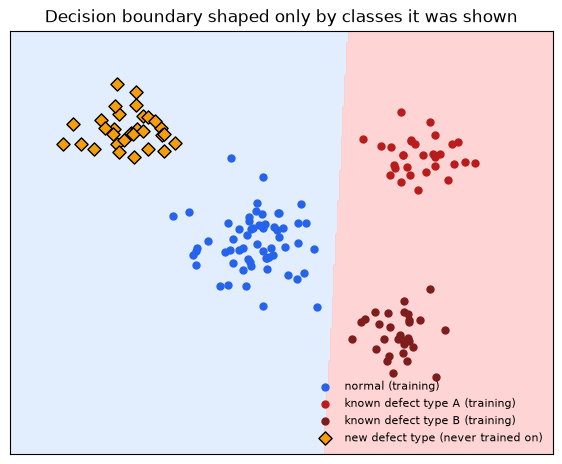
Caption: Blue-shaded region = “predicted normal”, red-shaded region = “predicted defect”. The classifier’s boundary was fit using only the blue and red training points – it has no way of knowing where a truly new defect type will fall, and here the new type lands mostly inside the “normal” region.
This is exactly what an open-set recognition problem looks like: the model was trained under a closed-world assumption (every category it will ever see was present during training), but the real world keeps introducing categories it never “knew” about.
It gets worse with class imbalance.
The held-out-class experiment isolates one failure mode. A second, compounding problem is visible directly in this workshop’s own data: real defect classes are not evenly represented.
class_counts = theory_metadata[theory_metadata['label'] == 'defect']['defect_class'].value_counts()
fig, ax = plt.subplots(figsize=(8, 4.5))
ax.barh(class_counts.index[::-1], class_counts.values[::-1], color='#0891b2')
ax.set_xlabel('number of labeled images in this workshop dataset')
ax.set_title('Real defect classes are not evenly represented')
plt.tight_layout()
plt.show()

Caption: Live counts from dataset/metadata.csv. A classifier trained on this distribution will, by default, get very little signal about the rarest combinations – and combinations with only 1-2 examples cannot be meaningfully learned or evaluated at all.
Callout
Put the two problems together – a closed-set boundary, fit on an imbalanced and incomplete label set – and “just train a classifier” doesn’t look like a shortcut anymore. It will require re-labeling and re-training every time production introduces a new defect pattern or the class balance drifts.
This is the reason why many automated inspection initiatives fail in practice: the model is only as good as the labels it was trained on, and the labels are only as good as the human effort that produced them. Once something changes, the model is no longer valid, and nobody has the time or budget to collect and label a new dataset every time a new defect appears on the line.
1.4 From Classifier to Anomaly Detector¶
None of this means supervised classifiers are bad – they are usually the right choice when the category list is genuinely closed and stable (this is what the V1_D4 transfer-learning module covers). Anomaly detection shines when that assumption breaks down, which is common in inspection settings.
Supervised binary classifier |
One-class anomaly detector (PatchCore) |
|
|---|---|---|
Needs labeled defect examples? |
Yes, for every category it should catch |
No, trains on normal images only |
New, never-seen defect type appears |
Likely missed |
Can be caught, if it looks unlike normal |
Rare / imbalanced defect classes |
Hurts training directly |
Irrelevant, defects are never a training class |
Output |
A label (and maybe a probability) |
A continuous “how far from normal” score |
When production changes |
Usually needs re-labeling + re-training |
Memory bank can be rebuilt from new normal images only, no re-labeling needed. |
Best suited for |
A stable, fully-enumerated set of known categories |
Open-ended, evolving, or rare-defect inspection settings |
The rest of this notebook builds the one-class alternative from the ground up: same idea of turning images into feature vectors, but the question asked of those vectors changes from “which learned category is this closest to?” to “have we seen anything like this in normal production?”
{kind=link}
Figure 4: One-class anomaly detection as a normal catalog. The central question is not “which defect class is this?” but “does this new local pattern have a close match among normal patterns?”
This is why anomaly detection can handle unknown defect types better than a closed-set classifier: it does not need a class name for a new defect. It only needs the new region to be sufficiently unlike normal regions – exactly the property the yellow diamonds in Figure 3b were missing.
2. From Images to Patch Embeddings¶
A pretrained backbone converts pixels into feature vectors.
For anomaly detection, the classifier head introduced in Section 1.3 is discarded entirely. The useful object is the intermediate representation:
early layers capture edges, local contrast, and texture;
middle layers capture repeated motifs and local shapes;
later layers capture larger semantic patterns.
Steel defects are often local texture disruptions, so intermediate patch features are very valuable.

Figure 5: Image-level embeddings summarize the whole image. Patch-level embeddings preserve local information.
Think of an embedding as a compressed description. A good embedding does not store every pixel. It stores the aspects of the image that the backbone has learned are useful: edges, repeated textures, shapes, transitions, and eventually larger visual patterns.
Note
A handwriting analogy: two people can write the word “steel” in wildly different handwriting – different pixels, different stroke widths, different slant – and you still read the same word. Somewhere between the raw ink strokes and the meaning “steel”, your visual system threw away everything that doesn’t matter (exact pixel positions) and kept only what does (the pattern of letters). A pretrained backbone’s embedding is doing the same kind of lossy-but-useful compression for steel surface texture instead of handwriting.
2.1 Image Embeddings vs Patch Embeddings¶
An image embedding compresses the whole image into one vector. That is convenient, but it can hide small local defects.
A patch embedding keeps a spatial grid of feature vectors. If a feature map has shape [C, H, W], it contains H x W patch descriptors, each with C channels. PatchCore stores these local descriptors from normal images.
{kind=link}
Figure 6: The long steel strip is treated as many local neighborhoods. PatchCore scores those local neighborhoods rather than relying only on one global image summary.
In practice, these patches are not literally non-overlapping yellow boxes. CNN (convolutional neural network) and ViT (Vision Transformer) features have receptive fields and patch tokens that overlap in what they “see”. The figure is a simplified teaching view: anomaly detection becomes easier when the model can ask many local questions instead of one global question.
batch_size, channels, height, width = 2, 512, 28, 28
feature_map = torch.randn(batch_size, channels, height, width)
patch_table = feature_map.permute(0, 2, 3, 1).reshape(-1, channels)
print('Feature map:', tuple(feature_map.shape))
print('Patch table:', tuple(patch_table.shape))
print('Patches per image:', height * width)
Feature map: (2, 512, 28, 28)
Patch table: (1568, 512)
Patches per image: 784
The tensor example above is the shape conversion behind the intuition:
[batch, channels, height, width]is how CNN feature maps are usually stored in PyTorch.Each
(height, width)location is one local feature descriptor.PatchCore reshapes the grid so each row is one patch vector.
If height = 28 and width = 28, then one image contributes 784 local descriptors before any memory reduction. This is why memory-bank size becomes important quickly.
This is not just a shape trick on random numbers. You don’t need to read every line below; just notice that the same permute + reshape step works on a real steel image passed through a real pretrained backbone.
from PIL import Image as PILImage
import pandas as pd
import torchvision.transforms as T
import timm
theory_metadata = pd.read_csv(DATASET_ROOT / 'metadata.csv')
sample_row = theory_metadata[theory_metadata['workshop_split'] == 'train/normal'].iloc[0]
sample_image = PILImage.open(DATASET_ROOT / sample_row['relative_path']).convert('RGB')
preprocess = T.Compose([T.Resize((224, 224)), T.ToTensor()])
sample_tensor = preprocess(sample_image).unsqueeze(0)
real_backbone = timm.create_model('resnet18', features_only=True, pretrained=True, out_indices=(2,))
real_backbone.eval()
with torch.no_grad():
real_feature_map = real_backbone(sample_tensor)[0]
real_patch_table = real_feature_map.permute(0, 2, 3, 1).reshape(-1, real_feature_map.shape[1])
fig, axes = plt.subplots(1, 2, figsize=(9, 4))
axes[0].imshow(sample_image)
axes[0].set_title('Real workshop image')
axes[0].axis('off')
axes[1].imshow(real_feature_map[0, 0].numpy(), cmap='viridis')
axes[1].set_title('One channel of its feature map')
axes[1].axis('off')
plt.show()
print('Real feature map:', tuple(real_feature_map.shape))
print('Real patch table:', tuple(real_patch_table.shape))
Warning: You are sending unauthenticated requests to the HF Hub. Please set a HF_TOKEN to enable higher rate limits and faster downloads.

Real feature map: (1, 128, 28, 28)
Real patch table: (784, 128)
A pretrained deep learning model turned the photo above into a [1, C, H, W] feature map, and the same reshape from the toy example turns it into a table of real patch vectors. The hands-on notebooks do exactly this, for every image in the dataset, at a larger scale.
3. One-class Reasoning in Feature Space¶
Imagine every normal patch as a point in feature space. Normal steel texture should occupy recurring regions in that space. A defect patch should often land far away from those normal regions.
This idea does not require a learned classifier. It only requires a useful feature space and a distance function.
Note
This is the same trick your immune system uses. T-cells are trained (via a selection process in the thymus) to recognize the body’s own healthy cells as “self” and are discarded if they react to self. They are never shown a catalog of every virus and bacterium that might attack later; anything that doesn’t match “self” closely enough is treated as suspicious by default. That is a one-class system: define normal well, then flag whatever fails to match it, without needing a name for the threat in advance. PatchCore’s memory bank of normal patches plays the same role as the body’s catalog of “self”.

Figure 7: A simplified feature-space picture. Normal examples form a region. Defect examples are suspicious when they fall far from that normal region.
In real models this space is not two-dimensional. It may have hundreds or thousands of dimensions. We draw it in 2D because the idea is easier to see: “near normal” is reassuring, “far from normal” is suspicious.
3.1 PatchCore Anomaly Detection Algorithm: Nearest-neighbor Scoring¶
Section 3 just argued that “near normal” should mean “not anomalous” in feature space. PatchCore turns that idea into a concrete algorithm:
Save many normal patch vectors in a memory bank.
For a test patch, compute the distance – the Euclidean (L2) distance between feature vectors – from it to every vector in the memory bank, and keep the smallest one: the distance to its closest normal patch.
Use that smallest distance as the local, per-patch anomaly score.
Aggregate all of a test image’s per-patch scores into one image-level anomaly score, usually by taking the maximum over patches: the single most suspicious patch determines the whole image’s score, since a defect can be small and confined to one region.
The intuition is direct: if the closest normal patch is still far away, the test patch is suspicious. The toy demo below computes exactly this – nearest-neighbor distance, then a max over patches – end to end, on synthetic feature vectors.

Figure 8: Every test patch asks for its closest normal patch. The longer the dashed line, the more unusual that test patch is.
This is not a probability from a softmax classifier. It is a distance-based score. That distinction matters: the model is not saying “this is defect type 3 with 91% probability”. It is saying “this local pattern is far from the normal patterns I stored”.
normal_memory = torch.randn(250, 64) * 0.5
num_toy_images = 40
patches_per_image = 30
normal_images = torch.randn(num_toy_images, patches_per_image, 64) * 0.5
abnormal_images = torch.randn(num_toy_images, patches_per_image, 64) * 0.5 + 1.4
def image_score(test_patches, memory_bank):
distances = torch.cdist(test_patches, memory_bank)
return distances.min(dim=1).values.max()
normal_scores = torch.stack([image_score(patches, normal_memory) for patches in normal_images])
abnormal_scores = torch.stack([image_score(patches, normal_memory) for patches in abnormal_images])
print(f'Mean normal image score: {normal_scores.mean():.3f}')
print(f'Mean abnormal image score: {abnormal_scores.mean():.3f}')
Mean normal image score: 5.045
Mean abnormal image score: 12.109
The toy example is deliberately simple: forty “abnormal” toy images are built from patches shifted away from the normal memory. The same principle applies in a real backbone feature space, but the shift is not manually created. It comes from visual differences in texture, edges, contrast, and local structure.
Each image’s score uses its single most suspicious local patch (the maximum over per-patch nearest-neighbor distances). This is useful for industrial defects because a defect may occupy only a small part of a large image. We will reuse normal_scores and abnormal_scores in Section 5.2 to compute a real AUROC number.
4. PatchCore Step by Step¶
PatchCore is a practical engineering recipe around nearest-neighbor scoring:
choose a pretrained backbone;
select intermediate layers;
extract normal patch features;
reduce the memory bank with coreset sampling;
compare test patches to the memory bank;
upsample patch scores into an anomaly heatmap.
Its strength is that it often works well without training a task-specific deep network. But in some cases, fine-tuning the backbone on normal images can improve performance.
{kind=link}
Figure 9: PatchCore has a training phase and an inference phase. Training creates the normal memory. Inference compares new image patches to that memory.
Note
The word “training” can be misleading here. PatchCore is not doing the same kind of gradient-based training as a CNN classifier. It does not spend epochs updating millions of weights for a new classification head. Most of the work is feature extraction and memory-bank construction.
4.1 The Memory Bank¶
The memory bank is the set of normal patch descriptors. It is not a neural network layer and it is not learned by backpropagation. It is closer to a lookup table of normal examples in feature space.
Larger memory banks can represent normal variation better, but they also increase runtime and memory usage. This is why PatchCore includes coreset sampling.
{kind=link}
Figure 10: The memory bank stores local normal patch embeddings. At test time, every new patch is compared with this bank.
A useful analogy is a library of normal texture snippets. If a test snippet resembles something in the library, it is probably normal. If it has no good match, it deserves attention.
4.2 Coreset Sampling¶
Coreset sampling keeps a representative subset of normal patch vectors. The goal is to cover the same feature-space territory with fewer points.
In the hands-on notebook, coreset_sampling_ratio is one of the main knobs:
higher ratio: more memory, potentially better coverage, slower inference;
lower ratio: faster and lighter, but may miss normal variation.
{kind=link}
Figure 11: Coreset sampling removes redundancy while trying to keep coverage of the normal feature distribution.
If many normal patches are almost identical, keeping all of them is wasteful. Coreset sampling tries to keep the patches that best represent the spread of normality. This is one reason PatchCore can be practical even when each image contributes many patch descriptors.
A concrete look at coreset sampling
Coreset sampling is not a vague “keep some points” idea. Anomalib’s PatchCore uses a greedy farthest-point algorithm (also called k-center greedy, or minimax facility location):
Start with all normal patch points, and an empty selected set, a placeholder for the coreset.
Pick one starting point at random and add it to the selected set.
Repeat until the selected set reaches the target size:
for every point, compute its distance to the nearest point already selected;
pick the point with the largest such distance — the point currently worst represented;
add that point to the selected set.
This is repeated until the coreset reaches the desired size. The result is a set of points that are spread out in feature space, capturing the diversity of normal patches without redundancy.
You don’t need to trace every line of the code below. Focus on the plot: the coreset should spread out and pick boundary/representative points rather than piling up inside the dense clusters.
rng = np.random.default_rng(0)
cluster_centers = rng.uniform(-3, 3, size=(6, 2))
normal_patches_2d = torch.tensor(
np.concatenate([rng.normal(loc=center, scale=0.25, size=(40, 2)) for center in cluster_centers]),
dtype=torch.float32,
) # 240 redundant "normal patch" points in 6 clusters
def greedy_coreset(points, k, seed=0):
n = points.shape[0]
generator = torch.Generator().manual_seed(seed)
selected = [torch.randint(n, (1,), generator=generator).item()]
min_dist = torch.cdist(points, points[selected]).squeeze(1)
for _ in range(k - 1):
idx = torch.argmax(min_dist).item()
selected.append(idx)
min_dist = torch.minimum(min_dist, torch.cdist(points, points[idx:idx + 1]).squeeze(1))
return selected
coreset_idx = greedy_coreset(normal_patches_2d, k=24)
fig, ax = plt.subplots(figsize=(6, 5))
ax.scatter(normal_patches_2d[:, 0], normal_patches_2d[:, 1], s=18, alpha=0.35, color='#94a3b8', label='all normal patches (240)')
ax.scatter(normal_patches_2d[coreset_idx, 0], normal_patches_2d[coreset_idx, 1], s=80, color='#dc2626', marker='*', label='greedy coreset (24)')
ax.set_title('Greedy farthest-point coreset selection')
ax.legend(frameon=False)
ax.grid(alpha=0.2)
plt.show()
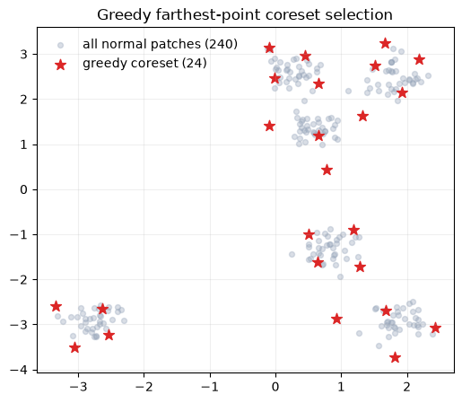
This is not a simplified analogy — it is essentially the same algorithm anomalib’s KCenterGreedy sampler runs internally on real patch embeddings. At production scale, PatchCore first applies a random projection to shrink the embedding dimensionality before running this loop, purely for speed; the selection logic itself is identical to what you just ran.
Notice how the coreset (red stars) avoids clustering inside the dense blobs. It prefers points that are still far from everything already chosen, which is exactly what “keep coverage of the normal distribution while dropping redundancy” means in practice.
5. Heatmaps, Image Scores, and Thresholds¶
A PatchCore heatmap is a spatial view of patch distances. Bright regions are patches that look far from the normal memory bank.
The image-level score is usually derived from the strongest suspicious region. A threshold then turns the continuous score into a decision:
below threshold: accept as normal;
above threshold: flag as anomalous.
Thresholds are operational choices. A steel mill may prefer more false alarms if missed defects are expensive.
Note
A smoke detector faces the identical tradeoff. Set the sensitivity too low and it stays silent while the kitchen fills with smoke from burning oil. Set it too high and it screams every time someone browns butter. Nobody asks “what is the correct sensitivity for a smoke detector” in the abstract. The right answer depends on how costly a missed fire is versus how annoying a false alarm is. A PatchCore threshold is the same knob, tuned for a specific production line instead of a specific kitchen.
{kind=link}
Figure 12: Local patch scores become a heatmap. A threshold turns continuous scores into a binary decision.
Heatmaps are often as important as the final number. If the model flags an image as anomalous but the heatmap highlights an irrelevant border artifact, the model may be learning the wrong cue.
From a coarse score grid to a smooth heatmap
The heatmap in Figure 12 does not appear out of thin air. PatchCore scores a coarse grid of patches (for example 28x28 for a 224x224 image), then has to turn that coarse grid into a full-resolution heatmap. Anomalib does this in two steps:
Upsample the coarse grid to image resolution with nearest-neighbor interpolation — each coarse cell is simply repeated into a block of pixels.
Smooth the result with a Gaussian blur, which turns the blocky upsampled grid into the soft heatmap you actually see.
import torch.nn.functional as F
coarse_scores = torch.rand(1, 1, 8, 8) * 0.15
coarse_scores[0, 0, 2:4, 5:7] += 3.0 # simulated local defect region
nearest_upsampled = F.interpolate(coarse_scores, size=(224, 224), mode='nearest')
def gaussian_blur(x, sigma=4):
kernel_size = 2 * int(4 * sigma + 0.5) + 1
coords = torch.arange(kernel_size, dtype=torch.float32) - kernel_size // 2
kernel_1d = torch.exp(-(coords ** 2) / (2 * sigma ** 2))
kernel_1d /= kernel_1d.sum()
kernel_2d = (kernel_1d[:, None] * kernel_1d[None, :]).view(1, 1, kernel_size, kernel_size)
return F.conv2d(x, kernel_2d, padding=kernel_size // 2)
smooth_heatmap = gaussian_blur(nearest_upsampled, sigma=4)
fig, axes = plt.subplots(1, 3, figsize=(12, 3.6))
axes[0].imshow(coarse_scores.squeeze(), cmap='magma')
axes[0].set_title('Coarse 8x8 patch scores')
axes[1].imshow(nearest_upsampled.squeeze(), cmap='magma')
axes[1].set_title('Nearest-neighbor upsampled (blocky)')
axes[2].imshow(smooth_heatmap.squeeze(), cmap='magma')
axes[2].set_title('+ Gaussian blur (matches Anomalib)')
for ax in axes:
ax.axis('off')
plt.show()


Figure 13: Score distributions and thresholding. Moving the threshold changes the balance between false alarms and missed defects.
There is no universally correct threshold. A threshold is a business and engineering choice. In safety-critical inspection, missing a defect may be much worse than sending extra images to manual review. In a high-throughput line, too many false alarms can also be costly.
5.1 Metrics for This Workshop¶
We focus on image-level evaluation:
AUROC: how well scores rank defects above normals across thresholds;
F1: a threshold-dependent balance of precision and recall;
qualitative heatmaps: do highlighted regions make visual sense?
Pixel-level metrics are useful when masks are available, but they add annotation conversion work. We intentionally keep them out of this module.
5.2 How to interpret AUROC and F1¶
AUROC asks: if we randomly pick one normal image and one defect image, how often does the defect image receive a higher anomaly score? It is threshold-independent and useful for comparing score quality.
F1 depends on a chosen threshold. It combines precision and recall:
precision asks: when the model raises an alarm, how often is it correct?
recall asks: of all actual defects, how many did the model catch?
In the hands-on section, do not only chase one metric. Also inspect heatmaps and failure cases.
normal_scores and abnormal_scores from Section 3.1 are exactly what AUROC measures. We don’t need a real dataset to make the metric concrete: label those toy image scores (0 = normal, 1 = abnormal) and compute a real AUROC number and ROC curve right now.
from sklearn.metrics import roc_auc_score, roc_curve
toy_scores = torch.cat([normal_scores, abnormal_scores]).numpy()
toy_labels = np.concatenate([np.zeros(len(normal_scores)), np.ones(len(abnormal_scores))])
toy_auroc = roc_auc_score(toy_labels, toy_scores)
fpr, tpr, _ = roc_curve(toy_labels, toy_scores)
fig, ax = plt.subplots(figsize=(5, 5))
ax.plot(fpr, tpr, color='#2563eb', lw=2, label=f'toy AUROC = {toy_auroc:.3f}')
ax.plot([0, 1], [0, 1], color='#94a3b8', lw=1, ls='--', label='random guessing')
ax.set_xlabel('false positive rate')
ax.set_ylabel('true positive rate')
ax.set_title('ROC curve for the toy PatchCore scores from Section 3.1')
ax.legend(frameon=False)
plt.show()
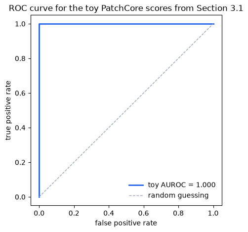
This toy AUROC is very high because the abnormal patches were hand-shifted far away from the normal memory. In the hands-on notebook, the same computation runs on real steel images, and the separation between normal and defect scores is rarely this clean — that gap between “toy AUROC” and “real AUROC” is itself a useful discussion point.
Think of AUROC as grading your model on how perfectly it orders your predictions. If your positive examples always score higher than your negative examples, your AUROC is perfect (1.0). If your model is no better than random guessing, your AUROC is 0.5. If your model is worse than random, your AUROC is below 0.5.
However, even if the AUROC is perfect, the F1 score could be low. This happens if your chosen classification threshold doesn’t cleanly separate the two groups, resulting in poor Precision or Recall. In practice, you will often tune the threshold to balance these metrics according to your operational needs.
6. Backbone Choice¶
PatchCore is not tied to one architecture. The backbone defines the feature geometry.
In this workshop:
resnet18is the fast smoke-test option;wide_resnet50_2is the recommended CNN baseline; CNNs are fast and memory-efficient, and have been the standard for industrial inspection for years, at least until the “transformer revolution”. They are still a strong choice for many defect types.vit_small_patch14_dinov2.lvd142mtests transformer-style DINOv2 features. The transformer architecture is more computationally expensive, but it can capture larger context and may produce better embeddings for certain defect types.
The best choice depends on accuracy, runtime, memory, and heatmap usefulness.
{kind=link}
Figure 14: The same PatchCore method can use different pretrained backbones. The backbone changes what “similar” means in feature space.
Practical intuition:
resnet18is useful when you want quick feedback. It has fewer parameters and usually runs faster.wide_resnet50_2is often a strong PatchCore baseline because the wider feature channels provide rich local descriptors.vit_small_patch14_dinov2.lvd142muses transformer-style features. It may capture different structure, but it can be slower and heavier.
The the best answer is empirical.
try:
import timm
for backbone in ['resnet18', 'wide_resnet50_2', 'vit_small_patch14_dinov2.lvd142m']:
model = timm.create_model(backbone, features_only=True, pretrained=False)
print(backbone, 'feature layers:', model.feature_info.module_name())
except Exception as exc:
print('Could not inspect timm feature layers:', exc)
resnet18 feature layers: ['act1', 'layer1', 'layer2', 'layer3', 'layer4']
wide_resnet50_2 feature layers: ['act1', 'layer1', 'layer2', 'layer3', 'layer4']
vit_small_patch14_dinov2.lvd142m feature layers: ['blocks.9', 'blocks.10', 'blocks.11']
This section uses resnet18, wide_resnet50_2, and a ViT backbone as fixed feature extractors — the same concept introduced in Section 1.3. The internal architecture of these models (why ResNet's skip connections matter, how ViT processes image patches) and the practical question of when to freeze vs fine-tune are covered in depth in Episode 3 (Transfer Learning — VGG, ResNet, ViT).
7. Practical Failure Modes¶
Of course, not all methods are perfect. Common anomaly detection failure modes:
the normal training set is too narrow, so normal variation is flagged as anomalous;
the backbone is too semantic and ignores small texture defects;
the image resize distorts important geometry;
the threshold is selected on too few examples;
heatmaps highlight edges, shadows, or acquisition artifacts instead of defects.
The hands-on notebooks are designed to expose these tradeoffs rather than hide them.
7.1 What good troubleshooting looks like¶
When PatchCore behaves badly, ask concrete questions:
Are the training images truly normal?
Are the test images preprocessed the same way as training images?
Is the heatmap pointing to the defect, or to a border/crop/lighting cue?
Does the backbone preserve texture detail at the selected layers?
Is the memory bank too small after coreset sampling?
These questions are more useful than simply trying random hyperparameters. They connect the result back to the method’s assumptions.
Exercise
In this episode:
Re-run the Section 1.3 classifier experiment holding out a different defect class (for example
defect_1ordefect_2instead ofdefect_4) – is the catch-rate gap always this large, or does it depend on how visually distinct the held-out class is from the others?Re-run the coreset demo in Section 4.2 with a smaller
k(for example 8 instead of 24) and see how coverage of the clusters degrades.In the hands-on Anomalib notebook, compare
coreset_sampling_ratioandnum_neighborsacross backbones and connect the result back to what you saw in the toy demo.Read about PaDiM and SPADE, two other feature-embedding-based anomaly detection methods that predate PatchCore, to see what problem PatchCore’s coreset sampling and patch-level scoring were specifically designed to solve.
Try swapping the toy backbone in Section 2.1 for
wide_resnet50_2or a ViT and compare the real feature map shapes.
In the hands-on notebooks:
First visualize feature embeddings with PCA and t-SNE;
Then use Anomalib to train and evaluate PatchCore end to end on the prepared Severstal subset.
Keypoints
If one phrase should stay with you, it is this: PatchCore is a nearest-neighbor method over pretrained local image features. - The more important habit to leave with, though, is the one built in Section 1: before reaching for an unfamiliar method, build the boring baseline first and let its failure mode tell you what you actually need.
The path through this notebook was deliberately not a straight line to PatchCore:
Section 1 built increasingly realistic “obvious” solutions – a tiny MLP, then a pretrained-backbone classifier – on real steel images, and showed the latter structurally fails on a defect type it never trained on. That is an open-set recognition problem, not a “use a bigger model” problem.
Sections 2-6 built a different answer from the ground up: turn images into feature vectors, then ask “have we seen something like this in normal production?” instead of “which known class is this?”
PatchCore is a strong industrial anomaly detection baseline because it combines:
pretrained visual representations;
local patch-level comparison;
a normal memory bank, reduced by greedy coreset sampling;
nearest-neighbor anomaly scores, upsampled and blurred into a heatmap;
a threshold-dependent decision (F1) plus a threshold-free ranking measure (AUROC).
See also
Roth et al., “Towards Total Recall in Industrial Anomaly Detection”, CVPR 2022 – the PatchCore paper.
Defard et al., “PaDiM: a Patch Distribution Modeling Framework for Anomaly Detection and Localization”, 2020 – an earlier patch-based method PatchCore builds on conceptually.
Cohen and Hoshen, “Sub-Image Anomaly Detection with Deep Pyramid Correspondences” (SPADE), 2020.
Scheirer et al., “Toward Open Set Recognition”, TPAMI 2013 – the formal framing behind Section 1.3’s “held-out class” experiment.
Anomalib 2.5 documentation for
Folder,Patchcore, andEngine.Timm model library for PyTorch backbones.
CNN Fundamentals & Multi-class Classification¶
Attention
Claude was used to help generateing the schematic figures.
The audiences are welcome to have a deep dive using this book, which is also the material the current notebook refers to.
1. Convolutional Neural Network - Reduction on the number of required parameters compared to Fully connected neural network¶
What is a convolution: \([\mathbf{H}]_{i, j}=u+\sum_a \sum_b[\mathbf{V}]_{a, b}[\mathbf{X}]_{i+a, j+b}\)
\([\mathbf{X}]_{i, j}\) and \([\mathbf{H}]_{i, j}\) denote the pixel at location \((i, j)\) in the input image and hidden representation, respectively. \(a\) and \(b\) denote offset.
Note
The weight tensor (kernel) \(\mathbf{V}\) does not show \({i, j}\) dependence, which indicates that it does not depend on the location within the image, which is what we will talk about in the following: translation invariance.
1.1 Translation invariance¶
{kind=link}
Where the defect locates does not affect the consequence whether it will be classified as a defect or what type of defect it is.
Fully connected neural network vs. CNN
{kind=link}
In this example, \(a, b \in(-1000,1000)\). However, in practice, one does not have to look very far from the location \({i, j}\) in order to gather information to assess what is going on with \([\mathbf{H}]_{i, j}\). In other words, we can define \(a, b \in(-\Delta,\Delta)\). Consequently, the number of parameters can be further reduced.
This brings up to introduced the second important concept in CNN:
1.2 Locality¶

\([\mathbf{H}]_{i, j}=u+\sum_{a=-\Delta}^{\Delta} \sum_{b=-\Delta}^{\Delta}[\mathbf{V}]_{a, b}[\mathbf{X}]_{i+a, j+b}\).
Now the convolution is restricted to a specific range in terms of \(a\) and \(b\). \(\mathbf{V}\) is referred to as a convolution kernel, a filter, or simply the layer’s weights that are learnable parameters.
Convolution reduces parameters because it exploits two key assumptions:
- Weight sharing: The same filter is applied everywhere in the image. This means you use one set of weights to scan the entire spatial dimension, rather than learning separate weights for each location. Weight sharing leverages the assumption of translation invariance — the idea that features that are useful in one part of the image are also useful elsewhere.
- Local connectivity: Each neuron only looks at a small region, not the entire input. This means you need far fewer weights per neuron than in a fully connected layer.
1.3 Feature maps (illustrative examples: what they look like, what they detect)¶
When a CNN applies a filter to an input image, it produces a 2D grid of responses called a feature map. Each value in the feature map represents how strongly that filter’s pattern was detected at a particular spatial location. Applying multiple filters produces multiple feature maps, one per filter, forming a stack that grows deeper as the network learns more patterns.
What do feature maps detect?
Feature maps are learned from data. However, a consistent pattern emerges across different networks and tasks: the complexity of detected features increases with depth.
Early layers detect simple, low-level patterns: edges, corners, color gradients
Middle layers combine these into textures, shapes, and repeated structures
Deeper layers respond to high-level concepts: object parts, semantic regions
In the context of industrial defect detection, this hierarchy is particularly intuitive:
Early feature maps highlight sharp intensity changes - the boundary of a scratch
Middle feature maps capture elongated structures - the shape of a crack
Deeper feature maps encode defect-like regions - combinations of shape, texture, and contrast that distinguish a defect from normal steel surface
2. What is exactly happening when we are doing convolutions for images?¶
2.1 The cross-correlation operation¶
In the two-dimensional cross-correlation operation, we begin with the convolution window positioned at the upper-left corner of the input tensor and slide it across the input tensor, both from left to right and top to bottom.
{kind=link}
The output size is given by the input size \(n_{\mathrm{h}} \times n_{\mathrm{w}}\) minus the size of the convolution kernel \(k_{\mathrm{h}} \times k_{\mathrm{w}}\) via \(\left(n_{\mathrm{h}}-k_{\mathrm{h}}+1\right) \times\left(n_{\mathrm{w}}-k_{\mathrm{w}}+1\right)\).
import torch
from torch import nn
# corr2d function, which accepts an input tensor X and a kernel tensor K and returns an output tensor Y
def corr2d(X, K): #@save
"""Compute 2D cross-correlation."""
h, w = K.shape
Y = torch.zeros((X.shape[0] - h + 1, X.shape[1] - w + 1))
for i in range(Y.shape[0]):
for j in range(Y.shape[1]):
Y[i, j] = (X[i:i + h, j:j + w] * K).sum()
return Y
X = torch.tensor([[0.0, 1.0, 2.0], [3.0, 4.0, 5.0], [6.0, 7.0, 8.0]])
K = torch.tensor([[0.0, 1.0], [2.0, 3.0]])
corr2d(X, K)
tensor([[19., 25.],
[37., 43.]])
2.2 Convolution layers¶
class Conv2D(nn.Module):
def __init__(self, kernel_size):
super().__init__()
self.weight = nn.Parameter(torch.rand(kernel_size))
self.bias = nn.Parameter(torch.zeros(1))
def forward(self, x):
return corr2d(x, self.weight) + self.bias
💡 How to design a kernel?
# Example: kernel for edge detection
X = torch.ones((5, 8))
X[:, 2:6] = 0
X
tensor([[1., 1., 0., 0., 0., 0., 1., 1.],
[1., 1., 0., 0., 0., 0., 1., 1.],
[1., 1., 0., 0., 0., 0., 1., 1.],
[1., 1., 0., 0., 0., 0., 1., 1.],
[1., 1., 0., 0., 0., 0., 1., 1.]])
K = torch.tensor([[1.0, -1.0]])
Y = corr2d(X, K)
Y
tensor([[ 0., 1., 0., 0., 0., -1., 0.],
[ 0., 1., 0., 0., 0., -1., 0.],
[ 0., 1., 0., 0., 0., -1., 0.],
[ 0., 1., 0., 0., 0., -1., 0.],
[ 0., 1., 0., 0., 0., -1., 0.]])
If we know precisely what we are looking for, designing an edge detector by finite differences [-1, 1] is neat. However, as we look at larger kernels, and consider successive layers of convolutions, it might be impossible to specify precisely what each filter should be doing manually.
In this case, we would like to learn the kernel that generated Y from X by looking at the input–output pairs only.
# Construct a two-dimensional convolutional layer with 1 output channel and a
# kernel of shape (1, 2). For the sake of simplicity, we ignore the bias here
conv2d = nn.LazyConv2d(1, kernel_size=(1, 2), bias=False)
# Note: LazyConv2d infers in_channels automatically on the first forward pass.
# The equivalent explicit version would be:
# conv2d = nn.Conv2d(in_channels=1, out_channels=1, kernel_size=(1, 2), bias=False)
#
# Throughout this theory section we use LazyConv2d for brevity and consistency
# with the course reference (d2l.ai). In the hands-on exercises you will use
# nn.Conv2d with explicit dimensions, as is standard in practice.
# The two-dimensional convolutional layer uses four-dimensional input and
# output in the format of (example, channel, height, width), where the batch
# size (number of examples in the batch) and the number of channels are both 1
X = X.reshape((1, 1, 5, 8))
Y = Y.reshape((1, 1, 5, 7))
lr = 3e-2 # Learning rate
for i in range(10):
Y_hat = conv2d(X)
l = (Y_hat - Y) ** 2
conv2d.zero_grad()
l.sum().backward()
# Update the kernel
conv2d.weight.data[:] -= lr * conv2d.weight.grad
if (i + 1) % 2 == 0:
print(f'epoch {i + 1}, loss {l.sum():.3f}')
epoch 2, loss 6.059
epoch 4, loss 1.453
epoch 6, loss 0.349
epoch 8, loss 0.084
epoch 10, loss 0.020
conv2d.weight.data.reshape((1, 2))
tensor([[ 0.9686, -0.9686]])
The learned kernel tensor is remarkably close to the kernel tensor K we defined earlier.
2.3 Feature maps & receptive field (now with equations and tensor notation)¶
Before diving into the details, it is worth understanding what these two concepts are fundamentally about and how they relate to CNN design:
Feature maps are tied to channel depth - the more filters a layer applies, the more feature maps it produces, and the richer the representation at each spatial location. Adding filters asks: “what else is present here?”
Receptive field is tied to network depth - each additional layer expands the region of the original input that influences a single output neuron. Adding layers asks: “how much of the image can I see?”
Together they explain the two core design choices in CNN architectures: how wide (channel depth) and how deep (network depth) a network should be.
These are not abstract principles. They directly shape real architectures. LeNet, one of the earliest and most influential CNN architectures which we will study in Section 3, already embodies both ideas: it stacks multiple convolutional layers to grow the receptive field, while increasing channel depth across layers to learn richer feature representations. What may seem like simple design choices here will become concrete architectural decisions when we examine LeNet in detail.
2.3.1 Color (Input) Channels vs. Feature Maps (Output Channels)¶
One image usually consists of three input channels: red, green, and blue. We denote the raw image as \([\mathbf{X}]_{i, j, c}\), where \(c \in\{0,1,2\}\) indexes the color channel.
When a CNN applies a filter to this image, it slides a small kernel over all input channels and produces a single 2D grid as output. To learn richer representations, the CNN applies multiple filters - each filter scans all input channels independently and produces one output channel. The result is a stack of feature maps, which increases the depth (channel dimension) of the representation.
Understanding depth increase:
One filter applied to grayscale ( \([\mathbf{X}]_{i, j}\), one input channel): produces one 2D grid.
One filter applied to RGB ( \([\mathbf{X}]_{i, j, c}\), three input channels): still produces one 2D grid (the filter weights span all three color channels).
\(D\) filters applied to RGB: produces \(D\) stacked 2D grids, forming a hidden representation \([\mathbf{H}]_{i, j, d}\) with \(D\) output channels (feature maps).
The spatial dimensions [ \(H, W\) ] remain roughly constant as the signal passes through the network; the channel dimension grows as we apply more filters. This depth increase is how networks learn hierarchical features: early layers detect simple patterns (edges), later layers detect complex shapes by combining those edges.
Mathematical notation:
where:
\([\mathbf{X}]_{i, j, c}\) is the input with \(C_{\text {in }}\) input channels (e.g., 3 for RGB or 1 for grayscale)
\([\mathbf{V}]_{a, b, c, d}\) are the filter weights; each index \(d\) is one complete filter
\([\mathbf{H}]_{i, j, d}\) is the output with \(D\) output channels (feature maps), where \(d \in \{0,1, \ldots, D-1\}\)
Each output channel \(d\) learns to detect a different pattern (edges, textures, shapes, etc.) by combining information across all input channels and spatial positions. The depth of the output increases with the number of filters-this is the primary way CNNs increase representational power as data flows through the network.

# Here we first restrict ourselves to the simplified case where both input and output layers have only one channel.
import torch.nn as nn
conv = nn.Conv2d(
in_channels=1,
out_channels=1,
kernel_size=3,
bias=True,
)
# overall structure
print(conv)
# kernel V: shape [out_ch, in_ch, kH, kW]
# Note: weights are randomly initialized (not learned yet)
print("kernel [V] shape :", conv.weight.shape)
print("kernel [V] values:", conv.weight)
# bias u: shape [out_ch]
print("bias [u] shape :", conv.bias.shape)
print("bias [u] value :", conv.bias)
# total trainable parameters
total = sum(p.numel() for p in conv.parameters())
print("total params :", total)
Conv2d(1, 1, kernel_size=(3, 3), stride=(1, 1))
kernel [V] shape : torch.Size([1, 1, 3, 3])
kernel [V] values: Parameter containing:
tensor([[[[ 0.0903, 0.2573, 0.1504],
[ 0.0803, 0.3247, -0.2501],
[-0.0209, 0.1989, -0.1891]]]], requires_grad=True)
bias [u] shape : torch.Size([1])
bias [u] value : Parameter containing:
tensor([0.0726], requires_grad=True)
total params : 10
2.3.2 Receptive field¶
In CNNs, for any element of some layer, its receptive field refers to all the elements (from all the previous layers) that may affect the calculation of during the forward propagation. When any element in a feature map needs a larger receptive field to detect input features over a broader area, we can build a deeper network.

ℹ Interesting to know
The concept of receptive fields did not originate in deep learning. It was borrowed from neuroscience. Hubel and Wiesel’s experiments on the visual cortex showed that neurons in early visual areas respond to local patterns like edges, not the entire visual field. This mirrors exactly what CNN feature maps learn: early layers detect edges and simple textures, deeper layers combine these into complex shapes.
This is not a coincidence. CNNs were partly inspired by biology, and the striking similarity between learned convolutional filters and biological visual receptors helps explain why convolutions work so well for image understanding.
Nature arrived at the same solution first.
{kind=link}
2.4 Techniques for control over the size of the output¶
If we start with an image having 240 \(\times\) 240 pixels, applying a convolutional kernel of 5 \(\times\) 5 by 10 layers reduces the image to 200 \(\times\) 200 pixels, slicing off 30% of the image and destroying interesting information on the boundaries of the original image.
2.4.1 Padding¶

One straightforward solution to this problem is to add extra pixels of filler around the boundary of our input image, thus increasing the effective size of the image.

In general, if we add a total of \(p_{\mathrm{h}}\) rows of padding and a total of \(p_{\mathrm{w}}\) columns of padding, the output shape will be
In many cases, we prefer to set \(p_{\mathrm{h}}=k_{\mathrm{h}}-1\) and \(p_{\mathrm{w}}=k_{\mathrm{w}}-1\) to give the input and output the same height and width.
CNNs commonly use convolution kernels with odd height and width values, such as 1, 3, 5, or 7. By choosing odd kernel sizes:
we can preserve the dimensionality while padding with the same number of rows on top and bottom, and the same number of columns on left and right;
we know that the output \(\mathrm{Y}[\mathrm{i}, \mathrm{j}]\) is calculated by cross-correlation of the input and convolution kernel with the window centered on \(\mathrm{X}[\mathrm{i}, \mathrm{j}]\).
# We define a helper function to calculate convolutions. It initializes the
# convolutional layer weights and performs corresponding dimensionality
# elevations and reductions on the input and output
def comp_conv2d(conv2d, X):
# (1, 1) indicates that batch size and the number of channels are both 1
X = X.reshape((1, 1) + X.shape)
Y = conv2d(X)
# Strip the first two dimensions: examples and channels
return Y.reshape(Y.shape[2:])
# 1 row and column is padded on either side, so a total of 2 rows or columns
# are added
conv2d = nn.LazyConv2d(1, kernel_size=3, padding=1)
X = torch.rand(size=(8, 8))
comp_conv2d(conv2d, X).shape
torch.Size([8, 8])
# We use a convolution kernel with height 5 and width 3. The padding on either
# side of the height and width are 2 and 1, respectively
conv2d = nn.LazyConv2d(1, kernel_size=(5, 3), padding=(2, 1))
comp_conv2d(conv2d, X).shape
torch.Size([8, 8])
Besides zero-padding (significant computational benefit; allowing CNNs to encode implicit position information within an image), there are many alternatives. For further reading, please refer to the paper below:
Alsallakh, B., Kokhlikyan, N., Miglani, V., Yuan, J., & Reblitz-Richardson, O. (2020). Mind the PAD – CNNs can develop blind spots. ArXiv:2010.02178.
2.4.2 Stride¶
In previous section, we defaulted to sliding one element at a time. However, sometimes we want to move our window more than one element at a time by skipping the intermediate locations for computational efficiency or downsample.

In general, when the stride for the height is \(s_{\mathrm{h}}\) and the stride for the width is \(s_{\mathrm{w}}\), the output shape is
If we set \(p_{\mathrm{h}}=k_{\mathrm{h}}-1\) and \(p_{\mathrm{w}}=k_{\mathrm{w}}-1\), then the output shape can be simplified to \(\left[\left(n_{\mathrm{h}}+s_{\mathrm{h}}-1\right) / s_{\mathrm{h}}\right] \times\left[\left(n_{\mathrm{w}}+s_{\mathrm{w}}-1\right) / s_{\mathrm{w}}\right]\).
If the input height and width are divisible by the strides on the height and width, then the output shape will be \(\left(n_{\mathrm{h}} / s_{\mathrm{h}}\right) \times\left(n_{\mathrm{w}} / s_{\mathrm{w}}\right)\).
conv2d = nn.LazyConv2d(1, kernel_size=3, padding=1, stride=2)
comp_conv2d(conv2d, X).shape
torch.Size([4, 4])
conv2d = nn.LazyConv2d(1, kernel_size=(3, 5), padding=(0, 1), stride=(3, 4))
comp_conv2d(conv2d, X).shape
torch.Size([2, 2])
2.4.3 Pooling¶
In many use cases, the practical question is regarding the global information of an image, for example, does it contain a defect? As a consequence, the units of our final layer should be sensitive to the entire input. This objective is achieved by gradually aggregating information, which yields coarser and coarser maps. In this way, we manage to learn a global representation, while keeping all of the advantages of convolutional layers at the intermediate layers of processing.
The further a neuron sits from the input layer, the more of the original image it can “see”. Shrinking the feature map along the way amplifies this effect: once the map is smaller, the same-sized kernel covers more ground in the original image, so the network builds up a wide view faster.
In addition, besides spatially downsampling representations, the pooling layers also serve the purpose of mitigating the sensitivity of convolutional layers to location.
2.4.3.1 Maximum pooling and average pooling¶
Max-pooling was introduced by Riesenhuber and Poggio (Riesenhuber, M., & Poggio, T. (1999). Nature Neuroscience, 2(11), 1019–1025) in the context of cognitive neuroscience to describe how information aggregation might be aggregated hierarchically for the purpose of object recognition. Actually, back to 1990, it was already used for speech recognition.
The idea of average pooling is akin to downsampling an image. The information from multiple adjacent pixels is combined, in order to obtain an image with better signal-to-noise ratio.
In almost all cases, max-pooling is preferable to average pooling, as it confers some degree of invariance to output.
{kind=link}
Imagine an edge detection problem: if the image \(X\) shows a sharp delineation between black and white, shifting the whole image by one pixel to the right, i.e., \(Z[i, j]=X[i, j+1]\), might make the new image look totally different.
In this case, using a \(2 \times 2\) max-pooling layer, regardless of whether or not the values of \(X[i, j], X[i, j+ 1], X[i+1, j]\) and \(X[i+1, j+1]\) are different, the pooling layer always outputs \(Y[i, j]=1\).
def pool2d(X, pool_size, mode='max'):
p_h, p_w = pool_size
Y = torch.zeros((X.shape[0] - p_h + 1, X.shape[1] - p_w + 1))
for i in range(Y.shape[0]):
for j in range(Y.shape[1]):
if mode == 'max':
Y[i, j] = X[i: i + p_h, j: j + p_w].max()
elif mode == 'avg':
Y[i, j] = X[i: i + p_h, j: j + p_w].mean()
return Y
X_mp = torch.tensor([[0.0, 1.0, 2.0], [3.0, 4.0, 5.0], [6.0, 7.0, 8.0]])
pool2d(X_mp, (2, 2))
tensor([[4., 5.],
[7., 8.]])
pool2d(X_mp, (2, 2), 'avg')
tensor([[2., 3.],
[5., 6.]])
2.4.3.2 Padding and stride in pooling layer¶
Motivation: Why adjust stride and padding? In real CNN architectures, we need flexibility in how we reduce spatial dimensions. Different layers require different strategies:
Aggressive reduction: When feature maps are large, we want to reduce computation quickly
Preserve detail: When we need to keep spatial information for subsequent layers
Non-uniform reduction: When input has non-square aspect ratios or asymmetric dimensions
Let’s see how stride and padding give us this control.
#Create a simple input tensor
X_ps = torch.arange(16, dtype=torch.float32).reshape((1, 1, 4, 4))
X_ps
#This creates a 4×4 feature map with predictable values (0 to 15).
#Sequential values make it clear which maximum value pooling selects.
tensor([[[[ 0., 1., 2., 3.],
[ 4., 5., 6., 7.],
[ 8., 9., 10., 11.],
[12., 13., 14., 15.]]]])
Since pooling aggregates information from an area, deep learning frameworks default to matching pooling window sizes and stride.
#Aggressive spatial reduction (stride = kernel_size)
pool2d = nn.MaxPool2d(3)
# Pooling has no model parameters, hence it needs no initialization
pool2d(X_ps)
tensor([[[[10.]]]])
Configuration:
Kernel size: \(3 \times 3\)
Stride: Defaults to 3 (non-overlapping windows)
Padding: Defaults to 0
When you have large feature maps and want to reduce computation, use stride = kernel_size for non-overlapping pooling. Each region is pooled exactly once with no overlap.
What happens:
The \(3 \times 3\) window slides with stride 3 across the \(4 \times 4\) input
Only one complete window fits (at position \([0: 3,0: 3]\) ), capturing values \(0-11\)
Maximum value in that window: \(\mathbf{1 0}\)
Output shape: [1, 1, 1, 1] (drastic reduction!)
When to use this:
Early-stage spatial reduction in deep networks
When you want maximal compression before dense layers
Trade-off: lose fine spatial details
Controlled reduction with overlapping windows (stride < kernel_size)
pool2d = nn.MaxPool2d(3, padding=1, stride=2)
pool2d(X_ps)
tensor([[[[ 5., 7.],
[13., 15.]]]])
Configuration:
Kernel size: \(3 \times 3\)
Stride: 2 (overlapping windows-stride < kernel_size)
Padding: 1 (add one row/column of zeros around edges)
When to use this:
Mid-layer spatial reduction in residual or multi-scale architectures
When you want to preserve local structure before further convolutions
Trade-off: more computation than non-overlapping pooling, but retains more signal
Non-uniform reduction for non-square feature maps
pool2d = nn.MaxPool2d((2, 3), stride=(2, 3), padding=(0, 1))
pool2d(X_ps)
tensor([[[[ 5., 7.],
[13., 15.]]]])
In real networks, a previous convolutional layer might have reduced width more than height (or vice versa). Use non-uniform kernel sizes and strides to handle asymmetric feature maps.
Consider it when your input is inherently non-square, e.g., spectrograms in audio processing, panoramic images, or document scans, where you want to reduce height and width at different rates to progressively balance the aspect ratio across layers.
Pooling is not just a fixed operation. The choice of stride and padding determines how aggressively you reduce spatial dimensions and how much detail you preserve. Good CNN design carefully controls these parameters at each layer to balance computation efficiency with feature preservation.
2.4.4 An overview of CNN architecture so far¶
{kind=link}
2.5 Multiple input and multiple output channels¶
2.5.1 Multiple input channels¶

def corr2d_multi_in(X, K):
# Iterate through the 0th dimension (channel) of K first, then add them up
return sum(corr2d(x, k) for x, k in zip(X, K))
X = torch.tensor([[[0.0, 1.0, 2.0], [3.0, 4.0, 5.0], [6.0, 7.0, 8.0]],
[[9.0, 10.0, 11.0], [12.0, 13.0, 14.0], [15.0, 16.0, 17.0]]])
K = torch.tensor([[[0.0, 1.0], [2.0, 3.0]], [[1.0, 0.0], [0.0, 1.0]]])
corr2d_multi_in(X, K)
tensor([[41., 49.],
[65., 73.]])
2.5.2 Multiple output channels¶
In the most popular neural network architectures, actually the channel dimension is increased in order to go deeper in the neural network, also typically downsampled to trade off spatial resolution for greater channel depth.

def corr2d_multi_in_out(X, K):
# Iterate through the 0th dimension of K, and each time, perform
# cross-correlation operations with input X. All of the results are
# stacked together
return torch.stack([corr2d_multi_in(X, k) for k in K], 0)
K_0 = torch.tensor([[[0.0, 1.0], [2.0, 3.0]], [[1.0, 0.0], [0.0, 1.0]]])
K_1 = torch.tensor([[[1.0, 0.0], [1.0, 0.0]], [[0.0, 1.0], [0.0, 1.0]]])
K_s = torch.stack((K_0, K_1), 0)
K_s.shape
torch.Size([2, 2, 2, 2])
K_s
tensor([[[[0., 1.],
[2., 3.]],
[[1., 0.],
[0., 1.]]],
[[[1., 0.],
[1., 0.]],
[[0., 1.],
[0., 1.]]]])
corr2d_multi_in_out(X, K_s)
tensor([[[41., 49.],
[65., 73.]],
[[26., 30.],
[38., 42.]]])
2.5.3 Pooling in multiple channels¶
When processing multi-channel input data, the pooling layer pools each input channel separately
X_mul = torch.cat((X_ps, X_ps + 1), 1)
X_mul
tensor([[[[ 0., 1., 2., 3.],
[ 4., 5., 6., 7.],
[ 8., 9., 10., 11.],
[12., 13., 14., 15.]],
[[ 1., 2., 3., 4.],
[ 5., 6., 7., 8.],
[ 9., 10., 11., 12.],
[13., 14., 15., 16.]]]])
pool2d = nn.MaxPool2d(3, padding=1, stride=2)
pool2d(X_mul)
tensor([[[[ 5., 7.],
[13., 15.]],
[[ 6., 8.],
[14., 16.]]]])
2.5.4 \(1 \times 1\) Convolutional Layer¶
\(1 \times 1\) Convolutions are popular operations which are sometimes included in the designs of complex deep networks, e.g., ResNet. \(1 \times 1\) Convolution allows:
Channel dimensionality reduction,
Cross-channel mixing
Nonlinearity without spatial cost (Network-in-Network (2013))
The bottleneck block: the pattern that made ResNet-50/101/152 practical

The inputs and outputs have the same height and width. And each element in the output is derived from a linear combination of elements at the same position in the input image.
One could think of the \(1 \times 1\) convolutional layer as constituting a fully connected layer applied at every single pixel location to transform the \(c_{\mathrm{i}}\) corresponding input values into \(c_{\mathrm{o}}\) output values.
X_11 = torch.tensor([[[1,2],[3,4]],[[5,6],[7,8]],[[9,10],[11,12]]])
K_11 = torch.tensor([[[[1]],[[0]],[[-1]]], [[[0]],[[1]],[[1]]]])
X_11.shape
torch.Size([3, 2, 2])
K_11.shape
torch.Size([2, 3, 1, 1])
def corr2d_multi_in_out_1x1(X, K):
c_i, h, w = X.shape
c_o = K.shape[0]
X = X.reshape((c_i, h * w))
K = K.reshape((c_o, c_i))
# Matrix multiplication in the fully connected layer
Y = torch.matmul(K, X)
return Y.reshape((c_o, h, w))
Y1 = corr2d_multi_in_out_1x1(X_11, K_11)
Y2 = corr2d_multi_in_out(X_11, K_11)
assert float(torch.abs(Y1 - Y2).sum()) < 1e-6
Y1
tensor([[[-8, -8],
[-8, -8]],
[[14, 16],
[18, 20]]])
Y2
tensor([[[-8., -8.],
[-8., -8.]],
[[14., 16.],
[18., 20.]]])
2.6 Flatten layer¶
After the final convolutional and pooling layers, the 3D feature tensor [ \(\mathrm{H} \times \mathrm{W} \times \mathrm{C}\) ] needs to be converted into a 1D vector before it can be passed to a fully connected layer for classification. This is what the flatten operation does - it simply unrolls all dimensions into a single vector of size \(H \times W \times C\).

# Simulate final feature tensor after conv + pooling
x = torch.randn(1, 8, 4, 4)
print("Before flatten:", x.shape) # torch.Size([1, 8, 4, 4])
# Flatten all dimensions except batch
flatten = nn.Flatten()
x_flat = flatten(x)
print("After flatten: ", x_flat.shape) # torch.Size([1, 128])
Before flatten: torch.Size([1, 8, 4, 4])
After flatten: torch.Size([1, 128])
3. LeNet¶
LeNet is among the first published CNNs to capture wide attention for its performance on computer vision tasks. The model was introduced by (and named for) Yann LeCun.
LeNet was adapted to recognize digits for processing deposits in ATM machines. To this day, some ATMs still run the code that Yann LeCun and his colleague Leon Bottou wrote in the 1990s!

The basic units in each convolutional block are a convolutional layer, a sigmoid activation function, and a subsequent average pooling operation. While ReLUs and max-pooling work better, they had not yet been discovered!
The convolutional block emits an output with shape given by (batch size, number of channel, height, width).
Each example in the minibatch must be flattened to pass output from the convolutional block to the dense block. For classification, the 10-dimensional output layer corresponds to the number of possible output classes.
def init_cnn(module):
"""Initialize weights for CNNs."""
if type(module) == nn.Linear or type(module) == nn.Conv2d:
nn.init.xavier_uniform_(module.weight)
class LeNet(nn.Module):
"""The LeNet-5 model."""
def __init__(self, lr=0.1, num_classes=10):
super().__init__()
self.lr = lr
self.num_classes = num_classes
self.net = nn.Sequential(
nn.LazyConv2d(6, kernel_size=5, padding=2), nn.Sigmoid(),
nn.AvgPool2d(kernel_size=2, stride=2),
nn.LazyConv2d(16, kernel_size=5), nn.Sigmoid(),
nn.AvgPool2d(kernel_size=2, stride=2),
nn.Flatten(),
nn.LazyLinear(120), nn.Sigmoid(),
nn.LazyLinear(84), nn.Sigmoid(),
nn.LazyLinear(num_classes))
def forward(self, X):
return self.net(X)
For the function init_cnn:
def init_cnn(module):
"""Initialize weights for CNNs."""
if type(module) == nn.Linear or type(module) == nn.Conv2d:
nn.init.xavier_uniform_(module.weight)
Note that here Xavier uniform initialization is used.
Xavier uniform draws weights from a uniform distribution centered at zero, with bounds calculated to keep the variance of activations stable across layers. Specifically, for a layer with number of inputs fan-in (inputs) and number of outputs fan-out (outputs), it samples from:
\(U\left(-\sqrt{\frac{6}{fan-in+fan-out}}, \sqrt{\frac{6}{fan-in+fan-out}}\right)\)
This ensures that as data flows forward through the network, the variance of hidden activations stays roughly constant, not exploding or vanishing.
💡 What if we just use random weights?
If we initilize with, for example, N(0,1) (standard normal), several problems arise:
Variance explosion - In early layers, if we have 1000 input features and initialize with large random values, the dot product of inputs × weights becomes huge. Activations explode. Gradients explode. Training fails.
Variance collapse - Or if we initialize too small, activations shrink layer-by-layer. Gradients vanish. The network “forgets” input information. Deep networks become untrainable.
Slow convergence - Without proper scaling, the optimizer spends iterations just recovering from bad initialization before actual learning begins.
In Xavier’s initilization, by tuning the variance based on layer width, the signal flow is stabilized across the entire network from the first forward pass, which:
Keeps hidden activations in a reasonable range
Allows gradients to flow smoothly during backprop
Enables faster, more stable training
def layer_summary(self, X_shape):
X = torch.randn(*X_shape)
for layer in self.net:
X = layer(X)
print(layer.__class__.__name__, 'output shape:\t', X.shape)
LeNet.layer_summary = layer_summary
model = LeNet()
model.layer_summary((1, 1, 28, 28))
Conv2d output shape: torch.Size([1, 6, 28, 28])
Sigmoid output shape: torch.Size([1, 6, 28, 28])
AvgPool2d output shape: torch.Size([1, 6, 14, 14])
Conv2d output shape: torch.Size([1, 16, 10, 10])
Sigmoid output shape: torch.Size([1, 16, 10, 10])
AvgPool2d output shape: torch.Size([1, 16, 5, 5])
Flatten output shape: torch.Size([1, 400])
Linear output shape: torch.Size([1, 120])
Sigmoid output shape: torch.Size([1, 120])
Linear output shape: torch.Size([1, 84])
Sigmoid output shape: torch.Size([1, 84])
Linear output shape: torch.Size([1, 10])
Note that the height and width of the representation at each layer throughout the convolutional block is reduced.
4. Techniques for improving CNN performance and training stability¶
The trained CNN/LeNet might see training accuracy higher than validation –> data cleaning; increasing data variety to help model generalize better
4.1 Data transforms¶
Before training, raw images need to be prepared for the network. In PyTorch, all preprocessing and augmentation steps are defined together in a transforms.Compose pipeline: a sequential list of operations applied to every image. This section covers the three most common types: resize, normalization, and augmentation.
4.1.1 Resize¶
Images in a dataset often come in different sizes. CNNs require a fixed input size, so resizing is almost always the first step.
import torchvision.transforms.functional as F
from PIL import Image
# Load image
img = Image.open("./Figs/Raw_scratch.png").convert('RGB') # drops alpha channel
#img = Image.open("./Figs/Raw_scratch.png")
import torchvision.transforms as T
resize = T.Resize((28, 28)) # resize to 28×28 pixels
img_resized = resize(img)
print(img_resized.size) # (28, 28)
(28, 28)
4.1.2 Normalization¶
Raw pixel values range from 0 to 255 (or 0.0 to 1.0 after converting to float). Normalization rescales pixel values to have zero mean and unit variance, which stabilizes training by keeping activations in a consistent range.
# First convert PIL image to tensor (scales to [0.0, 1.0])
to_tensor = T.ToTensor()
img_tensor = to_tensor(img_resized) # use resized image from previous step
print(img_tensor.shape)
print(img_tensor.min(), img_tensor.max()) # tensor(0.) tensor(1.)
# Normalize with mean and std
# For grayscale: one value each; for RGB: one value per channel
normalize = T.Normalize(mean=[0.5, 0.5, 0.5], std=[0.5, 0.5, 0.5])
img_normalized = normalize(img_tensor)
print(img_normalized.min(), img_normalized.max()) # tensor(-1.) tensor(1.)
torch.Size([3, 28, 28])
tensor(0.3333) tensor(0.8784)
tensor(-0.3333) tensor(0.7569)
The choice of mean and standard deviation in T.Normalize depends on the use case. Here we use [0.5, 0.5, 0.5] for both, which is a simple default that centers pixel values in the range [-1, 1] and works well for teaching and quick experiments.
In practice, when fine-tuning a pretrained model that was originally trained on ImageNet for example, you should use the ImageNet statistics (mean=[0.485, 0.456, 0.406], std=[0.229, 0.224, 0.225]), which were computed from the actual ImageNet training set. Using different values would degrade transfer learning performance. For custom datasets trained from scratch, the correct approach is to compute mean and standard deviation directly from your own training set.
4.1.3 Data augmentation¶
Augmentation artificially increases the diversity of the training set by applying random transformations to each image during training. This reduces overfitting and improves generalization.
# 1. Horizontal flip
flipped_h = F.hflip(img)
# 2. Vertical flip
flipped_v = F.vflip(img)
# 3. Rotation
rotated = F.rotate(img, angle=30)
# 4. Zoom (crop center then resize back)
w, h = img.size
cropped = F.center_crop(img, output_size=[int(h*0.7), int(w*0.7)])
zoomed = F.resize(cropped, [h, w])
# 5. Width shift (affine translate)
width_shifted = F.affine(img, angle=0, translate=[int(w*0.2), 0], scale=1.0, shear=0)
# 6. Height shift
height_shifted = F.affine(img, angle=0, translate=[0, int(h*0.2)], scale=1.0, shear=0)
# 7. Homography (perspective warp)
startpoints = [[0,0], [w,0], [w,h], [0,h]]
endpoints = [[int(w*0.1),0], [int(w*0.9),0], [w,h], [0,h]]
homography = F.perspective(img, startpoints, endpoints)
# 8. Brightness
brightened = F.adjust_brightness(img, brightness_factor=1.8)
import matplotlib.pyplot as plt
fig, axes = plt.subplots(3, 3, figsize=(12, 12))
axes = axes.flatten()
images = [img, flipped_h, flipped_v, rotated, zoomed, width_shifted, height_shifted, homography, brightened]
titles = ['Original', 'Horizontal flip', 'Vertical flip', 'Rotation',
'Zoom', 'Width shift', 'Height shift', 'Homography', 'Brightness']
for ax, image, title in zip(axes, images, titles):
if hasattr(image, 'permute'): # PyTorch tensor
ax.imshow(image.permute(1, 2, 0))
else: # PIL image
ax.imshow(image)
ax.set_title(title)
ax.axis('off')
plt.tight_layout()
plt.show()

# 9. Channel shift — adjust each channel independently via color jitter
from torchvision.transforms import ColorJitter
#For colored image
#channel_shifted = ColorJitter(brightness=0, contrast=0, saturation=0, hue=0.3)(img)
# Since the original image is grey, we first convert grayscale to RGB so channels can be shifted independently
img_rgb = img.convert("RGB")
img_tensor = F.to_tensor(img_rgb) # shape: [3, H, W], values in [0, 1]
# Shift each channel by a different offset
r_shift, g_shift, b_shift = 0.3, -0.2, 0.1
channel_shifted_tensor = img_tensor.clone()
channel_shifted_tensor[0] = (img_tensor[0] + r_shift).clamp(0, 1) # Red
channel_shifted_tensor[1] = (img_tensor[1] + g_shift).clamp(0, 1) # Green
channel_shifted_tensor[2] = (img_tensor[2] + b_shift).clamp(0, 1) # Blue
channel_shifted = F.to_pil_image(channel_shifted_tensor)
channel_shifted

4.2 Activation function¶
Without a non-linear activation after each convolutional layer, stacking multiple layers would collapse into a single linear operation, losing all representational power.
As seen in the LeNet implementation in Section 3, the original architecture used Sigmoid activations. However, modern CNNs almost exclusively use ReLU and its variants instead, for a simple reason: Sigmoid saturates at both ends (outputs near 0 or 1), causing gradients to vanish during backpropagation through deep networks. ReLU avoids this by keeping gradients alive for positive activations.

For most CNN applications today, ReLU is the default choice. Variants such as LeakyReLU or ELU are worth knowing but rarely change results dramatically in practice.
4.3 Dropout¶
Dropout did not exist when LeNet was designed in 1998. It was introduced by Hinton’s group in 2012 and was notably used in AlexNet — the architecture that dramatically outperformed existing methods on ImageNet that same year. Along with ReLU activations and GPU training, dropout was one of several key ingredients that made AlexNet so successful.
From LeNet(left) to AlexNet(right)

What is dropout and why?
We want a predictive model that performs well on unseen data — that is, we want to avoid overfitting.
The work of Bishop (Neural Computation, 7(1), 108–116, 1995) drew a clear mathematical connection between the requirement that a function be smooth (and thus simple), and the requirement that it be resilient to perturbations in the input. In other words, if a model is robust to noise in its inputs, it is less likely to overfit.
Building on this idea, Srivastava et al. (Journal of Machine Learning Research, 15(1), 1929–1958, 2014) extended it to the internal layers of a network, introducing dropout.
Rather than adding noise to the inputs, dropout injects noise during forward propagation by randomly deactivating neurons at each layer during training. The name is straightforward: we literally drop out some neurons during each forward pass.
The key question is how to inject noise in a principled way. In standard dropout, each neuron in a layer is independently zeroed out with probability \(p\) during training. To ensure the expected value of each layer’s output remains unchanged, the surviving activations are scaled up by \(\frac{1}{1-p}-\) compensating for the neurons that were dropped.
Formally, with dropout probability \(p\), each intermediate activation \(h\) is replaced by a random variable \(h^{\prime}\) as follows:
import torch.nn as nn
class AlexNet(nn.Module):
def __init__(self, num_classes=10):
super().__init__()
self.net = nn.Sequential(
nn.LazyConv2d(96, kernel_size=11, stride=4, padding=1),
nn.ReLU(), nn.MaxPool2d(kernel_size=3, stride=2),
nn.LazyConv2d(256, kernel_size=5, padding=2), nn.ReLU(),
nn.MaxPool2d(kernel_size=3, stride=2),
nn.LazyConv2d(384, kernel_size=3, padding=1), nn.ReLU(),
nn.LazyConv2d(384, kernel_size=3, padding=1), nn.ReLU(),
nn.LazyConv2d(256, kernel_size=3, padding=1), nn.ReLU(),
nn.MaxPool2d(kernel_size=3, stride=2), nn.Flatten(),
nn.LazyLinear(4096), nn.ReLU(), nn.Dropout(p=0.5),
nn.LazyLinear(4096), nn.ReLU(), nn.Dropout(p=0.5),
nn.LazyLinear(num_classes))
def forward(self, x):
return self.net(x)
import torch
from torchinfo import summary
model = AlexNet()
_ = model(torch.zeros(1, 1, 224, 224)) # materialize lazy layers
# --- Conv layer table ---
print(f"{'Layer':<15s} {'Filters':<8s} {'Kernel':<12s} {'Stride':<12s} {'Padding':<12s}")
print("-" * 65)
for name, layer in model.named_modules():
if isinstance(layer, nn.Conv2d):
print(
f"{name:<15s} "
f"{layer.out_channels:<8d} "
f"{str(layer.kernel_size):<12s} "
f"{str(layer.stride):<12s} "
f"{str(layer.padding):<12s}"
)
Layer Filters Kernel Stride Padding
-----------------------------------------------------------------
net.0 96 (11, 11) (4, 4) (1, 1)
net.3 256 (5, 5) (1, 1) (2, 2)
net.6 384 (3, 3) (1, 1) (1, 1)
net.8 384 (3, 3) (1, 1) (1, 1)
net.10 256 (3, 3) (1, 1) (1, 1)
# --- torchinfo summary ---
summary(
model,
input_size=(1, 1, 224, 224),
depth=10,
col_names=["input_size", "output_size", "kernel_size", "num_params"]
)
============================================================================================================================================
Layer (type:depth-idx) Input Shape Output Shape Kernel Shape Param #
============================================================================================================================================
AlexNet [1, 1, 224, 224] [1, 10] -- --
├─Sequential: 1-1 [1, 1, 224, 224] [1, 10] -- --
│ └─Conv2d: 2-1 [1, 1, 224, 224] [1, 96, 54, 54] [11, 11] 11,712
│ └─ReLU: 2-2 [1, 96, 54, 54] [1, 96, 54, 54] -- --
│ └─MaxPool2d: 2-3 [1, 96, 54, 54] [1, 96, 26, 26] 3 --
│ └─Conv2d: 2-4 [1, 96, 26, 26] [1, 256, 26, 26] [5, 5] 614,656
│ └─ReLU: 2-5 [1, 256, 26, 26] [1, 256, 26, 26] -- --
│ └─MaxPool2d: 2-6 [1, 256, 26, 26] [1, 256, 12, 12] 3 --
│ └─Conv2d: 2-7 [1, 256, 12, 12] [1, 384, 12, 12] [3, 3] 885,120
│ └─ReLU: 2-8 [1, 384, 12, 12] [1, 384, 12, 12] -- --
│ └─Conv2d: 2-9 [1, 384, 12, 12] [1, 384, 12, 12] [3, 3] 1,327,488
│ └─ReLU: 2-10 [1, 384, 12, 12] [1, 384, 12, 12] -- --
│ └─Conv2d: 2-11 [1, 384, 12, 12] [1, 256, 12, 12] [3, 3] 884,992
│ └─ReLU: 2-12 [1, 256, 12, 12] [1, 256, 12, 12] -- --
│ └─MaxPool2d: 2-13 [1, 256, 12, 12] [1, 256, 5, 5] 3 --
│ └─Flatten: 2-14 [1, 256, 5, 5] [1, 6400] -- --
│ └─Linear: 2-15 [1, 6400] [1, 4096] -- 26,218,496
│ └─ReLU: 2-16 [1, 4096] [1, 4096] -- --
│ └─Dropout: 2-17 [1, 4096] [1, 4096] -- --
│ └─Linear: 2-18 [1, 4096] [1, 4096] -- 16,781,312
│ └─ReLU: 2-19 [1, 4096] [1, 4096] -- --
│ └─Dropout: 2-20 [1, 4096] [1, 4096] -- --
│ └─Linear: 2-21 [1, 4096] [1, 10] -- 40,970
============================================================================================================================================
Total params: 46,764,746
Trainable params: 46,764,746
Non-trainable params: 0
Total mult-adds (Units.MEGABYTES): 938.75
============================================================================================================================================
Input size (MB): 0.20
Forward/backward pass size (MB): 4.87
Params size (MB): 187.06
Estimated Total Size (MB): 192.13
============================================================================================================================================
Note that dropout is only used during training
AlexNet marks the starting point of the modern deep CNN era. Episode 3 (Transfer Learning — VGG, ResNet, ViT) picks up from here: VGG refined AlexNet's design by replacing large kernels with stacked 3×3 filters; ResNet solved the vanishing gradient problem that limits how deep AlexNet-style stacking can go; and all three architectures can be reused via transfer learning for steel defect classification without training from scratch.
4.4 Batch normalization¶
Training a deep neural network is difficult, especially for getting them converged in a reasonable amount of time. Batch normalization is a popular and effective technique that consistently accelerates the convergence of deep networks.

4.4.1 What is batch normalization?¶
Batch normalization conveys three main benefits:
preprocessing: normalization step inside a deep network
numerical stability: convergence issue of the network caused by drift in the distribution of variables in intermediate layers
regularization: regularization by noise injection to prevent overfitting
Denote by \(\mathcal{B}\) a minibatch and let \(\mathbf{x} \in \mathcal{B}\) be an input to batch normalization \((\mathrm{BN})\). In this case the batch normalization is defined as follows:
where \(\hat{\boldsymbol{\mu}}_{\mathcal{B}}\) is the sample mean and \(\hat{\boldsymbol{\sigma}}_{\mathcal{B}}\) is the sample standard deviation of the minibatch \(\mathcal{B}\). The resulting minibatch has zero mean and unit variance after standardization. Such choice is random, and the freedom of choice is recovered by the scale parameter \(\gamma\) and shift parameter \(\beta\). Both parameters are learnable during training.
In addition, the batch normalization actively centers and rescales the variable magnitudes back to a given mean and size, so that the variable magnitudes for intermediate layers do not diverge during training.
A small constant \(\epsilon>0\) is added to make sure we do not do devision on zero. The estimates \(\hat{\boldsymbol{\mu}}_{\mathcal{B}}\) and \(\hat{\boldsymbol{\sigma}}_{\mathcal{B}}\) counteract the scaling issue by using noisy estimates of mean and variance. And it turns out that various sources of noise in optimization often lead to faster training and less overfitting. As a matter fact, this is still a scientific question to which we have not really found out solid root or proof, despite intuitional answers.
Usually, batch normalization works best for moderate minibatch sizes in the 50-100 range. This choice of minibatch size seems to inject right amount of noise: a larger minibatch regularizes less due to the more stable estimates, whereas tiny minibatches destroy useful signal due to high variance.
4.4.2 Batch normalization for convolution layers¶
With convolutional layers, we apply batch normalization after the convolution but before the nonlinear activation function, and the operation is applied on a per-channel basis across all locations. This is compatible with the translational invariance of CNN we have disucssed earilier.
In specific, if the minibatch contains \(m\) examples, and if the output of the convolution has height \(p\) and width \(q\), then each batch normalization is carried out over the \(m \cdot p \cdot q\) elements per output channel simultaneously. Each channel has its own scale and shift parameters, both of which are scalars.
It can be noted that in the context of convolutions, the batch normalization is still well defined even if the minibatch size is equal to 1: the average over all locations persisits. This consideration leads to the notion of layer normalization. For an \(n\)-dimensional vector \(\mathbf{x}\), layer norms are given by
where scaling and offset are applied coefficient-wise and given by
The major benefits of using layer normalization include:
it prevents divergence
it does not depend on the minibatch size
Typically, after training, we use the entire dataset to compute stable estimates of the variable statistics and then fix them at prediction time. Hence, batch normalization behaves differently during training than at test time.
# Implemetation of batch normalization from scratch
def batch_norm(X, gamma, beta, moving_mean, moving_var, eps, momentum):
# Use is_grad_enabled to determine whether we are in training mode
if not torch.is_grad_enabled():
# In prediction mode, use mean and variance obtained by moving average
X_hat = (X - moving_mean) / torch.sqrt(moving_var + eps)
else:
assert len(X.shape) in (2, 4)
if len(X.shape) == 2:
# When using a fully connected layer, calculate the mean and
# variance on the feature dimension
mean = X.mean(dim=0)
var = ((X - mean) ** 2).mean(dim=0)
else:
# When using a two-dimensional convolutional layer, calculate the
# mean and variance on the channel dimension (axis=1). Here we
# need to maintain the shape of X, so that the broadcasting
# operation can be carried out later
mean = X.mean(dim=(0, 2, 3), keepdim=True)
var = ((X - mean) ** 2).mean(dim=(0, 2, 3), keepdim=True)
# In training mode, the current mean and variance are used
X_hat = (X - mean) / torch.sqrt(var + eps)
# Update the mean and variance using moving average
moving_mean = (1.0 - momentum) * moving_mean + momentum * mean
moving_var = (1.0 - momentum) * moving_var + momentum * var
Y = gamma * X_hat + beta # Scale and shift
return Y, moving_mean.data, moving_var.data
class BatchNorm(nn.Module):
# num_features: the number of outputs for a fully connected layer or the
# number of output channels for a convolutional layer. num_dims: 2 for a
# fully connected layer and 4 for a convolutional layer
def __init__(self, num_features, num_dims):
super().__init__()
if num_dims == 2:
shape = (1, num_features)
else:
shape = (1, num_features, 1, 1)
# The scale parameter and the shift parameter (model parameters) are
# initialized to 1 and 0, respectively
self.gamma = nn.Parameter(torch.ones(shape))
self.beta = nn.Parameter(torch.zeros(shape))
# The variables that are not model parameters are initialized to 0 and
# 1
self.moving_mean = torch.zeros(shape)
self.moving_var = torch.ones(shape)
def forward(self, X):
# If X is not on the main memory, copy moving_mean and moving_var to
# the device where X is located
if self.moving_mean.device != X.device:
self.moving_mean = self.moving_mean.to(X.device)
self.moving_var = self.moving_var.to(X.device)
# Save the updated moving_mean and moving_var
Y, self.moving_mean, self.moving_var = batch_norm(
X, self.gamma, self.beta, self.moving_mean,
self.moving_var, eps=1e-5, momentum=0.1)
return Y
LeNet with Batch Normalization
class BNLeNetScratch(nn.Module):
def __init__(self, num_classes=10):
super().__init__()
self.net = nn.Sequential(
nn.LazyConv2d(6, kernel_size=5), BatchNorm(6, num_dims=4),
nn.Sigmoid(), nn.AvgPool2d(kernel_size=2, stride=2),
nn.LazyConv2d(16, kernel_size=5), BatchNorm(16, num_dims=4),
nn.Sigmoid(), nn.AvgPool2d(kernel_size=2, stride=2),
nn.Flatten(), nn.LazyLinear(120),
BatchNorm(120, num_dims=2), nn.Sigmoid(), nn.LazyLinear(84),
BatchNorm(84, num_dims=2), nn.Sigmoid(),
nn.LazyLinear(num_classes))
- During training, batch normalization stabilises intermediate outputs by normalising each layer's activations using minibatch mean and standard deviation.
- Its implementation differs between fully connected and convolutional layers; for the latter, layer normalization is sometimes a viable alternative.
- Like dropout, it behaves differently at training and inference time.
- It aids regularisation and optimisation convergence.
- For more robust models that are less sensitive to input perturbations, consider removing batch normalization.
5. Take-home summary¶
CNNs are built on two fundamental assumptions about images: translation invariance — useful features appear regardless of where they are in the image — and locality — nearby pixels are more related than distant ones. These two principles justify the core mechanics of convolution: weight sharing and local connectivity, both of which dramatically reduce the number of parameters compared to fully connected layers.
The convolution operation slides a learned filter across the input, computing a weighted sum at each position. Stacking multiple filters produces a feature map for each filter, increasing the channel depth of the representation. The receptive field — the region of the input a neuron can see — grows with network depth, enabling deeper layers to detect larger and more complex patterns.
Three tools control the spatial dimensions of the output:
- Stride: reduces spatial size during convolution
- Padding: controls boundary behavior and output size
- Pooling: reduces spatial dimensions after convolution, trading spatial detail for computational efficiency
Extending to multiple input and output channels is the key step toward real-world CNNs — each filter now spans all input channels, and applying D filters produces D output channels. Finally, the flatten layer collapses the 3D feature tensor H × W × C into a 1D vector, bridging the feature extraction and classification parts of the network.
LeNet-5 is the first complete CNN architecture, combining two convolutional blocks (convolution + activation + pooling) for feature extraction with three fully connected layers for classification. Despite its simplicity, LeNet already embodies the two core CNN design principles: channel depth increases across layers (6 → 16) while spatial dimensions decrease (28 × 28 → 5 × 5), and network depth expands the receptive field to detect progressively complex patterns.
Four techniques make the difference between a model that trains and one that generalises:
- Data transforms (resize, normalization, augmentation): prepare and diversify the training data, reducing overfitting before training even begins
- Activation functions: non-linearity is essential for learning complex features; ReLU and its variants replaced Sigmoid in modern CNNs by avoiding vanishing gradients
- Dropout: randomly deactivates neurons during training, forcing the network to learn redundant representations and improving generalisation to unseen data
- Batch normalization: normalizes activations within each mini-batch, stabilizing training, allowing higher learning rates, and acting as a mild regularizer
Episode 3 (Transfer Learning — VGG, ResNet, ViT) builds directly on these fundamentals: VGG is a systematic application of the 3×3 conv + pooling blocks studied here; ResNet adds skip connections to address depth limitations; and ViT replaces convolution entirely with patch-based self-attention. Episode 4 (Object Detection and Image Segmentation) then extends beyond classification to detection and segmentation, where the same CNN backbone concepts underpin YOLO11 and U-Net.
Deep Learning-based Multi-Class Classification¶
Modern deep learning rarely starts from scratch. In practice, models trained on large datasets are routinely reused for new tasks — a technique called transfer learning. This is especially valuable in industrial settings where labelled data is scarce.
In this workshop, we work through transfer learning from the ground up. We start by asking: what does a neural network actually learn from an image? From there, we build up to hands-on classification of steel surface defects using three landmark architectures — VGG, ResNet, and Vision Transformers (ViT) — and understand when and why to use each one.
By the end, you will be able to adapt any pretrained model to a new classification task with confidence.
1. What Does a Neural Network Learn from an Image?¶
Before we get into “reusing models”, we need to understand what a model actually learns in the first place, because that is precisely what makes reuse possible.
A neural network never “sees” a defect directly. It receives raw pixel values and must discover what is meaningful entirely from data. What it discovers, remarkably, follows a consistent hierarchy — the same pattern emerges whether the network is trained on faces, satellites, or steel surfaces:
Layer depth |
What is learned |
|---|---|
Early layers |
Edges, colour gradients |
Intermediate layers |
Textures, repeated patterns |
Deep layers |
Shapes, object parts, semantic concepts |
This is analogous to learning to read — you don’t jump straight to meaning:
→ letters → words → sentences → meaning
The figure below (Zeiler & Fergus, 2014) shows this directly — actual features visualised from a trained CNN at each depth. Notice how the early layers look nothing like objects, yet the deeper layers clearly respond to faces, text, and animals.

Figure 1: Hierarchy of features learned by a CNN. Adapted from MIT 6.S191 Introduction to Deep Learning.
The critical observation: early and mid-level features are generic across tasks.
Edges and textures in steel scratch images are not fundamentally different from those in concrete cracks or fabric wrinkles.
💡 A good model is not just a classifier — it is a feature extractor.
This hierarchy is also the reason PatchCore (covered in Episode 1 — Anomaly Detection) extracts features from intermediate layers rather than the final layer: steel texture defects are mid-level features, not high-level semantic concepts. The final layer's representation is too abstract and has lost the local texture detail that distinguishes a scratch from normal steel surface.
2. Feature Extraction¶
Now that we have a glimpse of what a neural network learns, one can ask: Can we skip the learning and borrow those features directly, from a previously trained network?
The answer is yes — and this is called feature extraction.
2.1 The Core Idea¶
A network trained on ImageNet has already learned to detect edges, textures, shapes, and object parts across 1.2 million images. For a new task — say, classifying steel defects — those same low and mid-level features are directly useful. We do not need to relearn them.
The procedure is straightforward:
Take a pretrained model (for instance, ImageNet trained on — 1.2 M images, 1000 classes)
Remove the final classification head — the part that says “this is a cat”
Pass your new images through the remaining network → get a compact feature vector
Train a new, lightweight classifier on top of those vectors for your specific classes
ImageNet is a massive dataset of over 14 million labeled images spanning 1,000 everyday categories (cats, cars, keyboards, etc.), used as the standard benchmark for training and comparing image recognition models.

Figure 2: Transfer learning at a glance: The convolutional/dense backbone trained on the source domain is frozen, the original classifier is removed, and a fresh classifier is attached and trained for the target task. (Calude generated image)
2.2 VGG-16’s Architecture¶
To make this concrete, we need an actual pretrained network to work with. Throughout this section we’ll use VGG-16 as our first example. VGG-16 is a well-known convolutional network from 2014, trained on ImageNet. We choose it because its structure is simple and easy to read: a stack of convolutional layers for extracting features, followed by a small classifier at the end. (We’ll look at why VGG is built this way in Section 4 — for now, we just need a concrete model to point at.)
Let’s load it with its pretrained ImageNet weights and print the full architecture. As you read through the output, look specifically for the classifier block at the bottom — that is the ImageNet head we will remove and replace with our own.
from torchinfo import summary
import torchvision.models as models
vgg16 = models.vgg16(weights=models.VGG16_Weights.IMAGENET1K_V1)
summary(
vgg16,
input_size=(1,3,224,224),
depth=10,
col_names=["input_size", "output_size", "kernel_size", "num_params"]
)
============================================================================================================================================
Layer (type:depth-idx) Input Shape Output Shape Kernel Shape Param #
============================================================================================================================================
VGG [1, 3, 224, 224] [1, 1000] -- --
├─Sequential: 1-1 [1, 3, 224, 224] [1, 512, 7, 7] -- --
│ └─Conv2d: 2-1 [1, 3, 224, 224] [1, 64, 224, 224] [3, 3] 1,792
│ └─ReLU: 2-2 [1, 64, 224, 224] [1, 64, 224, 224] -- --
│ └─Conv2d: 2-3 [1, 64, 224, 224] [1, 64, 224, 224] [3, 3] 36,928
│ └─ReLU: 2-4 [1, 64, 224, 224] [1, 64, 224, 224] -- --
│ └─MaxPool2d: 2-5 [1, 64, 224, 224] [1, 64, 112, 112] 2 --
│ └─Conv2d: 2-6 [1, 64, 112, 112] [1, 128, 112, 112] [3, 3] 73,856
│ └─ReLU: 2-7 [1, 128, 112, 112] [1, 128, 112, 112] -- --
│ └─Conv2d: 2-8 [1, 128, 112, 112] [1, 128, 112, 112] [3, 3] 147,584
│ └─ReLU: 2-9 [1, 128, 112, 112] [1, 128, 112, 112] -- --
│ └─MaxPool2d: 2-10 [1, 128, 112, 112] [1, 128, 56, 56] 2 --
│ └─Conv2d: 2-11 [1, 128, 56, 56] [1, 256, 56, 56] [3, 3] 295,168
│ └─ReLU: 2-12 [1, 256, 56, 56] [1, 256, 56, 56] -- --
│ └─Conv2d: 2-13 [1, 256, 56, 56] [1, 256, 56, 56] [3, 3] 590,080
│ └─ReLU: 2-14 [1, 256, 56, 56] [1, 256, 56, 56] -- --
│ └─Conv2d: 2-15 [1, 256, 56, 56] [1, 256, 56, 56] [3, 3] 590,080
│ └─ReLU: 2-16 [1, 256, 56, 56] [1, 256, 56, 56] -- --
│ └─MaxPool2d: 2-17 [1, 256, 56, 56] [1, 256, 28, 28] 2 --
│ └─Conv2d: 2-18 [1, 256, 28, 28] [1, 512, 28, 28] [3, 3] 1,180,160
│ └─ReLU: 2-19 [1, 512, 28, 28] [1, 512, 28, 28] -- --
│ └─Conv2d: 2-20 [1, 512, 28, 28] [1, 512, 28, 28] [3, 3] 2,359,808
│ └─ReLU: 2-21 [1, 512, 28, 28] [1, 512, 28, 28] -- --
│ └─Conv2d: 2-22 [1, 512, 28, 28] [1, 512, 28, 28] [3, 3] 2,359,808
│ └─ReLU: 2-23 [1, 512, 28, 28] [1, 512, 28, 28] -- --
│ └─MaxPool2d: 2-24 [1, 512, 28, 28] [1, 512, 14, 14] 2 --
│ └─Conv2d: 2-25 [1, 512, 14, 14] [1, 512, 14, 14] [3, 3] 2,359,808
│ └─ReLU: 2-26 [1, 512, 14, 14] [1, 512, 14, 14] -- --
│ └─Conv2d: 2-27 [1, 512, 14, 14] [1, 512, 14, 14] [3, 3] 2,359,808
│ └─ReLU: 2-28 [1, 512, 14, 14] [1, 512, 14, 14] -- --
│ └─Conv2d: 2-29 [1, 512, 14, 14] [1, 512, 14, 14] [3, 3] 2,359,808
│ └─ReLU: 2-30 [1, 512, 14, 14] [1, 512, 14, 14] -- --
│ └─MaxPool2d: 2-31 [1, 512, 14, 14] [1, 512, 7, 7] 2 --
├─AdaptiveAvgPool2d: 1-2 [1, 512, 7, 7] [1, 512, 7, 7] -- --
├─Sequential: 1-3 [1, 25088] [1, 1000] -- --
│ └─Linear: 2-32 [1, 25088] [1, 4096] -- 102,764,544
│ └─ReLU: 2-33 [1, 4096] [1, 4096] -- --
│ └─Dropout: 2-34 [1, 4096] [1, 4096] -- --
│ └─Linear: 2-35 [1, 4096] [1, 4096] -- 16,781,312
│ └─ReLU: 2-36 [1, 4096] [1, 4096] -- --
│ └─Dropout: 2-37 [1, 4096] [1, 4096] -- --
│ └─Linear: 2-38 [1, 4096] [1, 1000] -- 4,097,000
============================================================================================================================================
Total params: 138,357,544
Trainable params: 138,357,544
Non-trainable params: 0
Total mult-adds (Units.GIGABYTES): 15.48
============================================================================================================================================
Input size (MB): 0.60
Forward/backward pass size (MB): 108.45
Params size (MB): 553.43
Estimated Total Size (MB): 662.49
============================================================================================================================================
When PyTorch calls model.parameters(), it counts every individual weight and bias where requires_grad=True.
For VGG16, these come from 13 convolutional layers (e.g. first layer: 3×3×3×64 (weights) + 64 (bias) = 1,792) with
channels growing 64→128→256→512→512, and 3 fully connected layers (~102M, ~16M, ~4M parameters respectively)
— totalling ~138M parameters, 90% of which sit in the FC layers. In transfer learning, we freeze the conv
layers (requires_grad=False), dropping trainable parameters from 138M down to just a few million.
Now that we can see the full structure, the plan is simple:
Drop the last layer — the one that outputs 1000 ImageNet class scores
Lock all remaining weights so they don’t change during our training
Wrap this into a clean, reusable class we can use with any model
The key line to notice below is param.requires_grad = False — this is how
PyTorch “locks” or “freezes” a layer. Locked layers are skipped during training, so the
features the network learned from ImageNet are preserved exactly as they are.
# Strip the final classification layer to expose the feature backbone
# VGG-16's classifier is: features → avgpool → flatten → classifier(0..6)
# We keep everything except the last Linear layer (classifier[6])
# Build a wrapper that locks the backbone and strips the final output layer.
# requires_grad = False tells PyTorch to skip these weights during training.
import torch
import torch.nn as nn
class FeatureExtractor(nn.Module):
"""Wrap any torchvision model as a fixed feature extractor."""
def __init__(self, backbone: nn.Module, freeze: bool = True):
super().__init__()
self.backbone = backbone
if freeze:
for param in self.backbone.parameters():
param.requires_grad = False # lock all backbone weights
def forward(self, x):
return self.backbone(x)
# For VGG-16: remove the final Linear(4096 → 1000) to get 4096-dim features
vgg16_backbone = models.vgg16(weights=models.VGG16_Weights.IMAGENET1K_V1)
vgg16_backbone.classifier = nn.Sequential(
*list(vgg16_backbone.classifier.children())[:-1] # drop last layer
)
extractor = FeatureExtractor(vgg16_backbone, freeze=True)
extractor.eval()
# Test: pass a random 224×224 image through
dummy = torch.randn(1, 3, 224, 224)
with torch.no_grad():
feats = extractor(dummy)
print(f"Input shape : {dummy.shape}")
print(f"Output shape : {feats.shape} ← feature vector, NOT class scores")
print(f"Trainable params in backbone: {sum(p.numel() for p in extractor.parameters() if p.requires_grad):,}")
Input shape : torch.Size([1, 3, 224, 224])
Output shape : torch.Size([1, 4096]) ← feature vector, NOT class scores
Trainable params in backbone: 0
2.3 What Has the Network Learned¶
We’ve seen VGG-16’s structure — but a structure is just empty boxes until we know what’s inside them. The network’s knowledge lives in its weights, learned from 1.2 million ImageNet images. Before we borrow those weights, let’s actually look at them.
A quick distinction first: a filter is a set of learned weights — a fixed pattern the network looks for. A feature map is what you get when an image passes through a filter — the filter’s response to that specific image. The filters are the same no matter what image you show; the feature maps change with every image. Right now we’re looking at the filters — the patterns themselves.
The very first convolutional layer has 64 filters, each a tiny 3×3 pattern. Because they operate directly on the 3 colour channels (RGB), we can display each one as a small colour image. Run the cell below and look at what they detect.
# Extract the weights of the very first layer — 64 filters, each 3×3 pixels.
# We normalise each filter to the 0–1 range just so the colours display cleanly.
# The permute() call simply reorders dimensions from PyTorch's format (C,H,W)
# to the format matplotlib expects for display (H,W,C).
import matplotlib.pyplot as plt
weights = vgg16.features[0].weight.data.cpu()
fig, axes = plt.subplots(4, 8, figsize=(14, 7))
for i, ax in enumerate(axes.flat):
if i < weights.shape[0]:
f = weights[i].permute(1, 2, 0).numpy()
f = (f - f.min()) / (f.max() - f.min() + 1e-8)
ax.imshow(f)
ax.axis("off")
plt.suptitle("VGG-16 — 64 learned filters from the first layer (each 3×3 pixels)")
plt.tight_layout()
plt.show()
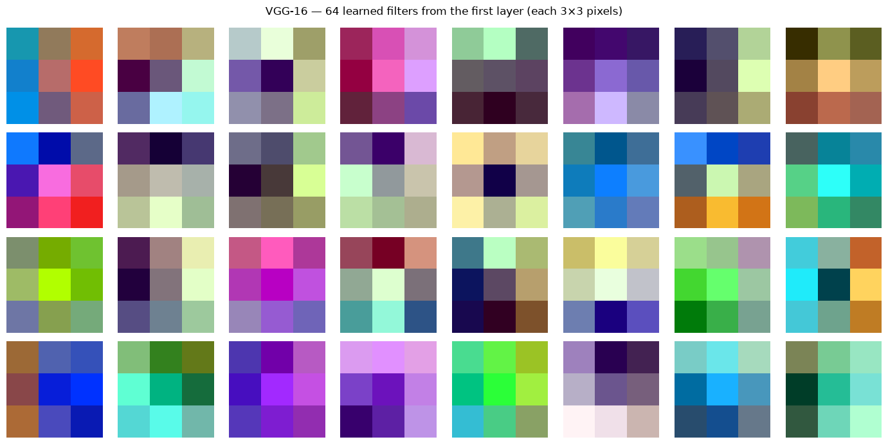
The above plot shows the VGG-16’s first-layer filters. Each is only 3×3 pixels — too small to show dramatic patterns — but look closely and you can spot the building blocks: some filters have a bright side and a dark side (a simple edge detector), others are dominated by a single colour (a colour detector). They look like generic low-level primitives, not anything specific to steel or defects.
That genericness is the whole reason feature extraction works. An edge or colour detector learned from ImageNet’s cats and cars is just as useful for finding cracks in steel. We don’t need to relearn these primitives — we can borrow them as-is. (For a clearer view of how these simple patterns build into textures and object parts at deeper layers, look back at Figure 1.)
2.4 Extracting Features¶
We now apply the above procedure to a real-life input. To make the process tangible, we use a single photograph and observe the representation the frozen network produces for it. The cell below downloads the image and applies the standard preprocessing that every ImageNet-trained model expects: resizing, centre-cropping, and normalisation using ImageNet’s channel statistics.
# Download a sample image and apply standard ImageNet preprocessing.
IMG_URL = "https://raw.githubusercontent.com/pytorch/hub/master/images/dog.jpg"
import requests
from PIL import Image
from io import BytesIO
import torchvision.transforms as transforms
response = requests.get(IMG_URL, timeout=10)
response.raise_for_status()
img = Image.open(BytesIO(response.content)).convert("RGB")
preprocess = transforms.Compose([
transforms.Resize(256),
transforms.CenterCrop(224),
transforms.ToTensor(),
transforms.Normalize(
mean=[0.485, 0.456, 0.406],
std=[0.229, 0.224, 0.225]
),
])
input_tensor = preprocess(img).unsqueeze(0) # shape: (1, 3, 224, 224)
plt.figure(figsize=(3, 3))
plt.imshow(img)
plt.axis("off")
plt.title("Input image")
plt.show()
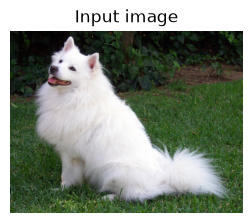
To see the network actually responding to an image, we visualise its feature maps — the activations produced at several layers as the dog image passes through. Reading from top to bottom, the maps progress from fine, edge-like responses in the early layers to coarser, more abstract responses in the deeper layers, where the network reacts to textures and object parts rather than raw pixels. This is the feature hierarchy of Section 1, made visible on a single image.
# Deeper filters cannot be rendered as colour images (they have hundreds of
# input channels). Instead we visualise their FEATURE MAPS: how individual
# channels respond to the dog image prepared earlier. Sampling several layers
# at increasing depth reveals the hierarchy — early layers respond to edges and
# colour, deeper layers to textures and object parts.
# Conv layers in VGG-16's feature stack, spanning shallow to deep.
STAGE_LAYERS = [0, 7, 14, 28] # 64ch → 128ch → 256ch → 512ch
# Register hooks to capture each stage's activations in one forward pass.
activations = {}
handles = []
for idx in STAGE_LAYERS:
handles.append(
vgg16_backbone.features[idx].register_forward_hook(
lambda m, i, o, idx=idx: activations.__setitem__(idx, o.detach())
)
)
with torch.no_grad():
vgg16_backbone(input_tensor) # reuses the dog image from the previous cell
for h in handles:
h.remove()
# One row per stage; show the first 8 channels of each.
N_SHOW = 8
fig, axes = plt.subplots(len(STAGE_LAYERS), N_SHOW, figsize=(14, 2 * len(STAGE_LAYERS)))
for row, idx in enumerate(STAGE_LAYERS):
feat = activations[idx][0].cpu() # (channels, H, W)
for col in range(N_SHOW):
ax = axes[row, col]
if col < feat.shape[0]:
fmap = feat[col].numpy()
fmap = (fmap - fmap.min()) / (fmap.max() - fmap.min() + 1e-8)
ax.imshow(fmap, cmap="viridis")
ax.axis("off")
# Label each row with its layer index and channel count.
axes[row, 0].set_ylabel(f"features[{idx}]\n({feat.shape[0]} ch)",
rotation=0, ha="right", va="center", fontsize=10)
plt.suptitle("VGG-16 — feature maps at increasing depth (same dog image)")
plt.tight_layout()
plt.show()
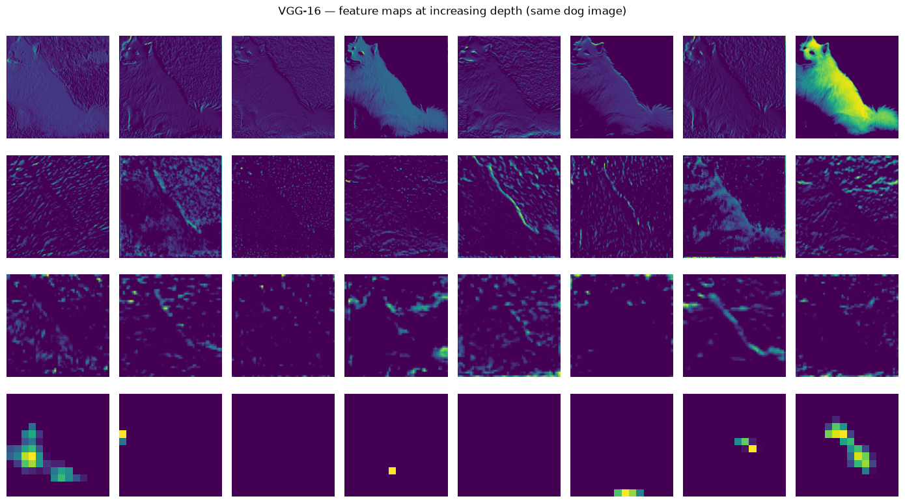
3. Transfer Learning¶
So far we have been locking all the pretrained weights and only training a new output layer on top. That works well when your dataset is small. But what if you have more data, and the pretrained features are not quite right for your task?
In that case, you can go one step further — you unlock some of the later layers and let them adjust during training. This is called fine-tuning. The early layers (which detect generic edges and textures) stay locked, but the deeper layers (which detect more task-specific patterns) are allowed to adapt.
A pretrained model is someone who already knows how to see. We are not teaching them to see again — we are just teaching them what to look for.
The figure below shows both strategies side by side:
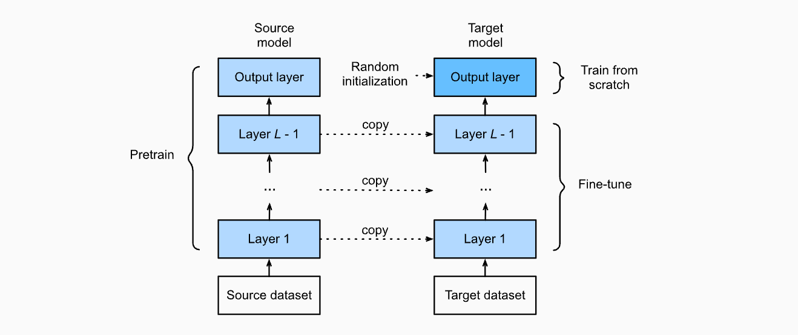
Figure 3 – Feature extraction (left) vs. fine-tuning (right). In fine-tuning, later layers of the backbone are allowed to update.
Source: Zhang, A., Lipton, Z. C., Li, M., & Smola, A. J. (2023). Dive into Deep Learning. Cambridge University Press.
URL: https://d2l.ai/chapter_computer-vision/fine-tuning.html
The frozen backbone is never updated — its weights stay fixed. This makes training extremely fast and stable even on small datasets.
Strategy |
Pretrained weights |
New head |
Works best when |
|---|---|---|---|
Feature extraction |
All locked |
Trained |
Dataset is small (< 1k images) |
Fine-tuning |
Later layers unlocked |
Trained |
Dataset is medium to large |
3.1 Rule of thumb¶
Dataset size → Strategy
──────────────────────────────────────────
Small (< 1k) → Feature extraction (lock everything)
Medium (1k–10k) → Fine-tune the last few layers
Large (> 10k) → Fine-tune most or all layers
Now we’ll put both strategies into a single reusable function. You don’t need to understand every line inside it — think of it as a tool you call by name.
The two things you control are:
which model you want to use (
vgg16,resnet50, orvit_b_16)which strategy you want (
feature_extractionorfine_tuning)
4. VGG — Depth Through Simplicity¶
We have already been using VGG-16 as our example backbone — now let’s understand what is actually inside it and why it was such a breakthrough.
VGGNet was introduced by Simonyan & Zisserman (2014) and won the ImageNet challenge by making a surprisingly simple argument: depth matters more than complexity. Previous networks used large filters (7×7, 11×11) to capture wide regions of the image. VGG replaced all of them with small 3×3 filters and just stacked more layers.
Simonyan, K., & Zisserman, A. (2014). Very Deep Convolutional Networks for Large-Scale Image Recognition. arXiv:1409.1556.
4.1 Design Philosophy¶
The entire VGG architecture is built by repeating one simple block:
Conv2d(3×3, same padding) → ReLU [×N] (Blue blocks in the following figure)
MaxPool2d(2×2, stride=2) (Red blocks in the following figure)
Why 3×3? Two stacked 3×3 layers see the same region of the image as one 5×5 layer — but with fewer weights and an extra non-linearity in between, which helps the network learn richer patterns. Five of these blocks are stacked in sequence, each one doubling the number of filters as the spatial size shrinks.
Therefore, stacking small 3×3 filters achieves the same receptive field as a single large filter but with:
fewer parameters (two 3×3 layers = 18 weights vs. one 5×5 = 25 weights per channel)
more non-linearities → richer representations
The figure below shows the full VGG-16 layout — notice how the channel depth (numbers on the right) doubles after each pooling step, while the spatial dimensions shrink.

*Figure 4 – VGG-16 architecture: 13 convolutional + 3 fully-connected layers. Channel depth doubles after each pooling block.
Source: Very Deep Convolutional Networks (VGG) Essential Guide. URL: https://viso.ai/deep-learning/vgg-very-deep-convolutional-networks/*
4.2 Strengths and Limitations¶
Strength |
Limitation |
|---|---|
Simple and predictable — easy to understand and modify |
~138 million parameters — large memory footprint |
Features transfer well to other tasks |
Three large fully-connected layers at the end are expensive |
A reliable, well-understood baseline |
Slower than more modern architectures |
The code below passes a dummy image through VGG-16 and prints the output size at each step. You don’t need to read the code line by line — focus on the printed output when you run it.
Two things to watch for:
The spatial size (the last two numbers) shrinks by half after each pooling step — from 224 down to 7
The number of channels (the second number) doubles as we go deeper — from 64 up to 512
This is the core VGG pattern in action.
# Pass a dummy image through VGG-16 and print the output shape at each layer.
# We only print Conv and Pooling layers to keep the output readable —
# ReLU and BatchNorm layers don't change the shape so they are skipped.
vgg16 = models.vgg16(weights=models.VGG16_Weights.IMAGENET1K_V1)
print("VGG-16 — layer-by-layer output shapes (input: 1×3×224×224)")
print("=" * 60)
x = torch.randn(1, 3, 224, 224)
with torch.no_grad():
for i, layer in enumerate(vgg16.features):
x = layer(x)
if isinstance(layer, (nn.Conv2d, nn.MaxPool2d)):
print(f" features[{i:2d}] {layer.__class__.__name__:12s} → {tuple(x.shape)}")
x = vgg16.avgpool(x)
print(f" avgpool → {tuple(x.shape)}")
x = x.flatten(1)
print(f" flatten → {tuple(x.shape)}")
for i, layer in enumerate(vgg16.classifier):
x = layer(x)
if isinstance(layer, nn.Linear):
print(f" classifier[{i}] Linear → {tuple(x.shape)}")
total_params = sum(p.numel() for p in vgg16.parameters())
print(f"\nTotal parameters: {total_params:,}")
VGG-16 — layer-by-layer output shapes (input: 1×3×224×224)
============================================================
features[ 0] Conv2d → (1, 64, 224, 224)
features[ 2] Conv2d → (1, 64, 224, 224)
features[ 4] MaxPool2d → (1, 64, 112, 112)
features[ 5] Conv2d → (1, 128, 112, 112)
features[ 7] Conv2d → (1, 128, 112, 112)
features[ 9] MaxPool2d → (1, 128, 56, 56)
features[10] Conv2d → (1, 256, 56, 56)
features[12] Conv2d → (1, 256, 56, 56)
features[14] Conv2d → (1, 256, 56, 56)
features[16] MaxPool2d → (1, 256, 28, 28)
features[17] Conv2d → (1, 512, 28, 28)
features[19] Conv2d → (1, 512, 28, 28)
features[21] Conv2d → (1, 512, 28, 28)
features[23] MaxPool2d → (1, 512, 14, 14)
features[24] Conv2d → (1, 512, 14, 14)
features[26] Conv2d → (1, 512, 14, 14)
features[28] Conv2d → (1, 512, 14, 14)
features[30] MaxPool2d → (1, 512, 7, 7)
avgpool → (1, 512, 7, 7)
flatten → (1, 25088)
classifier[0] Linear → (1, 4096)
classifier[3] Linear → (1, 4096)
classifier[6] Linear → (1, 1000)
Total parameters: 138,357,544
4.3 Building a new classification layer¶
Now we apply what we just saw. The final layer of VGG-16 outputs 1000 scores
— one for each ImageNet class. However, for our steel dataset (which will be used in the practical session), we have 6 defect classes, so we swap that layer out for a fresh one with 6 outputs, and lock everything else.
Run the cell below and check the printed classifier — the last line should
now read Linear(in_features=4096, out_features=6) instead of 1000. That
single change is all it takes to redirect the entire network toward our task.
# The final layer of VGG-16 outputs 1000 scores — one for each ImageNet class.
vgg16 = models.vgg16(weights=models.VGG16_Weights.IMAGENET1K_V1)
# ── Freeze all layers ─────────────────────────────────────────────────────────
for param in vgg16.parameters():
param.requires_grad = False
# ── Swap the last layer: 1000 classes → 6 defect classes ─────────────────────
vgg16.classifier[-1] = nn.Linear(4096, 6)
# ─────────────────────────────────────────────────────────────────────────────
# Confirm the change — last line should read Linear(in_features=4096, out_features=6)
print(vgg16.classifier)
total_params = sum(p.numel() for p in vgg16.parameters())
trainable = sum(p.numel() for p in vgg16.parameters() if p.requires_grad)
print(f"\nTotal parameters: {total_params:,}")
print(f"Trainable parameters: {trainable:,}")
Sequential(
(0): Linear(in_features=25088, out_features=4096, bias=True)
(1): ReLU(inplace=True)
(2): Dropout(p=0.5, inplace=False)
(3): Linear(in_features=4096, out_features=4096, bias=True)
(4): ReLU(inplace=True)
(5): Dropout(p=0.5, inplace=False)
(6): Linear(in_features=4096, out_features=6, bias=True)
)
Total parameters: 134,285,126
Trainable parameters: 24,582
5. ResNet — Residual Connections and Deep Networks¶
VGG showed that depth improves performance — so why not just keep adding layers? Researchers tried exactly that, and ran into a puzzling problem.
5.1 The Degradation Problem (vanishing gradients)¶
As networks get very deep (beyond ~20 layers), something unexpected happens: performance starts to get worse — even on the training data itself. This is not the model memorising noise (overfitting). The model is genuinely struggling to learn.
The root cause is how networks learn. During training, each layer adjusts its weights based on a signal passed backward from the output — called a gradient. In a very deep network, this signal has to travel through dozens of layers to reach the early ones. By the time it gets there, it has become so weak that the early layers barely update at all. The network effectively stops learning in its early stages.
He et al. (2016) called this the degradation problem (vanishing gradients) and proposed an elegantly simple fix — which we cover next.
5.2 The Fix — Skip Connections¶
Here’s solution was to add a shortcut or a skip connection* — (residual connection) that bypasses one or more layers:
Instead of learning the full mapping \(\mathcal{H}(\mathbf{x})\), the network only needs to learn the residual \(\mathcal{F}(\mathbf{x}) = \mathcal{H}(\mathbf{x}) - \mathbf{x}\).
If the optimal mapping is close to an identity, residual learning makes this easy to achieve — the weights can simply be pushed toward zero..
The figure below shows this clearly — the curved arrow is the shortcut:

Figure 5 – Residual block. The identity shortcut (dashed arrow) adds the input directly to the output of the two-layer stack. Source: He, K., Zhang, X., Ren, S., & Sun, J. (2016). Deep Residual Learning for Image Recognition.
In practice, ResNet employs two main types of residual blocks depending on the network architecture and dimensional requirements. The Identity block uses a direct shortcut connection when the input and output dimensions are the same — the input is added to the output as-is. However, when a block changes the number of channels or the spatial size, a direct addition is no longer possible since the shapes do not match. This is where the Convolutional (or Bottleneck) block comes in: it applies a 1×1 convolution or anyother required size, on the shortcut path purely to reshape the input to match the output dimensions, making the residual addition valid. Figure 6 illustrates both types of residual blocks, with the curved arrows representing the shortcut connections.

Figure 6 illustrates two types of skip connections: the Identity block (left) and the Bottleneck/Convolutional block (right). The primary distinction between them lies in how the residual connection is processed. In the Identity block, the residual is added directly to the output without any modification. In contrast, the Bottleneck/Convolutional block applies a convolution operation followed by batch normalisation to the residual before it is combined with the output. Source: How to Code Your ResNet from Scratch in Tensorflow?
# A single residual block — the core repeating unit of ResNet.
# The key line is: out = self.relu(out + identity)
# This adds the original input back to the output before the final activation.
# The shortcut layer only activates when the input and output sizes differ —
# in that case a 1×1 conv is used to match the dimensions before adding.
class ResidualBlock(nn.Module):
"""
Basic residual block as in He et al. (2016).
Two 3×3 Conv layers with a skip connection.
A 1×1 projection is added when dimensions change.
"""
def __init__(self, in_channels: int, out_channels: int, stride: int = 1):
super().__init__()
self.conv1 = nn.Conv2d(in_channels, out_channels, 3,
stride=stride, padding=1, bias=False)
self.bn1 = nn.BatchNorm2d(out_channels)
self.relu = nn.ReLU(inplace=True)
self.conv2 = nn.Conv2d(out_channels, out_channels, 3,
padding=1, bias=False)
self.bn2 = nn.BatchNorm2d(out_channels)
self.shortcut = nn.Sequential()
if stride != 1 or in_channels != out_channels:
self.shortcut = nn.Sequential(
nn.Conv2d(in_channels, out_channels, 1, stride=stride, bias=False),
nn.BatchNorm2d(out_channels)
)
def forward(self, x):
identity = self.shortcut(x) # carry input through the shortcut
out = self.relu(self.bn1(self.conv1(x))) # first conv + stabilise + activate
out = self.bn2(self.conv2(out)) # second conv + stabilise
out = self.relu(out + identity) # add shortcut back, then activate
return out
# ── Show what happens to activations ─────────────────────────────────────────
block = ResidualBlock(in_channels=64, out_channels=64)
x_in = torch.randn(1, 64, 56, 56)
x_out = block(x_in)
print(f"Input : {tuple(x_in.shape)}")
print(f"Output : {tuple(x_out.shape)} ← same spatial size and channels")
print(f"Block parameters: {sum(p.numel() for p in block.parameters()):,}")
Input : (1, 64, 56, 56)
Output : (1, 64, 56, 56) ← same spatial size and channels
Block parameters: 73,984
5.3 Why Skip Connections Work¶
Now that you’ve seen the residual block, here is what that small addition actually achieves:
Gradients flow more easily: the shortcut gives the training signal a direct path backward through the network, so early layers actually update
Much deeper networks become trainable: ResNet-50, ResNet-101, and ResNet-152 all train stably — something impossible with plain stacking
The network has a safety net: if a layer learns nothing useful, the shortcut ensures the input passes through unchanged — the network can’t get worse by adding a layer
5.4 ResNet Architecture¶
The figure below puts everything together. It compares three networks side by side — VGG-19, a plain 34-layer network, and a 34-layer residual network.
The curved arrows on the right column are the skip connections. Notice that the dotted arrows appear where the number of channels increases — those are the 1×1 projection shortcuts we built in the code above.
Compare the plain network (middle) and the residual network (right) — they have the exact same layers, but the skip connections are what make the residual version actually trainable at that depth.

Figure 7 — ResNet architecture compared to VGG-19 and a plain deep network. Left: VGG-19 (19.6B FLOPs). Middle: plain 34-layer network. Right: Actual ResNet 34-layer residual network with skip connections — the dotted arrows indicate projections where channel dimensions increase. Source: He et al. (2016), Deep Residual Learning for Image Recognition
5.5 ResNet-50 (Popular version)¶
The figure above showed ResNet-34 — one of the smaller variants in the ResNet family. There is an even lighter version, ResNet-18, useful for quick experiments and commonly used as a baseline or benchmark in research. In practice, ResNet-50 is the most commonly used version for transfer learning. It follows the same residual block idea but uses deeper blocks internally, giving it a richer 2048-dimensional feature vector at the end.
Unlike VGG’s three large fully-connected layers, ResNet ends with a single global average pooling step — it takes the entire spatial output and averages it down to one number per channel. This is much more efficient and is one reason ResNet transfers better to new tasks.
Run the cell below and compare the shapes to what you saw in VGG-16 — notice how the network reaches a much more compact representation by the end.
# Pass a dummy image through each stage of ResNet-50 and print the output shape.
# Each "layer" here is a group of residual blocks — not a single layer.
# The final flatten produces a 2048-dim feature vector — this is what gets
# passed to the new classification head during transfer learning.
resnet50 = models.resnet50(weights=models.ResNet50_Weights.IMAGENET1K_V1)
print("ResNet-50 — layer-by-layer output shapes (input: 1×3×224×224)")
print("=" * 60)
x = torch.randn(1, 3, 224, 224)
with torch.no_grad():
layers = {
"conv1" : resnet50.conv1,
"bn1+relu+pool": nn.Sequential(resnet50.bn1, resnet50.relu, resnet50.maxpool),
"layer1" : resnet50.layer1,
"layer2" : resnet50.layer2,
"layer3" : resnet50.layer3,
"layer4" : resnet50.layer4,
"avgpool" : resnet50.avgpool,
}
for name, stage in layers.items():
x = stage(x)
print(f" {name:20s} → {tuple(x.shape)}")
x = x.flatten(1)
print(f" {'flatten':20s} → {tuple(x.shape)} ← 2048-dim feature vector")
print(f"\nTotal parameters: {sum(p.numel() for p in resnet50.parameters()):,}")
ResNet-50 — layer-by-layer output shapes (input: 1×3×224×224)
============================================================
conv1 → (1, 64, 112, 112)
bn1+relu+pool → (1, 64, 56, 56)
layer1 → (1, 256, 56, 56)
layer2 → (1, 512, 28, 28)
layer3 → (1, 1024, 14, 14)
layer4 → (1, 2048, 7, 7)
avgpool → (1, 2048, 1, 1)
flatten → (1, 2048) ← 2048-dim feature vector
Total parameters: 25,557,032
5.6 Demonstrate the Benefit of Skip Connections: Gradient Norm Comparison¶
We said that skip connections help gradients reach the early layers. Let’s see this concretely.
The cell below measures the gradient norm in the early layers after one training step — think of it as measuring how strong the learning signal is at the start of the network. A healthy gradient norm sits somewhere between 1 and 1000. If it collapses toward zero, the early layers stop learning entirely — this is the vanishing gradient problem that plagued deep networks before ResNet.
We measure this across three networks we have already seen: VGG-16, a plain deep network with no skip connections, and ResNet-50. Run the cell and compare the three numbers.
# Measure how strong the learning signal (gradient) is in ResNet-50's early
# layers after a single backward pass. We use random weights (no pretraining)
# to simulate what happens at the start of training from scratch.
# A non-zero value confirms gradients are reaching the early layers —
# something a plain deep network without skip connections struggles to achieve.
import copy
import numpy as np
torch.manual_seed(42)
def gradient_norm_through_depth(model, depth_layers):
"""Return average gradient norm in early layers after one backward pass."""
model.train()
x = torch.randn(2, 3, 224, 224)
out = model(x)
loss = out.mean()
loss.backward()
norms = [p.grad.norm().item()
for p in list(model.parameters())[:depth_layers]
if p.grad is not None]
return np.mean(norms) if norms else 0.0
# VGG-16 with random weights
vgg_model = models.vgg16(weights=None)
vgg_model.classifier[6] = nn.Linear(4096, 2)
# ResNet-50 with random weights
resnet_model = models.resnet50(weights=None)
resnet_model.fc = nn.Linear(2048, 2)
# Plain network: flatten gives 3×224×224 = 150528, use that as input size
plain_model = nn.Sequential(
nn.Flatten(),
nn.Linear(150528, 2048), nn.ReLU(),
*[nn.Sequential(nn.Linear(2048, 2048), nn.ReLU()) for _ in range(47)],
nn.Linear(2048, 2)
)
vgg_norm = gradient_norm_through_depth(vgg_model, depth_layers=5)
plain_norm = gradient_norm_through_depth(plain_model, depth_layers=5)
resnet_norm = gradient_norm_through_depth(resnet_model, depth_layers=5)
print(f"VGG-16 — mean gradient norm in first 5 layers: {vgg_norm:.6f}")
print(f"Plain network — mean gradient norm in first 5 layers: {plain_norm:.6f}")
print(f"ResNet-50 — mean gradient norm in first 5 layers: {resnet_norm:.6f}")
print()
print(f"ResNet gradient is {resnet_norm / (vgg_norm + 1e-8):.1f}x stronger than VGG-16.")
print(f"ResNet gradient is {resnet_norm / (plain_norm + 1e-8):.1f}x stronger than the plain network.")
print()
#print("Key point: skip connections maintain non-trivial gradient flow even at depth.")
#print("Without them, these values drop toward zero and early layers stop updating.")
VGG-16 — mean gradient norm in first 5 layers: 0.541485
Plain network — mean gradient norm in first 5 layers: 0.000000
ResNet-50 — mean gradient norm in first 5 layers: 49.153959
ResNet gradient is 90.8x stronger than VGG-16.
ResNet gradient is 4915395869.6x stronger than the plain network.
The numbers above confirm exactly what we expected. The plain network scores zero — the gradient has completely vanished by the time it reaches the early layers, meaning those layers receive no learning signal at all. VGG-16 survives with a small but non-zero value (0.54) only because it is relatively shallow at 16 layers — push it deeper and it would face the same fate. ResNet-50, despite being 50 layers deep, maintains a strong gradient of 49.15 thanks to its skip connections acting as gradient highways. This single comparison captures why ResNet was a turning point — depth alone breaks networks, but depth with skip connections makes them stronger.
6. Vision Transformer (ViT) — Attention Over Patches¶
So far, both VGG and ResNet process images the same way at heart — a small filter slides across the image one local region at a time. Skip connections solved the vanishing gradient problem and let us go deeper, but the fundamental operation never changed: every layer still only sees a small neighbourhood of pixels. To understand global structure, information has to travel gradually through many layers before the network sees the full picture.
This raises a natural question: what if the network could look at the entire image at once, right from the first layer? That is exactly the idea behind the Vision Transformer. Instead of sliding a filter across pixels, it splits the image into a fixed set of patches, treats each patch like a word in a sentence, and uses self-attention to let every patch directly communicate with every other patch — in a single step. For steel defect classification, this matters: a scratch that spans the full surface, or a rolled-in scale with irregular spread, can be connected globally from layer one — something CNNs can only do gradually.
Dosovitskiy, A., et al. (2020). An Image is Worth 16×16 Words: Transformers for Image Recognition at Scale. arXiv:2010.11929.
6.1 From Pixels to Patches¶
Instead of sliding a filter across the image, ViT cuts the image into a grid of fixed-size patches and treats them like a sequence of words in a sentence. Each patch becomes one “token” — a flat vector that represents that region of the image.
For a 224×224 image with patch size \(P = 16\): \(N = 196\) patches — so the image becomes a sequence of 196 tokens, each covering a 16×16 pixel region. Each patch is then:
Flattened to a vector of length \(P^2 \cdot C\)
Linearly projected to a fixed embedding dimension \(D\)
Combined with a positional embedding so the model knows patch location
A learnable [CLS] token is prepended; its final representation is used for classification.
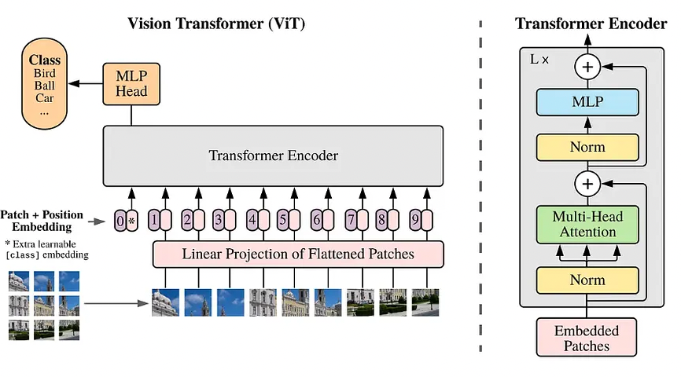
Figure 8: Vision Transformer (ViT) architecture. The image is split into patches, each embedded as a vector and combined with a positional marker. The full sequence is processed by a Transformer encoder; the (CLS) token’s final state is used for classification. Source: Dosovitskiy, A., et al. (2020), An Image is Worth 16×16 Words: Transformers for Image Recognition at Scale. arXiv:2010.11929
6.2 How the Patches Talk to Each Other — Self-Attention¶
Once the image is broken into several patch tokens, the next question is: how does the network figure out which patches are relevant to each other?
In a CNN, each layer only looks at its immediate neighbours. ViT does something much more powerful — every patch looks at every other patch simultaneously and decides how much to “pay attention” to each one. This is called self-attention.
For steel defects: the patch containing the tip of a scratch should pay high attention to the patch containing its tail — even if they are on opposite sides of the image. A CNN would only connect them after many layers. ViT connects them from the very first step.
The attention score between any two patches is computed as:
Q, K, and V stand for Query, Key, and Value — a way of asking “how relevant is this patch to that one?” You don’t need to memorise the formula; the key takeaway is that every patch can directly influence every other patch from layer one — something CNNs only achieve at their deepest layers.
The figure below shows real attention maps from a trained ViT — the bright regions are what the model focuses on when classifying each image:
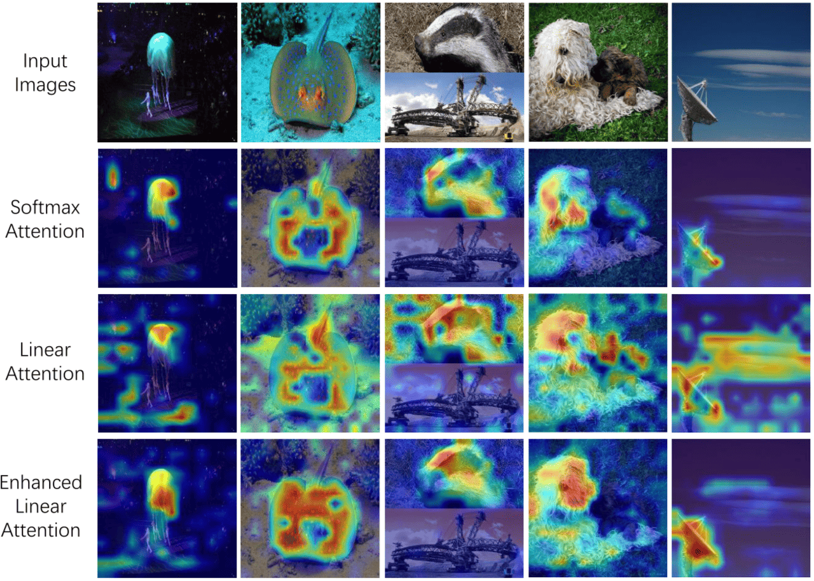
Figure 9: Attention maps: the model learns to attend to semantically relevant image regions without any supervision on location. Illustration of different attention mechanisms, i.e., softmax attention, linear attention, and enhanced linear attention. The first row is the original input images. Enhanced linear attention can substantially eliminate some irrelevant distractions and focus better on the object itself, such as the objects in the fifth and last columns. Source: Zheng (2025), The Linear Attention Resurrection in Vision Transformer
6.3 Building the Patch Embedding¶
Let’s implement the first step of ViT — turning an image into a sequence of patch tokens.
Each 16×16 patch is flattened into a vector and then passed through a single linear layer that projects it to a fixed size of 768 numbers. This 768-dimensional vector is the “embedding” — the representation the Transformer will work with.
A neat trick from the original paper: instead of manually cutting the image into patches and then projecting each one, a single Conv2d layer with kernel size 16 and stride 16 does both operations in one step — it naturally lands on non-overlapping 16×16 regions.
You don’t need to follow every line below — focus on the printed output when you run it. It will confirm that a 224×224 image becomes exactly 196 tokens of 768 dimensions each.
# Implement patch embedding — the first step of ViT.
# A Conv2d with kernel=stride=patch_size cuts the image into non-overlapping
# patches and projects each one to embed_dim dimensions in a single operation.
# The flatten and transpose at the end reorder dimensions so the output is
# (batch, num_patches, embed_dim) — the format the Transformer expects.
class PatchEmbedding(nn.Module):
"""
Splits a (B, C, H, W) image into N non-overlapping patches
and projects each patch to a D-dimensional embedding.
As in Dosovitskiy et al. (2020): a single Conv2d with kernel=stride=P
efficiently performs both the split and the linear projection.
"""
def __init__(self, img_size: int = 224, patch_size: int = 16,
in_channels: int = 3, embed_dim: int = 768):
super().__init__()
assert img_size % patch_size == 0, "Image size must be divisible by patch size"
self.num_patches = (img_size // patch_size) ** 2
self.patch_size = patch_size
self.embed_dim = embed_dim
# One Conv2d replaces flatten + linear projection
self.proj = nn.Conv2d(in_channels, embed_dim,
kernel_size=patch_size, stride=patch_size)
def forward(self, x): # x: (B, C, H, W)
x = self.proj(x) # → (B, D, H/P, W/P)
x = x.flatten(2) # → (B, D, N)
x = x.transpose(1, 2) # → (B, N, D)
return x
# ── Test ──────────────────────────────────────────────────────────────────────
patch_emb = PatchEmbedding(img_size=224, patch_size=16, in_channels=3, embed_dim=768)
x = torch.randn(1, 3, 224, 224)
patches = patch_emb(x)
print(f"Input image shape : {tuple(x.shape)}")
print(f"Patch embedding out : {tuple(patches.shape)}")
print(f" → {patches.shape[1]} patches, each a {patches.shape[2]}-dim vector")
print()
print(f"Each patch covers a {16}×{16}={16*16} pixel region of the image,")
print(f"projected to a {768}-dim embedding (same as BERT-base).")
Input image shape : (1, 3, 224, 224)
Patch embedding out : (1, 196, 768)
→ 196 patches, each a 768-dim vector
Each patch covers a 16×16=256 pixel region of the image,
projected to a 768-dim embedding (same as BERT-base).
6.4 Vision Transformer — Built from Scratch¶
We have already built PatchEmbedding above. Now let’s assemble the full ViT from scratch so every component is visible — rather than loading a pretrained black box.
The three ingredients we need:
PatchEmbedding — already done in 6.3.
TransformerBlock — wraps multi-head self-attention with an MLP, LayerNorm on both, and residual connections around each. This is the repeating unit of the encoder.
VisionTransformer — stacks N TransformerBlocks and adds a classification head at the end. We use global average pooling over all patch tokens instead of a [CLS] token — simpler, and sufficient for our purposes.
# Transformer Block: the repeating unit inside the ViT encoder.
# Each block applies multi-head self-attention followed by a small MLP,
# with LayerNorm and a residual connection wrapping each operation.
device = torch.device("cuda" if torch.cuda.is_available() else "cpu")
class TransformerBlock(nn.Module):
"""Transformer block with multi-head attention and MLP"""
def __init__(self, embed_dim=128, num_heads=4, mlp_dim=256, dropout_rate=0.1):
super(TransformerBlock, self).__init__()
self.attention = nn.MultiheadAttention(embed_dim, num_heads,
dropout=dropout_rate,
batch_first=True)
self.mlp = nn.Sequential(
nn.Linear(embed_dim, mlp_dim),
nn.GELU(),
nn.Dropout(dropout_rate),
nn.Linear(mlp_dim, embed_dim),
nn.Dropout(dropout_rate),
)
self.layernorm1 = nn.LayerNorm(embed_dim, eps=1e-6)
self.layernorm2 = nn.LayerNorm(embed_dim, eps=1e-6)
self.dropout = nn.Dropout(dropout_rate)
def forward(self, x):
attn_output, _ = self.attention(x, x, x)
attn_output = self.dropout(attn_output)
x = self.layernorm1(x + attn_output) # residual + norm
mlp_output = self.mlp(x)
x = self.layernorm2(x + mlp_output) # residual + norm
return x
# Assemble the full Vision Transformer.
# patch_embed → positional embeddings → N TransformerBlocks →
# LayerNorm → global average pool → classification head
class VisionTransformer(nn.Module):
"""Vision Transformer model for image classification (trained from scratch)"""
def __init__(self, input_size, num_classes, patch_size=16, num_layers=4,
num_heads=4, embed_dim=128, mlp_dim=256, dropout_rate=0.1):
super(VisionTransformer, self).__init__()
self.patch_embed = PatchEmbedding(
img_size=input_size, # ← match the existing class signature
patch_size=patch_size,
in_channels=3,
embed_dim=embed_dim
)
num_patches = (input_size // patch_size) ** 2
self.pos_embedding = nn.Embedding(num_patches, embed_dim)
self.transformer_blocks = nn.ModuleList([
TransformerBlock(embed_dim, num_heads, mlp_dim, dropout_rate)
for _ in range(num_layers)
])
self.norm = nn.LayerNorm(embed_dim, eps=1e-6)
self.dropout = nn.Dropout(dropout_rate)
self.head = nn.Linear(embed_dim, num_classes)
self.num_patches = num_patches
def forward(self, x):
x = self.patch_embed(x)
positions = torch.arange(self.num_patches, device=x.device)
x = x + self.pos_embedding(positions)
for block in self.transformer_blocks:
x = block(x)
x = self.norm(x)
x = x.mean(dim=1)
x = self.dropout(x)
x = self.head(x)
return x
# Build the ViT model from scratch
print("Building Vision Transformer Model (from scratch)...")
vit_scratch = VisionTransformer(
input_size=224,
num_classes=6,
patch_size=16,
num_layers=4,
num_heads=4,
embed_dim=128,
mlp_dim=256,
dropout_rate=0.1
).to(device)
optimizer_vit = torch.optim.Adam(vit_scratch.parameters(), lr=0.001)
trainable = sum(p.numel() for p in vit_scratch.parameters() if p.requires_grad)
total = sum(p.numel() for p in vit_scratch.parameters())
print("\nVision Transformer Model (from scratch)")
print(f"Total parameters: {total:,}")
print(f"Trainable parameters: {trainable:,}")
Building Vision Transformer Model (from scratch)...
Vision Transformer Model (from scratch)
Total parameters: 654,470
Trainable parameters: 654,470
# Quick shape sanity check — confirm the model accepts a real image batch
dummy = torch.randn(2, 3, 224, 224).to(device)
out = vit_scratch(dummy)
print(f"Input shape: {tuple(dummy.shape)} ← (batch, channels, height, width)")
print(f"Output shape: {tuple(out.shape)} ← (batch, num_classes) = (2, 6)")
print("\nModel is ready for training.")
Input shape: (2, 3, 224, 224) ← (batch, channels, height, width)
Output shape: (2, 6) ← (batch, num_classes) = (2, 6)
Model is ready for training.
6.5 Why Multiple Attention Heads?¶
In section 6.2 we saw the core attention formula:
That is a single attention operation — one set of Q, K, V projections scanning for one type of relationship between patches. But a defect image has many kinds of relationships simultaneously: a scratch has spatial continuity, a patch defect has texture, an inclusion has contrast against background. A single attention head is unlikely to capture all of these at once.
Multi-head attention runs \(h\) independent attention operations in parallel, each learning to look for a different relationship:
where each head is:
In our scratch model we set num_heads=4 and embed_dim=128, so each
head works on a \(128 / 4 = 32\)-dimensional subspace of the embedding.
The four heads compute attention independently, then their outputs are
concatenated back to 128 dimensions and passed through a linear layer
\(W^O\) to mix the information across heads.
Why split into subspaces rather than running full 128-dim attention four times? Two reasons: computational cost grows quadratically with dimension, and splitting forces each head to specialise — head 1 might learn positional proximity, head 2 might learn texture similarity, and so on, rather than all four learning the same thing.
In ViT-B/16 (the full pretrained model we loaded in section 6.4),
num_heads=12 and embed_dim=768, giving each head a 64-dimensional
subspace — the same ratio, just at a larger scale.
6.6 ViT-B/16 — The Pretrained Model¶
The scratch model above is lightweight (4 layers, 128-dim). In practice, ViT-B/16 is the standard pretrained variant:
B = Base — medium-sized (also Small and Large exist)
16 = patch size of 16×16, giving 196 patches for a 224×224 image
86M parameters, all in the encoder — unlike VGG where 90% sat in the FC layers, here every parameter does attention or MLP work
Like ResNet, ViT needs pretraining on large data (ImageNet) to learn meaningful patch relationships — without it, ViT typically underperforms CNNs on small datasets. This is why we load ImageNet weights here.
The printed output shows three top-level components:
conv_proj— the patch embedding we built in 6.3encoder— 12 Transformer blocks where self-attention happensheads— the classification layer we replace, just like VGG’sclassifierand ResNet’sfc
# Load pretrained ViT-B/16 and print its top-level structure.
# We then print the first Transformer encoder block in detail —
# this shows the self-attention and MLP layers inside each block.
# Note: the 'heads' component at the end is what we replace for
# transfer learning, just like VGG's classifier and ResNet's fc layer.
vit = models.vit_b_16(weights=models.ViT_B_16_Weights.IMAGENET1K_V1)
print("ViT-B/16 top-level structure:")
for name, module in vit.named_children():
n_params = sum(p.numel() for p in module.parameters())
print(f" {name:20s} {n_params:>12,} params")
print()
total = sum(p.numel() for p in vit.parameters())
print(f"Total parameters: {total:,}")
print()
print("Encoder detail — first Transformer block:")
print(vit.encoder.layers[0])
ViT-B/16 top-level structure:
conv_proj 590,592 params
encoder 85,207,296 params
heads 769,000 params
Total parameters: 86,567,656
Encoder detail — first Transformer block:
EncoderBlock(
(ln_1): LayerNorm((768,), eps=1e-06, elementwise_affine=True)
(self_attention): MultiheadAttention(
(out_proj): NonDynamicallyQuantizableLinear(in_features=768, out_features=768, bias=True)
)
(dropout): Dropout(p=0.0, inplace=False)
(ln_2): LayerNorm((768,), eps=1e-06, elementwise_affine=True)
(mlp): MLPBlock(
(0): Linear(in_features=768, out_features=3072, bias=True)
(1): GELU(approximate='none')
(2): Dropout(p=0.0, inplace=False)
(3): Linear(in_features=3072, out_features=768, bias=True)
(4): Dropout(p=0.0, inplace=False)
)
)
6.7 Tracing the Input Through ViT¶
Before the patches reach the Transformer encoder, three things happen:
Each patch is embedded into a 768-dim vector (what we built above)
The [CLS] token is added at the front of the sequence
A positional embedding is added to every token — this tells the model where each patch came from in the original image, since the Transformer itself has no sense of order or position
The cell below traces this pipeline manually so you can see the exact sequence shape that enters the encoder. The key number to notice is 197 — 196 patches plus 1 [CLS] token.
# Visualise self-attention weights on a sample image
# We'll register a hook on the last encoder block to capture attention matrices
attention_weights = {}
def save_attention_hook(module, input, output):
# output from MultiheadAttention is (attn_output, attn_weights)
# but torchvision's ViT uses a custom EncoderBlock; we capture via the
# self_attention sub-module which returns (x, attn_weight)
pass # see below
# Trace the ViT input pipeline step by step:
# 1. Embed the image patches (conv_proj)
# 2. Prepend the [CLS] token
# 3. Add positional embeddings so the model knows patch locations
# The result is the sequence that enters the first Transformer encoder block.
vit.eval()
x_img = torch.randn(1, 3, 224, 224)
with torch.no_grad():
# Step 1 — patch embedding
x_patches = vit._process_input(x_img)
# Step 2 — prepend the [CLS] token
batch_class_token = vit.class_token.expand(x_patches.shape[0], -1, -1)
x_full = torch.cat([batch_class_token, x_patches], dim=1)
# Step 3 — add positional embedding
x_pos = x_full + vit.encoder.pos_embedding
print(f"After patch embedding : {tuple(x_patches.shape)}")
print(f"After adding [CLS] : {tuple(x_full.shape)}")
print(f"After positional emb : {tuple(x_pos.shape)}")
print()
print(f"→ {x_pos.shape[1]} tokens enter the encoder: "
f"1 [CLS] + {x_patches.shape[1]} patches, each {x_pos.shape[2]}-dim")
After patch embedding : (1, 196, 768)
After adding [CLS] : (1, 197, 768)
After positional emb : (1, 197, 768)
→ 197 tokens enter the encoder: 1 [CLS] + 196 patches, each 768-dim
7. Architectural Comparison¶
We have now worked through all three architectures hands-on. Before deciding which one to use for a given problem, it helps to see them side by side — not just in terms of accuracy, but in terms of size, speed, and what kind of features they produce.
The two cells below compare:
Parameter count — how many weights each model has and how much memory it needs
Core properties — how each model processes images, what assumptions it makes, and when it works best
As you read through the comparison, think about the dataset you just want to work with or the dataset that we will use in the practical session— which model would you reach for first, and why?
7.1 Parameter Count¶
The table below loads all three models and counts their total parameters.
We use weights=None here — random weights — because we only care about
the architecture size, not the pretrained values.
The Feature Dim column shows the size of the feature vector each model produces before the final classification layer — this is the representation that gets passed to the new head during transfer learning. A larger feature vector is not necessarily better; what matters is how well those features describe the images in your specific task.
# Compare all three architectures across key metrics
# Load all three architectures without pretrained weights — we only need
# the model structure to count parameters, not the trained values.
# Feature Dim = size of the vector produced just before the output layer,
# i.e. what the new classification head receives as input.
architectures = {
"VGG-16" : models.vgg16(weights=None),
"ResNet-50" : models.resnet50(weights=None),
"ViT-B/16" : models.vit_b_16(weights=None),
}
print(f"{'Architecture':<15} {'Total Params':>15} {'Input Size':>12} {'Feature Dim':>12}")
print("─" * 58)
feature_dims = {"VGG-16": 4096, "ResNet-50": 2048, "ViT-B/16": 768}
for name, model in architectures.items():
total = sum(p.numel() for p in model.parameters())
print(f"{name:<15} {total:>15,} {'224×224':>12} {feature_dims[name]:>12}")
Architecture Total Params Input Size Feature Dim
──────────────────────────────────────────────────────────
VGG-16 138,357,544 224×224 4096
ResNet-50 25,557,032 224×224 2048
ViT-B/16 86,567,656 224×224 768
# A reusable function that prepares any of our three models for transfer learning.
# It handles three things automatically:
# 1. Loads the pretrained model with ImageNet weights
# 2. Replaces the final output layer with one sized for your dataset's classes
# 3. Locks or unlocks weights depending on the chosen strategy
#
# After calling it, check the printed summary — "Trainable params" tells you
# exactly how much of the model will actually update during training.
def build_transfer_model(
backbone_name: str,
num_classes: int,
strategy: str = "feature_extraction", # or "fine_tuning"
unfreeze_from_layer: int = -1 # fine-tuning only: unfreeze last N layers
) -> nn.Module:
"""
Returns a model ready for transfer learning.
backbone_name : 'vgg16' | 'resnet50' | 'vit_b_16'
num_classes : number of target classes
strategy : 'feature_extraction' → freeze all backbone weights
'fine_tuning' → unfreeze last `unfreeze_from_layer` layers
"""
if backbone_name == "vgg16":
model = models.vgg16(weights=models.VGG16_Weights.IMAGENET1K_V1)
in_features = model.classifier[6].in_features
model.classifier[6] = nn.Linear(in_features, num_classes)
params_to_check = list(model.features.parameters())
elif backbone_name == "resnet50":
model = models.resnet50(weights=models.ResNet50_Weights.IMAGENET1K_V1)
in_features = model.fc.in_features
model.fc = nn.Linear(in_features, num_classes)
params_to_check = list(model.parameters())[:-2]
elif backbone_name == "vit_b_16":
model = models.vit_b_16(weights=models.ViT_B_16_Weights.IMAGENET1K_V1)
in_features = model.heads.head.in_features
model.heads.head = nn.Linear(in_features, num_classes)
params_to_check = list(model.parameters())[:-2]
else:
raise ValueError(f"Unknown backbone: {backbone_name}")
# Apply strategy
if strategy == "feature_extraction":
for param in model.parameters():
param.requires_grad = False
for param in model.parameters():
if param.shape[0] == num_classes:
param.requires_grad = True
elif strategy == "fine_tuning" and unfreeze_from_layer > 0:
all_params = list(model.parameters())
for param in all_params[:-unfreeze_from_layer]:
param.requires_grad = False
trainable = sum(p.numel() for p in model.parameters() if p.requires_grad)
total = sum(p.numel() for p in model.parameters())
frozen = total - trainable
return model, total, trainable, frozen
# Collect results
rows = []
configs = [
("vgg16", "feature_extraction", -1),
("vgg16", "fine_tuning", 20),
("resnet50", "feature_extraction", -1),
("resnet50", "fine_tuning", 20),
("vit_b_16", "feature_extraction", -1),
("vit_b_16", "fine_tuning", 20),
]
for backbone, strategy, unfreeze in configs:
_, total, trainable, frozen = build_transfer_model(
backbone, num_classes=6, strategy=strategy, unfreeze_from_layer=unfreeze
)
label = "Feature Extraction" if strategy == "feature_extraction" else "Fine-Tuning (last 20)"
rows.append((backbone, label, total, trainable, frozen))
# Print table
SEP = "─" * 80
HEAD = f"{'Model':<12} {'Strategy':<22} {'Total':>12} {'Trainable':>12} {'Frozen':>12}"
print(SEP)
print(HEAD)
print(SEP)
for backbone, label, total, trainable, frozen in rows:
print(f"{backbone:<12} {label:<22} {total:>12,} "
f"{trainable:>10,} ({100 * trainable / total:4.1f}%) "
f"{frozen:>10,} ({100 * frozen / total:4.1f}%)")
print(SEP)
────────────────────────────────────────────────────────────────────────────────
Model Strategy Total Trainable Frozen
────────────────────────────────────────────────────────────────────────────────
vgg16 Feature Extraction 134,285,126 24,582 ( 0.0%) 134,260,544 (100.0%)
vgg16 Fine-Tuning (last 20) 134,285,126 133,139,718 (99.1%) 1,145,408 ( 0.9%)
resnet50 Feature Extraction 23,520,326 12,294 ( 0.1%) 23,508,032 (99.9%)
resnet50 Fine-Tuning (last 20) 23,520,326 8,937,478 (38.0%) 14,582,848 (62.0%)
vit_b_16 Feature Extraction 85,803,270 4,614 ( 0.0%) 85,798,656 (100.0%)
vit_b_16 Fine-Tuning (last 20) 85,803,270 11,816,454 (13.8%) 73,986,816 (86.2%)
────────────────────────────────────────────────────────────────────────────────
7.2 Core Properties¶
The table below compares the three architectures across the properties that matter most when choosing one for a new task.
Two terms worth clarifying before you read it:
Receptive field — how much of the image each layer can “see” at once. CNNs start small and build up gradually; ViT sees the whole image from the very first layer.
Inductive bias — assumptions baked into the architecture. CNNs assume nearby pixels are more related than distant ones — a reasonable assumption for most images. ViT makes no such assumption and learns the relationships from data instead. This makes ViT more flexible but means it needs more data to learn well.
Read across each row and notice where ViT differs from the two CNNs — those differences explain both its strengths and its data hunger.
# Conceptual comparison summary
# Print a side-by-side comparison of the three architectures.
# Each row captures a property that affects how the model learns
# and how well it transfers to a new task with limited data.
summary = {
"Architecture" : ["VGG-16", "ResNet-50", "ViT-B/16"],
"Core mechanism" : ["Stack of Conv3×3","Skip connections", "Self-attention"],
"Receptive field" : ["Local (grows)", "Local (grows)", "Global (all layers)"],
"Inductive bias" : ["Strong (local)" ,"Strong (local)", "Weak (learned)"],
"Data requirement" : ["Moderate", "Moderate", "High"],
"Transfer (small data)": ["Good", "Very good", "Good (pretrained)"],
"Introduced" : ["2014", "2015", "2020"],
}
import pandas as pd
df = pd.DataFrame(summary).set_index("Architecture")
print(df.to_string())
Core mechanism Receptive field Inductive bias Data requirement Transfer (small data) Introduced
Architecture
VGG-16 Stack of Conv3×3 Local (grows) Strong (local) Moderate Good 2014
ResNet-50 Skip connections Local (grows) Strong (local) Moderate Very good 2015
ViT-B/16 Self-attention Global (all layers) Weak (learned) High Good (pretrained) 2020
8. When to Use What — Decision Guide¶
With three architectures and two strategies now in hand, the practical question is: given a new defect classification problem, where do you start?
The answer mostly comes down to one thing — how much labelled data do you have?
You have a defect classification problem. What should you use?
═══════════════════════════════════════════════════════════════
Dataset size?
┌─────────────────────────────────────────┐┌──────────────────────────────┐
│ │ │
< 1,000 images 1,000 – 50,000 > 50,000
│ │ │
Feature extraction Fine-tune top layers Fine-tune all layers
(freeze all) (unfreeze last ~30%) or train from scratch
│ │ │
Any backbone ResNet-50 (safe default) ViT (if compute allows)
VGG-16 or ResNet-50 ViT if GPU available ResNet-50/101 otherwise
If you are unsure, start with ResNet-50 and feature extraction — it is the most forgiving choice across dataset sizes and consistently gives strong results with minimal tuning.
Practical checklist before you start:
✅ Are your images resized to 224×224?
✅ Are you using the ImageNet normalisation values from Cell 24?
✅ Are the backbone weights locked — only the new head should update?
✅ Are only the unlocked parameters passed to the optimiser?
✅ If fine-tuning, is your learning rate smaller than you would use for training from scratch? — a smaller rate prevents the pretrained features from being overwritten too quickly (
1e-4rather than1e-3)
8.1 Sanity Check — Is Your Optimiser Set Up Correctly?¶
One of the most common mistakes in transfer learning is accidentally passing the wrong parameters to the optimiser — either including locked layers (wasting computation) or excluding the new head (meaning nothing gets trained at all).
The function below catches both mistakes. It compares the parameters marked as unlocked in the model against the parameters actually inside the optimiser, and flags any mismatch.
Run it after setting up any new model and optimiser pair — both numbers
at the bottom should read zero. If they don’t, go back and check how
you called build_transfer_model().
# Quick sanity check: verify only the new head is in the optimiser
# A debugging utility that checks two things:
# 1. Every unlocked parameter in the model is in the optimiser
# 2. No locked parameter has accidentally been passed to the optimiser
# Both "Missing" and "Frozen but in optimizer" should print 0.
# If either is non-zero, the model or optimiser setup needs fixing.
def check_optimizer_params(model, optimizer):
model_trainable = {id(p) for p in model.parameters() if p.requires_grad}
opt_param_ids = {id(p) for group in optimizer.param_groups for p in group["params"]}
in_model_not_opt = model_trainable - opt_param_ids
in_opt_not_model = opt_param_ids - model_trainable
print(f"Trainable model params : {len(model_trainable)}")
print(f"Params in optimizer : {len(opt_param_ids)}")
print(f"Missing from optimizer : {len(in_model_not_opt)} ← should be 0")
print(f"Frozen but in optimizer: {len(in_opt_not_model)} ← should be 0")
ok = (len(in_model_not_opt) == 0 and len(in_opt_not_model) == 0)
print(f"✓ Optimizer is correct" if ok else "✗ Mismatch — check param setup!")
# Demo: build a ResNet-50 with feature extraction and verify the optimiser
model_check, _, _, _ = build_transfer_model("resnet50", num_classes=6, strategy="feature_extraction")
optimizer_check = torch.optim.Adam(
filter(lambda p: p.requires_grad, model_check.parameters()), lr=1e-3
)
check_optimizer_params(model_check, optimizer_check)
Trainable model params : 2
Params in optimizer : 2
Missing from optimizer : 0 ← should be 0
Frozen but in optimizer: 0 ← should be 0
✓ Optimizer is correct
9. Summary¶
Here is a recap of the key ideas from each section:
Section |
Key takeaway |
|---|---|
What networks learn |
Features emerge in a hierarchy — edges first, then textures, then shapes |
Feature extraction |
The early and middle features are generic enough to reuse across tasks |
Transfer learning |
Lock the pretrained weights, replace the output layer, train only the new head |
VGG |
Repeated 3×3 blocks stacked deep — simple, reliable, but memory-heavy |
ResNet |
Skip connections let gradients reach early layers — unlocks much greater depth |
ViT |
Splits the image into patches and lets every patch attend to every other from layer one |
Practical guide |
When in doubt: ResNet-50 + feature extraction is the safest starting point |
What to Try Next?
Run the full training pipeline on a different dataset, for instance NEU dataset We will use the NEU Surface Defect Database — a standard benchmark for industrial defect classification.
Compare the three models on the same dataset and plot their validation accuracy curves side by side using
plot_history()Try fine-tuning — take the best feature extraction result and unfreeze the last few layers to see if accuracy improves
Try a different dataset — the entire pipeline works for any image classification task by changing
NUM_CLASSESand the data folder
See also
Zeiler, M. D., & Fergus, R. (2014). Visualizing and Understanding Convolutional Networks. ECCV. arXiv:1311.5232
Simonyan, K., & Zisserman, A. (2014). Very Deep Convolutional Networks for Large-Scale Image Recognition. arXiv:1409.1556
He, K., Zhang, X., Ren, S., & Sun, J. (2016). Deep Residual Learning for Image Recognition. CVPR. arXiv:1512.03385
Dosovitskiy, A., et al. (2020). An Image is Worth 16×16 Words: Transformers for Image Recognition at Scale. ICLR 2021. arXiv:2010.11929
Yosinski, J., Clune, J., Bengio, Y., & Lipson, H. (2014). How Transferable are Features in Deep Neural Networks? NeurIPS. arXiv:1411.1772
Song, K., & Yan, Y. (2013). A noise robust method based on completed local binary patterns for hot-rolled steel strip surface defects. Applied Surface Science, 285, 858–864.
Zhang, A., Lipton, Z. C., Li, M., & Smola, A. J. (2023). Dive into Deep Learning. Cambridge University Press. d2l.ai
Object Detection and Image Segmentation¶
Attention
The audiences are welcome to have a deep dive using the book here, which is also the material the current notebook refers to. Of course we encourage the participants to check the cited paper as well if they want to gain a more thorough understanding.
1. Introduction to object detection and image segmentation¶
1.1 Difference between classification, localization and detection¶

Image classification: Predict the class of an object
Object localization: Locate the presence of objects and indicate their location with bounding boxes
Object detection: Locate the presence of objects with bounding boxes and classes of the located objects
1.2 Image segmentation¶
Object detection vs. Instance segmentation¶

Image segmentation is a further extension of object detection in the sense that the presence of the object is marked through pixel-wise masks. This can help us in determining the shape of each object present in the image. Such granularity is needed in various fields such as material defect characterization, medical image processing, satellite image, and etc.
In the example shown above, we have two dogs in the image and they would be represented as two different label classes in Instance segmention
Instance segmentation vs. Semantic segmentaion¶
While in semantic segmentation, two dogs or two cats in an image will be labelled as one class as “dog” or “cat”, instead of “dog1, dog2”, or “cat1, cat2” as in instance segmentation.

1.3 Objection detection as a combination of classification and regression problems¶
The definition of object detection naturally consists of two parts:
(1) Detecting the class of the object (classification)
Note that in object detection, we want to detect all the objects whether they belong to the same class or not.
(2) Detecting the position of the object using bounding boxes (Regression)
In object detection, the regression network needs to predict four floating-point number per detected object, representing the bounding box coordinates (upper-left x and y, lower-right x and y) for each object.
More specifically speaking:
Object classification outputs a probability for each class, for example, \(\left[c_1, c_2\right]\) where \(c_1\) and \(c_2\) are the probabilities of class 1 and class 2.
Object detection extends this with localization: the model must also predict where the object is. Each detection therefore outputs \(\left[P, C_x, C_y, w, h, c_1, c_2\right]\), where \(P\) is the confidence that an object is present, \(\left(C_x, C_y\right)\) is the bounding box centre, \(w\) and \(h\) are its width and height, and \(c_1, c_2\) are the class probabilities.

Before we dive into the methods used for object detection and segmentation, let’s first learn about some foundamental concepts!
2. Object Detection Fundamentals¶
2.1 Bounding box¶
In object detection, a bounding box is usually used to describe the spatial location of an object. The bounding box is in rectangular shape, which can be determined by the x, y coordinates of the upper-left corner and lower-right corner. Another commonly used representation is the (x, y)-axis coordinates of the bounding box center, and the width and height of the box. Nevertheless, it is easy to define functions that convert between these two representations.
import torch
import matplotlib
import matplotlib.pyplot as plt
import matplotlib.patches as patches
import requests
from PIL import Image
from io import BytesIO
# ── Bounding box conversion functions ──────────────────────────────────────────
def box_corner_to_center(boxes):
"""Convert from (upper-left, lower-right) to (center, width, height)."""
x1, y1, x2, y2 = boxes[:, 0], boxes[:, 1], boxes[:, 2], boxes[:, 3]
cx = (x1 + x2) / 2
cy = (y1 + y2) / 2
w = x2 - x1
h = y2 - y1
return torch.stack((cx, cy, w, h), dim=-1)
def box_center_to_corner(boxes):
"""Convert from (center, width, height) to (upper-left, lower-right)."""
cx, cy, w, h = boxes[:, 0], boxes[:, 1], boxes[:, 2], boxes[:, 3]
x1 = cx - 0.5 * w
y1 = cy - 0.5 * h
x2 = cx + 0.5 * w
y2 = cy + 0.5 * h
return torch.stack((x1, y1, x2, y2), dim=-1)
# The input argument boxes should be a two-dimensional tensor of shape (n, 4), where n is the number of bounding boxes.
Let’s try to add bounding boxes to our dog-cat image.
# Define a helper function
def bbox_to_rect(bbox, color):
"""Convert bounding box to a matplotlib Rectangle patch."""
# bbox: (upper-left x, upper-left y, lower-right x, lower-right y)
return patches.Rectangle(
xy=(bbox[0], bbox[1]),
width=bbox[2] - bbox[0],
height=bbox[3] - bbox[1],
fill=False, edgecolor=color, linewidth=2
)
# ── Verify round-trip conversion ───────────────────────────────────────────────
dog_bbox = [60.0, 45.0, 378.0, 516.0]
cat_bbox = [400.0, 112.0, 655.0, 493.0]
boxes = torch.tensor((dog_bbox, cat_bbox))
print(box_center_to_corner(box_corner_to_center(boxes)) == boxes)
tensor([[True, True, True, True],
[True, True, True, True]])
# ── Plot image with bounding boxes ─────────────────────────────────────────────
fig, ax = plt.subplots(figsize=(6.5, 4))
ax.imshow(img)
ax.add_patch(bbox_to_rect(dog_bbox, 'blue'))
ax.add_patch(bbox_to_rect(cat_bbox, 'red'))
ax.axis('off')
plt.tight_layout()
plt.show()
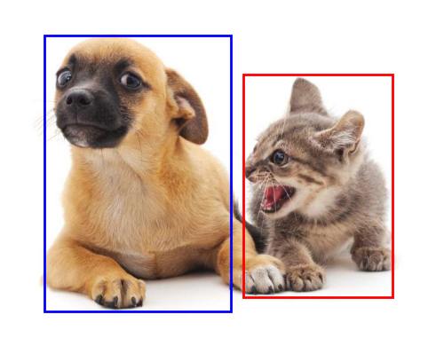
2.2 Anchor Boxes¶
2.2.1 Anchor generation¶
Suppose that the input image has a height of \(H\) and width of \(W\). Given \(n\) scales and \(m\) aspect ratios, anchor boxes are generated centered on each pixel of the image. Rather than using all \(n \times m\) combinations, each pixel gets \(n + m - 1\) anchors (one per scale paired with \(r_1\), plus \(s_1\) paired with each remaining ratio). All coordinates are normalised to \([0, 1]\).
Why only combinations with \(s_1\) or \(r_1\)? With \(n\) scales and \(m\) ratios, using every \((s_i, r_j)\) pair would produce \(n \times m\) anchors per pixel — for the 3×3 case 9 instead of 5 — multiplying memory and NMS cost across all pixels. The reduction is justified because extreme cross-combinations like \((s_3, r_3)\) (a large-scale, wide-ratio box) are rarely matched to real objects and add little coverage that the other anchors don’t already provide.
The rule of thumb is: vary aspect ratio at the smallest scale \((s_1, r_k)\) because small objects appear in the most diverse shapes, and vary scale at the default ratio \((s_k, r_1)\) because larger objects tend to have near-square bounding boxes. This \(n + m - 1\) heuristic originates from the SSD paper; later approaches like YOLOv2+ replaced it by running \(k\)-means clustering on all ground-truth box dimensions in the training set. The idea is simple: collect every annotated box in your dataset, plot them by width and height, and let the algorithm automatically find \(k\) “typical shapes” that best represent the spread. Those \(k\) representative shapes become the anchors, so instead of guessing a hand-crafted grid of scales and ratios, you get priors that directly reflect what objects in your specific dataset actually look like.
def multibox_prior(data, sizes, ratios):
"""Generate anchor boxes with different shapes centered on each pixel."""
in_height, in_width = data.shape[-2:]
device, num_sizes, num_ratios = data.device, len(sizes), len(ratios)
boxes_per_pixel = (num_sizes + num_ratios - 1)
size_tensor = torch.tensor(sizes, device=device)
ratio_tensor = torch.tensor(ratios, device=device)
# Offsets are required to move the anchor to the center of a pixel. Since
# a pixel has height=1 and width=1, we choose to offset our centers by 0.5
offset_h, offset_w = 0.5, 0.5
steps_h = 1.0 / in_height # Scaled steps in y axis
steps_w = 1.0 / in_width # Scaled steps in x axis
# Generate all center points for the anchor boxes
center_h = (torch.arange(in_height, device=device) + offset_h) * steps_h
center_w = (torch.arange(in_width, device=device) + offset_w) * steps_w
shift_y, shift_x = torch.meshgrid(center_h, center_w, indexing='ij')
shift_y, shift_x = shift_y.reshape(-1), shift_x.reshape(-1)
# Generate `boxes_per_pixel` number of heights and widths that are later
# used to create anchor box corner coordinates (xmin, xmax, ymin, ymax)
w = torch.cat((size_tensor * torch.sqrt(ratio_tensor[0]),
sizes[0] * torch.sqrt(ratio_tensor[1:])))\
* in_height / in_width # Handle rectangular inputs
h = torch.cat((size_tensor / torch.sqrt(ratio_tensor[0]),
sizes[0] / torch.sqrt(ratio_tensor[1:])))
# Divide by 2 to get half height and half width
anchor_manipulations = torch.stack((-w, -h, w, h)).T.repeat(
in_height * in_width, 1) / 2
# Each center point will have `boxes_per_pixel` number of anchor boxes, so
# generate a grid of all anchor box centers with `boxes_per_pixel` repeats
out_grid = torch.stack([shift_x, shift_y, shift_x, shift_y],
dim=1).repeat_interleave(boxes_per_pixel, dim=0)
output = out_grid + anchor_manipulations
return output.unsqueeze(0)
import numpy as np
img_t = torch.tensor(np.array(img)).permute(2, 0, 1).unsqueeze(0).float()
h, w = img_t.shape[-2:]
print(f'Image size: {h}×{w}')
anchors = multibox_prior(img_t, sizes=[0.75, 0.5, 0.25], ratios=[1, 2, 0.5])
print(f'Anchor tensor shape: {anchors.shape}')
print(f'Expected (1, {h}×{w}×5, 4) = (1, {h*w*5}, 4)')
Image size: 561×728
Anchor tensor shape: torch.Size([1, 2042040, 4])
Expected (1, 561×728×5, 4) = (1, 2042040, 4)
# Visualise the 5 anchor shapes at a single pixel
def show_bboxes(axes, bboxes, labels=None, colors=None):
"""Show bounding boxes."""
def make_list(obj, default_values=None):
if obj is None:
obj = default_values
elif not isinstance(obj, (list, tuple)):
obj = [obj]
return obj
labels = make_list(labels)
colors = make_list(colors, ['b', 'g', 'r', 'm', 'c'])
for i, bbox in enumerate(bboxes):
color = colors[i % len(colors)]
rect = bbox_to_rect(bbox.detach().numpy(), color)
axes.add_patch(rect)
if labels and len(labels) > i:
text_color = 'k' if color == 'w' else 'w'
axes.text(rect.xy[0], rect.xy[1], labels[i],
va='center', ha='center', fontsize=9, color=text_color,
bbox=dict(facecolor=color, lw=0))
boxes_per_pixel = 5
pixel_row, pixel_col = 250, 250
pixel_idx = pixel_row * w + pixel_col
pixel_anchors = anchors[0, pixel_idx*boxes_per_pixel : (pixel_idx+1)*boxes_per_pixel]
# Convert [0,1] → pixel coordinates
pixel_anchors_px = pixel_anchors * torch.tensor([w, h, w, h], dtype=torch.float)
fig, ax = plt.subplots(figsize=(7, 5))
ax.imshow(img)
show_bboxes(ax, pixel_anchors_px,
labels=['s=0.75,r=1','s=0.5,r=1','s=0.25,r=1','s=0.75,r=2','s=0.75,r=0.5'])
ax.set_title(f'5 anchors at pixel ({pixel_col}, {pixel_row})')
plt.tight_layout()
plt.show()

The blue anchor box with a scale of 0.75 and an aspect ratio of 1 well surrounds the dog in the image.
But the question is: how can “well” here be quantified?
The answer is: by measuring similarities
2.2.2 Intersection over Union (IoU) as an evaluation metric¶
IoU is a key metric for measuring the overlap between a predicted bounding box and the groundtruth bounding box. Also known as Jaccard index, IoU is defined as the ratio of the intersection area to the union area between the two bounding boxes (\(J(\mathcal{A}, \mathcal{B})=\frac{|\mathcal{A} \cap \mathcal{B}|}{|\mathcal{A} \cup \mathcal{B}|}\)).
We will use IoU to measure the similarity between anchor boxes and ground-truth bounding boxes. A higher IoU value indicates better alignment between the predicted and groundtruth bounding boxes.

def box_iou(boxes1, boxes2):
"""Compute pairwise IoU across two lists of anchor or bounding boxes."""
box_area = lambda boxes: ((boxes[:, 2] - boxes[:, 0]) *
(boxes[:, 3] - boxes[:, 1]))
# Shape of `boxes1`, `boxes2`, `areas1`, `areas2`: (no. of boxes1, 4),
# (no. of boxes2, 4), (no. of boxes1,), (no. of boxes2,)
areas1 = box_area(boxes1)
areas2 = box_area(boxes2)
# Shape of `inter_upperlefts`, `inter_lowerrights`, `inters`: (no. of
# boxes1, no. of boxes2, 2)
inter_upperlefts = torch.max(boxes1[:, None, :2], boxes2[:, :2])
inter_lowerrights = torch.min(boxes1[:, None, 2:], boxes2[:, 2:])
inters = (inter_lowerrights - inter_upperlefts).clamp(min=0)
# Shape of `inter_areas` and `union_areas`: (no. of boxes1, no. of boxes2)
inter_areas = inters[:, :, 0] * inters[:, :, 1]
union_areas = areas1[:, None] + areas2 - inter_areas
return inter_areas / union_areas
— Preparing training labels (offline, uses ground truth) —
2.2.3 Assigning ground-truth boxes to anchors¶
Before training, every anchor box must be told what it is responsible for predicting. This is decided once, offline, using the ground-truth boxes already provided in the dataset.
Given an image, suppose the anchor boxes are \(A_1, A_2, \ldots, A_{n_a}\) and the ground-truth boxes are \(B_1, B_2, \ldots, B_{n_b}\), where \(n_a \geq n_b\) (there are always more anchors than objects). Define the matrix \(\mathbf{X} \in \mathbb{R}^{n_a \times n_b}\), where each element \(x_{ij}\) is the IoU between anchor \(A_i\) and ground-truth box \(B_j\).
Assignment algorithm:
Find the largest element in \(\mathbf{X}\) across all remaining rows and columns — this identifies the anchor-ground-truth pair with highest overlap.
Assign that pair: the anchor takes on the corresponding ground-truth box.
Discard that anchor’s row and that ground-truth box’s column from further consideration — each anchor and each ground-truth box can only be matched once at this stage.
Repeat steps 1–3 until every ground-truth box has been assigned to an anchor.
This guarantees each ground-truth box gets matched to its single best-overlapping anchor, and no anchor is “wasted” on a box that’s already been claimed by a better match.
Leftover anchors
Since \(n_a \geq n_b\), most anchors will not be assigned by this process. For each leftover anchor, compute its IoU with every ground-truth box and take the maximum:
If this maximum IoU exceeds a chosen threshold (e.g. 0.5), the anchor is assigned to that ground-truth box’s class.
Otherwise, the anchor is labelled background — it isn’t responsible for predicting any object.
This second pass ensures anchors with a strong but non-maximal overlap still contribute useful training signal, rather than being discarded just because another anchor matched the same box even more closely.

Process: finding global max –> discarding the row and column it is located –> repeat this process until we have assigned \(n_b\) ground-truth bounding boxes.
As demonstrated in the figure above, \(B_3\) is assigned to \(A_2\), \(B_1\) is assigned to \(A_7\), \(B_4\) is assigned to \(A_5\), and \(B_2\) is assigned to \(A_9\). Then, according to the threshold, it will be determined for the remaining anchor boxes \(A_1, A_3, A_4, A_6, A_8\) if they will be assigned a ground-truth bounding box or not.
def assign_anchor_to_bbox(ground_truth, anchors, device, iou_threshold=0.5):
"""Assign closest ground-truth bounding boxes to anchor boxes."""
num_anchors, num_gt_boxes = anchors.shape[0], ground_truth.shape[0]
# Element x_ij in the i-th row and j-th column is the IoU of the anchor
# box i and the ground-truth bounding box j
jaccard = box_iou(anchors, ground_truth)
# Initialize the tensor to hold the assigned ground-truth bounding box for
# each anchor
anchors_bbox_map = torch.full((num_anchors,), -1, dtype=torch.long,
device=device)
# Assign ground-truth bounding boxes according to the threshold
max_ious, indices = torch.max(jaccard, dim=1)
anc_i = torch.nonzero(max_ious >= iou_threshold).reshape(-1)
box_j = indices[max_ious >= iou_threshold]
anchors_bbox_map[anc_i] = box_j
col_discard = torch.full((num_anchors,), -1)
row_discard = torch.full((num_gt_boxes,), -1)
for _ in range(num_gt_boxes):
max_idx = torch.argmax(jaccard) # Find the largest IoU
box_idx = (max_idx % num_gt_boxes).long()
anc_idx = (max_idx / num_gt_boxes).long()
anchors_bbox_map[anc_idx] = box_idx
jaccard[:, box_idx] = col_discard
jaccard[anc_idx, :] = row_discard
return anchors_bbox_map
2.2.4 Labels for each anchor¶
Once every anchor has been assigned (either to a ground-truth box, or to background), two labels are derived for it:
Class label
For an anchor box \(A\) that is matched to ground-truth box \(B\), the class of \(A\) is labelled as the class of \(B\). Anchors matched to no ground-truth box (background) receive a special background class.
Offset label
Regarding the offset, we apply transformations to the relative positions and sizes of boxes \(A\) and \(B\), given the varying positions and sizes of different boxes in the dataset, in order to work with more uniformly distributed offsets that are easier to fit.
A common transformation, given the central coordinates of \(A\) and \(B\) as \((x_a, y_a)\) and \((x_b, y_b)\), their widths as \(w_a\) and \(w_b\), and their heights as \(h_a\) and \(h_b\), respectively, the offset of \(A\) is labelled as:
Default values of the constants are \(\mu_x=\mu_y=\mu_w=\mu_h=0\), \(\sigma_x=\sigma_y=0.1\), and \(\sigma_w=\sigma_h=0.2\).
Background anchors have no meaningful offset, since there is no ground-truth box to regress toward.
def offset_boxes(anchors, assigned_bb, eps=1e-6):
"""Transform for anchor box offsets."""
c_anc = box_corner_to_center(anchors)
c_assigned_bb = box_corner_to_center(assigned_bb)
offset_xy = 10 * (c_assigned_bb[:, :2] - c_anc[:, :2]) / c_anc[:, 2:]
offset_wh = 5 * torch.log(eps + c_assigned_bb[:, 2:] / c_anc[:, 2:])
offset = torch.cat([offset_xy, offset_wh], axis=1)
return offset
Brief summary
Given a set of ground-truth (GT) boxes, each anchor is assigned a label:
Condition |
Label |
|---|---|
Best anchor for a GT box (by IoU) |
Positive — that GT class |
IoU ≥ threshold with any GT box |
Positive |
IoU < threshold (and not best) |
Background (0) |
In the function below, the background class is set to zero and a new class is assigned with an integer index of increments by one.
def multibox_target(anchors, labels):
"""Label anchor boxes using ground-truth bounding boxes."""
batch_size, anchors = labels.shape[0], anchors.squeeze(0)
batch_offset, batch_mask, batch_class_labels = [], [], []
device, num_anchors = anchors.device, anchors.shape[0]
for i in range(batch_size):
label = labels[i, :, :]
anchors_bbox_map = assign_anchor_to_bbox(
label[:, 1:], anchors, device)
bbox_mask = ((anchors_bbox_map >= 0).float().unsqueeze(-1)).repeat(
1, 4)
# Initialize class labels and assigned bounding box coordinates with
# zeros
class_labels = torch.zeros(num_anchors, dtype=torch.long,
device=device)
assigned_bb = torch.zeros((num_anchors, 4), dtype=torch.float32,
device=device)
# Label classes of anchor boxes using their assigned ground-truth
# bounding boxes. If an anchor box is not assigned any, we label its
# class as background (the value remains zero)
indices_true = torch.nonzero(anchors_bbox_map >= 0)
bb_idx = anchors_bbox_map[indices_true]
class_labels[indices_true] = label[bb_idx, 0].long() + 1
assigned_bb[indices_true] = label[bb_idx, 1:]
# Offset transformation
offset = offset_boxes(anchors, assigned_bb) * bbox_mask
batch_offset.append(offset.reshape(-1))
batch_mask.append(bbox_mask.reshape(-1))
batch_class_labels.append(class_labels)
bbox_offset = torch.stack(batch_offset)
bbox_mask = torch.stack(batch_mask)
class_labels = torch.stack(batch_class_labels)
return (bbox_offset, bbox_mask, class_labels)
bbox_scale = torch.tensor((w, h, w, h))
ground_truth = torch.tensor([[0, 0.1, 0.08, 0.52, 0.92],
[1, 0.55, 0.2, 0.9, 0.88]])
anchors = torch.tensor([[0, 0.1, 0.2, 0.3], [0.15, 0.2, 0.4, 0.4],
[0.63, 0.05, 0.88, 0.98], [0.66, 0.45, 0.8, 0.8],
[0.57, 0.3, 0.92, 0.9]])
fig = plt.imshow(img)
show_bboxes(fig.axes, ground_truth[:, 1:] * bbox_scale, ['dog', 'cat'], 'k')
show_bboxes(fig.axes, anchors * bbox_scale, ['0', '1', '2', '3', '4']);
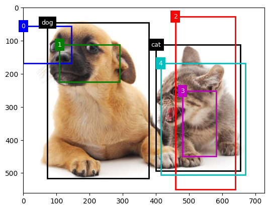
# Ground truth: (class, x1, y1, x2, y2) in [0,1] coords
labels = torch.tensor([[
[0., 0.1, 0.08, 0.52, 0.92], # dog (class 0)
[1., 0.55, 0.2, 0.9, 0.88], # cat (class 1)
]])
anchors_small = multibox_prior(img_t, sizes=[0.15, 0.3, 0.6], ratios=[1, 2])
offsets, masks, cls_tgts = multibox_target(anchors_small, labels)
print(f'Anchor tensor shape : {anchors_small.shape}')
print(f'Offset targets shape : {offsets.shape}')
print(f'Mask shape : {masks.shape}')
print(f'Class targets shape : {cls_tgts.shape}')
print(f'Positive anchors : {(cls_tgts > 0).sum().item()}')
print(f'Background anchors : {(cls_tgts == 0).sum().item()}')
Anchor tensor shape : torch.Size([1, 1633632, 4])
Offset targets shape : torch.Size([1, 6534528])
Mask shape : torch.Size([1, 6534528])
Class targets shape : torch.Size([1, 1633632])
Positive anchors : 51358
Background anchors : 1582274
— Using the trained model (inference, no ground truth) —
2.2.5 Bounding box prediction with non-maximum suppression (NMS)¶
During prediction, multiple anchor boxes would be generated for the image, and the classes and offsets for each of the boxes are predicted. In other words, a predicted bounding box is obtained according to an anchor box with its predicted offset.
def offset_inverse(anchors, offset_preds):
"""Predict bounding boxes based on anchor boxes with predicted offsets."""
anc = box_corner_to_center(anchors)
pred_bbox_xy = (offset_preds[:, :2] * anc[:, 2:] / 10) + anc[:, :2]
pred_bbox_wh = torch.exp(offset_preds[:, 2:] / 5) * anc[:, 2:]
pred_bbox = torch.cat((pred_bbox_xy, pred_bbox_wh), axis=1)
predicted_bbox = box_center_to_corner(pred_bbox)
return predicted_bbox
The similar predicted bounding boxes that belong to the same object are merged by using non-maximum suppression (NMS).


Please refer to this paper for more details
def nms(boxes, scores, iou_threshold):
"""Sort confidence scores of predicted bounding boxes."""
B = torch.argsort(scores, dim=-1, descending=True)
keep = [] # Indices of predicted bounding boxes that will be kept
while B.numel() > 0:
i = B[0]
keep.append(i)
if B.numel() == 1: break
iou = box_iou(boxes[i, :].reshape(-1, 4),
boxes[B[1:], :].reshape(-1, 4)).reshape(-1)
inds = torch.nonzero(iou <= iou_threshold).reshape(-1)
B = B[inds + 1]
return torch.tensor(keep, device=boxes.device)
def multibox_detection(cls_probs, offset_preds, anchors, nms_threshold=0.5,
pos_threshold=0.009999999):
"""Predict bounding boxes using non-maximum suppression."""
device, batch_size = cls_probs.device, cls_probs.shape[0]
anchors = anchors.squeeze(0)
num_classes, num_anchors = cls_probs.shape[1], cls_probs.shape[2]
out = []
for i in range(batch_size):
cls_prob, offset_pred = cls_probs[i], offset_preds[i].reshape(-1, 4)
conf, class_id = torch.max(cls_prob[1:], 0)
predicted_bb = offset_inverse(anchors, offset_pred)
keep = nms(predicted_bb, conf, nms_threshold)
# Find all non-`keep` indices and set the class to background
all_idx = torch.arange(num_anchors, dtype=torch.long, device=device)
combined = torch.cat((keep, all_idx))
uniques, counts = combined.unique(return_counts=True)
non_keep = uniques[counts == 1]
all_id_sorted = torch.cat((keep, non_keep))
class_id[non_keep] = -1
class_id = class_id[all_id_sorted]
conf, predicted_bb = conf[all_id_sorted], predicted_bb[all_id_sorted]
# Here `pos_threshold` is a threshold for positive (non-background)
# predictions
below_min_idx = (conf < pos_threshold)
class_id[below_min_idx] = -1
conf[below_min_idx] = 1 - conf[below_min_idx]
pred_info = torch.cat((class_id.unsqueeze(1),
conf.unsqueeze(1),
predicted_bb), dim=1)
out.append(pred_info)
return torch.stack(out)
To illustrate how the algorithm works in practice, we walk through a concrete example using four anchor boxes. For simplicity, we assume all predicted offsets are zero, meaning the predicted bounding boxes coincide exactly with the anchor boxes. We also define a predicted probability for each class — background, dog, and cat.
anchors = torch.tensor([[0.1, 0.08, 0.52, 0.92], [0.08, 0.2, 0.56, 0.95],
[0.15, 0.3, 0.62, 0.91], [0.55, 0.2, 0.9, 0.88]])
offset_preds = torch.tensor([0] * anchors.numel())
cls_probs = torch.tensor([[0] * 4, # Predicted background likelihood
[0.9, 0.8, 0.7, 0.1], # Predicted dog likelihood
[0.1, 0.2, 0.3, 0.9]]) # Predicted cat likelihood
The predicted bounding boxes with their confidence can then be plotted on the image.
fig = plt.imshow(img)
show_bboxes(fig.axes, anchors * bbox_scale,
['dog=0.9', 'dog=0.8', 'dog=0.7', 'cat=0.9'])

We then invoke the multibox_detection function to perform NMS, where the threshold is set to 0.5.
output = multibox_detection(cls_probs.unsqueeze(dim=0),
offset_preds.unsqueeze(dim=0),
anchors.unsqueeze(dim=0),
nms_threshold=0.5)
output
tensor([[[ 0.0000, 0.9000, 0.1000, 0.0800, 0.5200, 0.9200],
[ 1.0000, 0.9000, 0.5500, 0.2000, 0.9000, 0.8800],
[-1.0000, 0.8000, 0.0800, 0.2000, 0.5600, 0.9500],
[-1.0000, 0.7000, 0.1500, 0.3000, 0.6200, 0.9100]]])
output.shape
torch.Size([1, 4, 6])
The shape of the returned result is (batch size, number of anchor boxes, 6). The six elements in the innermost dimension gives the output information for the same predicted bounding box.
The first element is the predicted class index: 0 is dog and 1 is cat; the value -1 indicates background or removal in non-maximum suppression.
The second element is the confidence of the predicted bounding box.
The remaining four elements are the \((x, y)\)-axis coordinates of the upper-left corner and the lower-right corner of the predicted bounding box, respectively (range is between 0 and 1).
After removing class with -1:
fig = plt.imshow(img)
for i in output[0].detach().numpy():
if i[0] == -1:
continue
label = ('dog=', 'cat=')[int(i[0])] + str(i[1])
show_bboxes(fig.axes, [torch.tensor(i[2:]) * bbox_scale], label)
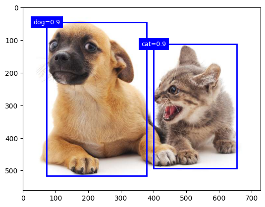
3. From CNN to Yolo (You Only Look it Once)¶
The CNN classifier used in each crop here is exactly the architecture studied in Episode 2 (CNN Fundamentals — LeNet, AlexNet) and Episode 3 (Transfer Learning — VGG, ResNet, ViT). The backbone–head separation introduced in Episode 3 directly maps onto the feature extractor–detection head separation that Faster R-CNN and YOLO formalise: the backbone extracts features once from the full image, and the detection head replaces the classification head to predict boxes and classes instead of a single image-level label.
3.1 CNN¶
Going back to the classfication + localization problem, the most straightforward idea: slide a fixed-size window across the image at multiple scales and positions, run a CNN classifier on each crop, and keep the windows where the classifier fires with high confidence.
for each scale:
for each (x, y) position:
crop = image[y:y+h, x:x+w]
label, score = CNN(crop)
Problem: the number of crops is enormous. For a 600×800 image with windows at 3 scales and a stride of 8 pixels, you get tens of thousands of crops - each requiring a full CNN forward pass.
Method |
Speed |
Notes |
|---|---|---|
Sliding window + CNN |
~minutes/image |
Too slow for any practical use |
3.2 Region-based CNN (R-CNN)¶
Key insight: instead of exhaustively scanning all windows, first propose a small set of candidate regions that are likely to contain objects, then classify only those.
How it works
Region proposals : use Selective Search, a classical CV algorithm that groups pixels by colour and texture similarity, to generate ~2,000 candidate bounding boxes per image.
Warp each proposal to a fixed size (e.g. 227×227).
Extract features : run a CNN on each warped crop to get a feature vector.
Classify : feed each feature vector into a class-specific SVM (support vector machine).
Refine : run a bounding box regression to tighten the box.
Remaining problem
Each of the ~2,000 proposals is processed independently. The CNN runs 2,000 separate forward passes per image! In this regard, the R-CNN is still far too slow for real-time use.
Later R-CNN minus R replaces Selective Search with static bounding box proposals, which is much faster than R-CNN. However, it still falls short of real-time and suffer from not having good proposals which would lead to significant accuracy decrease.
3.3 Fast R-CNN¶
Key insight: run the CNN once on the whole image to produce a shared feature map, then extract features for each region proposal from that map, instead of running the CNN 2000 times.
**How it works*8
Run a CNN on the full image → shared feature map (computed once).
Project each region proposal onto the feature map.
Use RoI (Region of Interest) Pooling to extract a fixed-size feature vector for each proposal from the shared feature map.
Feed each feature vector into a classification head and a box regression head.
The CNN runs only once regardless of the number of proposals, which is a massive speedup. However, now the proposal step becomes the new bottleneck.
Input image
│
├─ CNN (once) ──────────────────► shared feature map
│ │
└─ Selective Search → proposals → RoI Pooling → classification + box regression
(CPU, slow!)
See reference here.
3.4 Faster R-CNN¶
Key insight: It replace Selective Search with a small neural network, Region Proposal Network (RPN), which shares the same feature map as the detection head.
How it work
Run a backbone CNN on the full image → shared feature map.
RPN slides over the feature map and, at each position, proposes anchor boxes and scores them as object / not-object. This is fast because it shares the feature map.
The top-scoring proposals are passed to the detection head via RoI Pooling (same as Fast R-CNN).
However, it is still a two-stage pipeline: first propose, then classify. Each stage adds latency. For real-time applications (video, robotics) this is still too slow.
Input image
│
└─ Backbone CNN ──► shared feature map
│ │
RPN RoI Pooling
(proposals) │
└──────────►└─► classification + box regression
See reference here.
4 YOLO - You Only Look it Once¶
4.1 Introduction to YOLO¶
Yolo is a fundamental shift in object detection. It reframed object detection as a single regression problem. Instead of a two-stage pipeline (propose → classify), predict bounding boxes and class probabilities directly from the full image in one forward pass.
As demontrated in the work of Redmon et al. in the figure below,
{kind=link}
It demonstrates Yolo models detection as a regression problem. The image was devided into an \(S \times S\) grid and for each grid cell, \(B\) bounding boxes, confidence for those boxes, and \(C\) class probabilities are predicted. These predictions are encoded as an \(S \times S \times(B * 5+C)\) tensor.
In this \(S \times S \times(B * 5 + C)\), what are the 5 predictions?
4.2 Architecture and design of YOLOv1¶
4.2.1 Network design¶
YOLOv1 network has 24 convolutionl layers followed by 2 fully connected layers. The alternaing \(1 \times 1\) convolutional layers reduce the features space from preceding layers.
The model was evaluated on the PASCAL VOC detection dataset with \(S=7, B=2\), and \(C=20\), therefore the final prediction is a \(7\times7\times30\) tensor.

As shown in the figure above, the model takes an input image of size \(448\times448\times3\), and by the end of the feature extraction stage, the network produces a tensor of size \(7\times7\times1024\). The \(7\times7\) spatial locations encodes rich feature information about a specific region of the image.
On top of the feature extractor sits the detection head that maps the \(7\times7\times1024\) tensor to a final output of size \(7\times7\times30\). For the 30 output channels, the first 10 values correspond to the two predicted bounding boxesm and the remaining 20 values represent the class logits for the object categories.

4.2.2 Training: the loss function¶
\(\begin{aligned} \lambda_{\text {coord }} \sum_{i=0}^{S^2} \sum_{j=0}^B \mathbb{1}_{i j}^{\text {obj }} & {\left[\left(x_i-\hat{x}_i\right)^2+\left(y_i-\hat{y}_i\right)^2\right] } \\ +\lambda_{\text {coord }} \sum_{i=0}^{S^2} \sum_{j=0}^B \mathbb{1}_{i j}^{\text {obj }} & {\left[\left(\sqrt{w_i}-\sqrt{\hat{w}_i}\right)^2+\left(\sqrt{h_i}-\sqrt{\hat{h}_i}\right)^2\right] } \\ & +\sum_{i=0}^{S^2} \sum_{j=0}^B \mathbb{1}_{i j}^{\text {obj }}\left(C_i-\hat{C}_i\right)^2 \\ & +\lambda_{\text {noobj }} \sum_{i=0}^{S^2} \sum_{j=0}^B \mathbb{1}_{i j}^{\text {noobj }}\left(C_i-\hat{C}_i\right)^2 \\ & \quad+\sum_{i=0}^{S^2} \mathbb{1}_i^{\text {obj }} \sum_{c \in \text { classes }}\left(p_i(c)-\hat{p}_i(c)\right)^2\end{aligned}\)
\(\mathbb{1}_i^{\text {obj }}\) denotes if object appears in cell \(i\) and \(\mathbb{1}_{i j}^{\text {obj }}\) denotes that the \(j\) th bounding box predictor in cell \(i\) is “responsible” for that prediction.
The first term focuses on localizing the center of the bounding boxes, and is only activated for the bounding box that is responsible for predicting a specific object, as denoted by \(\mathbb{1}_i^{\text {obj }}\).
The second term handles the width and height of the bounding boxes, with squared roots compared, in order to reflect that small deviations in large boxes matter less than in small boxes
The third term measures how well the model predicts the confidence score for boxes that contain objects.
The fourth term deals with much larger number of bounding boxes that do not contain any object. Actually in every image many grid cells fall into this category, which pushes the “confidence” scores of those cells towards zero, often overpowering the gradient from cells that do contain objects. This can cause training to diverge early on. To remedy this problem, the two parameters \(\lambda_{\text {coord }}\) and \(\lambda_{\text {noobj }}\) are applied. By setting \(\lambda_{\text {coord }}=5\) and \(\lambda_{\text {noobj }}=0.5\), the loss from bounding box coordinate predictions is increased while the loss from confidence predictions for boxes that do no contain objects is decreased.
The fifth term is responsible for classification. This classfication loss is only applied to cells that contain objects, ensuring that the background cells do not influence class predictions.
4.2.3 Inference: Non-maximal suppression¶
At this stage, the model produces a large number of overlapping bounding boxes, many referring to the same object. To obtain a clean final result, NMS is applied (introduced in Sec. 2.2.5): it first removes boxes with low confidence scores, then iteratively selects the highest-confidence box and suppresses all others that overlap significantly with it. Redundant detections are eliminated, leaving only the most confident, non-overlapping predictions.

4.2.4 YOLOv1: limitations and developments beyond¶
There is no proposal stage, no RoI pooling, no second-stage classifier. The entire computation is a single CNN forward pass, which is directly optimizable end-to-end and way more faster.
YOLOv1 was significantly faster than Faster R-CNN but less accurate, particularly on small objects and densely packed scenes. Subsequent versions (v2–v8) closed this gap by adopting anchor boxes (v2), multiscale detection (v3), better backbones, and eventually anchor-free designs (v8).
Input image
│
└─ CNN (single forward pass)
│
└─► S×S grid → B boxes + confidence + C class probs per cell
│
NMS
│
Final detections
Feel free to check this review for a comprehensive understanding of evolution of Yolo architectures.
{kind=link}
While the figure above stops at YOLOv12, a few more steps sit between there and the models we use today. YOLOv10 (2024) was the first to pioneer NMS-free detection. YOLO11 (Oct. 2024, official Ultralytics release) is what we will use in the hands-on session. It builds on v8’s anchor-free design with a more efficient backbone and an added attention module, achieving higher accuracy with fewer parameters than v8. The community-driven YOLOv12/v13 explored attention-centric architectures in parallel but are outside the mainstream Ultralytics line.
YOLO26 (2025) is the current frontier. It builds further on YOLO11, adding NMS-free end-to-end inference and removing Distribution Focal Loss (DFL) for edge-device efficiency. We cover it briefly in section 4.4 as a pointer to where the field is heading.
v1 v8 v10 v11 v26
│ │ │ │ │
proposal-free ✓ (grid) ✓ (grid) ✓ (grid) ✓ (grid) ✓ (grid)
anchor-free ✗ ✓ ✓ ✓ ✓
attention ✗ ✗ ✗ ✓ (C2PSA) ✓
NMS required ✓ ✓ ✗ (first) ✓ ✗ (refined)
The following figure illustrates how Ultralytics YOLO has steadily expanded its capabilities beyond detection to become a versatile multi-task vision framework.
{kind=link}
Ref for this figure Timeline of Ultralytics YOLO models. Solid boxes = supported natively, dashed models = not supported. * indicates feature added later via community extensions.
The rest of this section covers YOLO11’s architecture in detail (4.3 for detection, 4.4 for segmentation), then briefly introduces what YOLO26 adds on top (4.5).
4.3 YOLO11 architecture for detection¶
YOLO11 follows the standard three-stage YOLO structure: backbone → neck → head. Each stage has a specific role and YOLO11 introduces targeted improvements at each one.
Input image
│
└─ Backbone (feature extraction)
│
└─ Neck (multi-scale feature fusion)
│
└─ Head (prediction: boxes + classes)

4.3.1 Backbone: C3k2 blocks + SPPF + C2PSA¶
The backbone extracts hierarchical features from the input image at progressively coarser spatial resolutions. YOLO11 introduces three key building blocks here:
C3k2 (Cross Stage Partial with bottleneck kernel size 2) Replaces the C2f blocks used in YOLOv8. The CSP design splits the feature map into two paths — one goes through convolutional bottleneck blocks, one bypasses them — then merges both, improving gradient flow and feature reuse. The “k2” refers to the bottleneck convolutions inside the heavy path using smaller 2×2 kernels (rather than the standard 3×3), while the outer convolutions remain 3×3. This reduces parameters and computation within the bottleneck while preserving the effective receptive field of the overall block, giving C3k2 its efficiency advantage over YOLOv8’s C2f blocks.
SPPF (Spatial Pyramid Pooling — Fast) Applies max pooling at multiple scales in sequence (rather than in parallel, as in earlier SPP designs) to capture context from different receptive field sizes efficiently. This gives the network a sense of global context without losing local detail, which can be particularly useful for detecting defects at varying scales.
C2PSA (Convolutional block with Parallel Spatial Attention) Adds a lightweight spatial attention mechanism after SPPF, allowing the network to focus on the most relevant regions of the feature map while suppressing background noise and highlighting candidate object regions. This is what makes YOLO11 notably better than v8 at small-object detection.
4.3.2 Neck: PAN/FPN with C3k2¶
The neck fuses feature maps from different backbone stages, combining coarse semantic information (deep layers) with fine spatial detail (shallow layers). YOLO11 uses a PAN/FPN-style (Path Aggregation Network / Feature Pyramid Network) neck: features flow top-down (semantic context from deep layers to shallow) and bottom-up (spatial detail from shallow layers to deep), so every scale in the pyramid benefits from both, thus enabling accurate detection of defects at all sizes.
C3k2 blocks are reused in the neck as well, keeping computational cost low while maintaining discriminative power at each scale.
(This neck is shared infrastructure for both detection and segmentation. The segmentation head in 4.3 reads from the same fused multi-scale features.)
4.3.3 Detection head: anchor-free, multi-scale¶
The neck produces feature maps at three different scales, each suited to detecting objects of a different size range:
Large \(80 \times 80\) Small objects (fine spatial detail)
Medium \(40 \times 40\) Medium objects
Small \(20 \times 20\) Large objects (rich semantic context)
This multi-scale design directly addresses a core challenge in industrial inspection: defects can vary enormously in size: a thin scratch occupies only a few pixels, while a large rolled-in scale defect can span a significant portion of the image. A single-scale detector would need to compromise between spatial resolution and semantic richness, performing poorly at one end of the size spectrum. By maintaining three separate detection layers, each operating at its own resolution, YOLO11 can detect small defects with fine spatial precision and large defects with strong semantic context simultaneously.
Each detection layer predicts, for every spatial location:
Box coordinates (center x, y, width, height): directly regressed, anchor-free
Class probabilities: one score per class
Confidence score: how likely an object is present at this location
Since the model is anchor-free, there are no predefined anchor shapes to match against, i.e., box dimensions are predicted directly, making the model easier to adapt to new datasets (no anchor shape tuning required per domain).
Candidate predictions from all three scales are then filtered by NMS at inference time to remove duplicate detections of the same object.
4.4 YOLO11 architecture for segmentation¶
4.4.1 Same backbone and neck, added segmentation head¶
YOLO11’s segmentation variant (YOLO11-seg) shares the exact same backbone and neck as the detection model described in 4.3. No additional feature extraction is needed. Segmentation is detection plus one additional output branch, trained jointly.
The detection head already identifies where each object is (bounding box + class). The segmentation head adds what shape it is using the same shared features, which is a pixel-level mask.

4.4.2 Prototype masks and mask coefficients¶
Rather than predicting a full-resolution mask per object directly (expensive and slow), YOLO11-seg uses a two-part approach inherited from YOLACT (You Only Look At Coefficients, Bolya et al., ICCV 2019, see the figure above):
Prototype masks
A small auxiliary branch runs in parallel with the detection head, taking the neck’s feature maps as input and producing a fixed set of \(k\) prototype masks (typically \(k=32\)), each a low-resolution spatial map of the same height and width as the feature map, but with no object-specific meaning on its own.
Think of the prototypes as a learned basis for all possible object shapes in the dataset, which is roughly analogous to how a small set of basis vectors can linearly combine to approximate many different vectors. Each prototype captures a different spatial pattern: one might activate strongly at object edges, another at object centres, another at elongated horizontal regions. These \(k\) prototypes are shared across every object detected in the image.
Mask coefficients
For each detected object, the detection head predicts a vector of \(k\) mask coefficients \(\mathbf{c} \in \mathbb{R}^k\), one coefficient per prototype, alongside the usual box coordinates and class scores. These coefficients can be positive or negative, allowing flexible linear combinations.
The final instance mask for that object is then computed as:
\[M=\sigma\left(P C^T\right),\]where \(P\) is an \(h \times w \times k\) matrix of prototype masks and \(C\) is a \(n \times k\) matrix of mask coefficients for \(n\) instances surviving NMS and score thresholding. \(\sigma\) is the sigmoid function that squashes the output to \([0, 1]\) (producing a soft mask, thresholded to binary at inference time).
Why this is efficient
The key insight is that the \(k\) prototype masks are computed once for the entire image, regardless of how many objects are detected. Each object’s mask is then just a cheap linear combination applied to those shared prototypes. This avoids the computational cost of running a separate mask prediction branch for every detected object independently, which is what makes this approach fast enough for real-time use.
What the network actually learns
During training, the prototype branch learns to produce spatial patterns that, when linearly combined with the right coefficients, can reconstruct the ground-truth masks of all objects in the image. The detection head simultaneously learns to predict the right coefficients for each detected object. Both are trained jointly end-to-end via a mask loss (binary cross-entropy between the predicted soft mask and the ground-truth binary mask, cropped to the object’s bounding box).
4.5 From YOLO11 to YOLO26 (brief)¶
This section is a pointer to where the field is heading — not required for the hands-on session.
YOLO26 (arXiv 2606.03748, Jocher et al., 2025) builds directly on YOLO11, adding three key changes:
NMS-free end-to-end inference (pioneered in v10, now refined): the model produces clean, non-redundant predictions natively, removing the NMS post-processing step entirely
DFL removed: Distribution Focal Loss is replaced by a simpler regression target, improving compatibility with edge hardware and reducing inference latency
Training-time improvements (ProgLoss, STAL, MuSGD): each targets a specific training stability or small-object issue; implementation details, not architectural shifts
The backbone-neck-head structure, anchor-free design, shared segmentation head, and multi-task capability are all inherited directly from YOLO11 — YOLO26 refines the outputs and training, not the core architecture.
For further reading, see the official paper: arXiv 2606.03748.
5. UNet and Transformer-Based Segmentation¶
YOLO11-seg (section 4) is designed for instance segmentation: detecting and masking individual object instances in real time. This chapter introduces a complementary family of architectures built for semantic segmentation, where the goal is to assign a class label to every pixel in the image rather than to individual instances.
We begin with classic U-Net, the foundational encoder-decoder architecture that defined modern segmentation, then examine why transformers were brought in, and finally look at SegFormer as a representative and widely adopted transformer-based segmentation model. The chapter closes with a structured comparison between these approaches and YOLO11-seg.
5.1 Semantic segmentation vs instance segmentation¶
Before introducing U-Net, it is worth being precise about what semantic segmentation does and does not do, relative to the instance segmentation covered in section 4.
Semantic segmentation |
Instance segmentation |
|
|---|---|---|
Output |
Per-pixel class label |
Per-object mask |
Distinguishes instances? |
✗ |
✓ |
Can count objects? |
✗ |
✓ |
Typical architecture |
U-Net, SegFormer |
YOLO11-seg, Mask R-CNN |
Speed |
Slower |
Faster (YOLO) |
Strength |
Fine boundary detail |
Multiple overlapping objects |
Input image Semantic segmentation Instance segmentation
(U-Net) (YOLO11-seg)
┌──────────┐ ┌──────────┐ ┌──────────┐
│ │ │ bg bg │ │ bg bg │
│ ░░ ▓▓ │ ──► │ def def │ │ #1 #2 │
│ ░░ ▓▓ │ │ def def │ │ #1 #2 │
└──────────┘ └──────────┘ └──────────┘
two defects merged into one class distinguished as
'defect' separate instances
The choice depends on the inspection task: if one only needs to locate and classify defect regions, semantic segmentation suffices. If one needs to count or measure individual defect instances separately, instance segmentation is required.
5.2 Classic U-Net¶
U-Net was introduced by Ronneberger et al. (2015) for biomedical image segmentation and quickly became the dominant architecture for dense pixel-level prediction tasks in industrial and medical imaging alike.
Reference: Ronneberger, O., Fischer, P., & Brox, T. (2015). U-Net: Convolutional Networks for Biomedical Image Segmentation. MICCAI. arXiv: 1505.04597
5.2.1 Encoder-decoder with skip connections¶
UNet follows a symmetric encoder-decoder structure, with the key innovation of skip connections between corresponding encoder and decoder stages:

The core idea of U-Net is to supplement a usual contracting network by successive layers, where pooling operators are replaced by upsampling operators.
How U-Net differs from traditional CNNs
1. No fully connected layers — the output is a spatial map, not a single label
Earlier CNN architectures (VGG, AlexNet) ended with fully connected layers that flatten all spatial information into a single vector, producing one label for the whole image. U-Net replaces these with a 1×1 convolution at the final layer, which classifies each spatial position independently and preserves the 2D structure of the image all the way to the output. The result is a full segmentation map (one class label per pixel) rather than a single image-level prediction.
2. Valid convolution — predictions are only made where information is complete
A 3×3 convolution requires a 3×3 neighbourhood around each pixel to compute its output. For pixels at the image border, part of that neighbourhood lies outside the image. U-Net avoids this problem by using valid convolution, i.e., computing outputs only where the full 3×3 neighbourhood is available, and discarding border positions where it is not.
The consequence is that the output segmentation map is slightly smaller than the input image. Each valid convolution trims 1 pixel from each border, and this shrinkage accumulates across all layers:
Input: 572×572 --> repeated valid convolutions (no padding) --> Output: 388×388 (predictions only for pixels with complete context)
Only the 388×388 central region of the input has a corresponding prediction. The outer border pixels, whose neighbourhood would extend outside the image, are simply excluded. No zero-padding is used anywhere, so no artificial values are ever introduced into the computation.
Note: most practical U-Net implementations today use same padding instead, producing an output the same size as the input. Valid convolution was a deliberate design choice of the original 2015 paper for maximum boundary precision, but it is not a fundamental requirement of the UNet architecture.
5.2.2 Why skip connections matter¶
Without skip connections, spatial detail is progressively lost as the encoder downsamples. The decoder receives only a coarse, semantically rich representation and must reconstruct fine boundaries from limited information. Skip connections short-circuit this loss by providing the decoder with access to high-resolution features at every scale:
Without skip connections: With skip connections (UNet):
Encoder ──► Bottleneck Encoder ──► Bottleneck
│ │ │
Decoder (skip) Decoder
│ └──────────────┤
coarse mask fine mask
(blurry boundaries) (sharp boundaries)
This is particularly important for industrial defect segmentation, where the precise boundary delineation that distinguishes exactly which pixels belong to a scratch versus background steel, is critical for downstream measurement and classification.
These skip connections serve a different purpose from ResNet's residual connections (covered in Episode 3, Sec. 5.2). ResNet's shortcuts address the vanishing gradient problem in very deep networks. They give the training signal a direct path backward so early layers keep learning. U-Net's shortcuts address spatial detail loss caused by pooling. They carry high-resolution encoder features directly to the decoder so fine boundaries can be reconstructed. Same structural idea, different motivation.
5.3 Why transformers for segmentation?¶
Classic U-Net is built entirely on convolutional layers, which have a fundamental limitation: local receptive fields. Each convolution only looks at a small neighbourhood of pixels at a time. To capture long-range dependencies (e.g. a defect pattern that spans the image), you need many stacked layers, which is slow and may still miss global structure.
The limitation of pure CNNs for segmentation
CNN convolution: Self-attention (Transformer):
┌─────────────────────┐ ┌─────────────────────┐
│ . . . . . . . . . │ │ . . . . . . . . . │
│ . ┌───┐ . . . . . │ │ . ←───────────── . │
│ . │3×3│ . . . . . │ │ . . . . . . . ↕ . │
│ . └───┘ . . . . . │ │ . . . . ←───────. │
│ . . . . . . . . . │ │ . . . . . . . . . │
└─────────────────────┘ └─────────────────────┘
sees local neighbourhood only every pixel attends to
every other pixel
Self-attention is the core mechanism of transformers and computes relationships between every pair of positions in the image simultaneously, giving the model inherent access to global context at every layer. This is especially valuable for segmentation tasks where:
Defect appearance depends on surrounding context (e.g. a scratch looks different near an edge vs centre)
Long-range spatial patterns need to be recognised (e.g. a rolling defect that spans the full image width)
Fine boundaries need to be recovered with global consistency
The challenge is that pure transformer models (like the original ViT applied to segmentation) produce only single-scale, low-resolution feature maps while losing spatial detail in the process. Transformer-based segmentation architectures like SegFormer solve this by combining transformer encoders with hierarchical, multi-scale designs.
5.4 SegFormer¶
SegFormer (Xie et al., 2021) is a simple and efficient transformer-based segmentation framework that addresses the limitations of both pure CNNs (local receptive field only) and early transformer segmentation models (single-scale features, heavy decoders).
Reference: Xie, E. et al. (2021). SegFormer: Simple and Efficient Design for Semantic Segmentation with Transformers. NeurIPS 2021. arXiv: 2105.15203
5.4.1 Architecture overview¶
SegFormer has two components: a hierarchical Mix Transformer (MiT) encoder and a lightweight all-MLP decoder.
{kind=link}
5.4.2 Mix Transformer encoder (MiT)¶
The MiT encoder is inspired by ViT but redesigned for dense prediction tasks. Key differences from standard ViT:
Hierarchical, multi-scale features: unlike ViT which produces a single low-resolution feature map, MiT produces feature maps at four different scales (H/4, H/8, H/16, H/32), analogous to the multi-scale features in U-Net’s encoder or YOLO11’s backbone. This is essential for segmentation across object scales.
Overlapping patch merging: patches overlap slightly when being merged at each stage, preserving local continuity and boundary detail that non-overlapping patch splitting would lose.
No positional encoding: standard transformers require positional encodings to tell the model where in the image each patch is. MiT replaces these with a Mix-FFN (a small depthwise convolution inside the feed-forward layers) that implicitly encodes positional information. This means SegFormer generalises to image resolutions different from training without accuracy loss, which is an important practical advantage.
Efficient self-attention: standard self-attention scales quadratically with sequence length (i.e. number of patches), which is expensive for high-resolution images. MiT uses Sequence Reduction to reduce the key and value sequences before computing attention, dramatically cutting computational cost at high-resolution stages.
5.4.3 Lightweight all-MLP decoder¶
The decoder is deliberately simple, which is also a key design choice that SegFormer’s authors argue is made possible precisely because the hierarchical transformer encoder already captures both local and global context. A complex decoder is not needed:
Each of the four encoder feature maps is passed through a linear projection to a common channel dimension \(C\)
All four maps are upsampled to the same spatial resolution (H/4 × W/4)
The four maps are concatenated and fused with a linear layer
A final linear layer projects to the number of classes, and the output is upsampled to full image resolution
The entire decoder adds negligible computational overhead. Most of the model’s capacity is in the encoder, where it belongs.
This contrasts with U-Net’s decoder, which uses transposed convolutions and skip connections to recover spatial detail — necessary because UNet’s CNN encoder loses fine detail through pooling, so the decoder has to reconstruct it. SegFormer’s encoder retains multi-scale detail throughout (via the hierarchical stages), so the decoder can afford to be minimal.
Visualization and interpretation regarding the effectiveness of MLP decoder on transformers
{kind=link}
SegFormer’s encoder naturally produces local attentions which resemble convolutions at lower stages, while able to output highly non-local attentions that effectively capture contexts at Stage-4.
The ERF of the MLP head (blue box) is different from that of Stage-4 (red box), demonstrating a significant stronger local attention besides the non-local attention.
DeepLabv3+’s CNN-based encoder remains limited to a relatively small, spatially fixed receptive field even at its deepest stage.
5.5 Comparison: U-Net vs SegFormer vs YOLO11-seg¶
U-Net |
SegFormer |
YOLO11-seg |
|
|---|---|---|---|
Task |
Semantic |
Semantic |
Instance |
Encoder |
CNN (ResNet variants) |
Transformer (MiT) |
CNN (C3k2 + C2PSA) |
Decoder |
CNN + skip connections |
Lightweight MLP |
Prototype masks + coefficients |
Multi-scale features |
Via skip connections |
Via hierarchical stages |
Via PAN/FPN neck |
Global context |
Limited (local conv) |
Strong (self-attention) |
Partial (C2PSA attention) |
Positional encoding |
N/A |
No (Mix-FFN) |
N/A |
Real-time capable |
✗ |
✗ (approx.) |
✓ |
Distinguishes instances |
✗ |
✗ |
✓ |
Typical use case |
Medical/industrial masks |
Scene parsing, high-res images |
Real-time multi-object detection + segmentation |
Design philosophy comparison
U-Net: recover spatial detail in the decoder via skip connections. What the encoder loses through pooling, the decoder rebuilds by referencing earlier encoder features
SegFormer: preserve multi-scale detail in the encoder via hierarchical transformer stages. The decoder stays lightweight because the encoder never throws away spatial detail in the first place
YOLO11-seg: share backbone features between detection and segmentation. Segmentation is an additional output branch, not a separate pipeline, prioritising speed and real-time capability
Learning outcomes¶
This material is for practitioners and researchers in materials science and industrial inspection who want to apply deep learning to surface defect analysis. No prior deep learning experience is required, but familiarity with Python is assumed. The techniques covered transfer directly to related domains such as electron microscopy, medical imaging, crystallography, and broader manufacturing quality control.
By the end of this workshop, learners should be able to:
Explain the two core assumptions behind CNNs (translation invariance and locality) and why they make convolution more parameter-efficient than fully connected layers
Describe and distinguish four computer vision paradigms: anomaly detection, image classification, object detection, and image segmentation, and identify which is appropriate for a given inspection task
Apply transfer learning (feature extraction and fine-tuning) with pretrained CNN and transformer architectures (VGG, ResNet, ViT) to a new defect classification dataset
Explain how PatchCore detects anomalies without labeled defect examples, and contrast this with supervised classifiers and their open-set failure modes
Understand the YOLO family’s progression from two-stage pipelines to single-pass anchor-free detection, and apply YOLO11 to both object detection and instance segmentation tasks
Distinguish semantic segmentation (U-Net, SegFormer) from instance segmentation (YOLO11-seg) and select the appropriate architecture for a given materials inspection scenario
Credit¶
This material was developed by the Sweden AI Factory at NAISS/NSC, Linköping University and RISE.
Parts of the curriculum are adapted from Dive into Deep Learning (CC BY-SA 4.0).
Use of AI assistants
Parts of this material — including draft text, code cells and example notebooks — were produced with the help of AI coding assistants (e.g. Anthropic Claude, GitHub Copilot). All content has been reviewed, tested and edited by the authors, who take full responsibility for its accuracy.
License¶
Licensing
Unless noted otherwise, this material is dual-licensed:
Teaching material, text, figures and other media — CC BY-SA 4.0
Source code, code cells and snippets — MIT
Copyright © 2026 Sweden AI Factory and the contributors.
The full license texts are in
LICENSE
and
LICENSE.code
in the repository.
Suggested attribution
“DEEP Inspection for Materials Science” by Sweden AI Factory, used under CC BY-SA 4.0.
CC BY-SA 4.0 — what this means
You are free to
Share — copy and redistribute the material in any medium or format, for any purpose, even commercially.
Adapt — remix, transform and build upon the material, for any purpose, even commercially.
The licensor cannot revoke these freedoms as long as you follow the license terms.
Under the following terms
Attribution — you must give appropriate credit, provide a link to the license, and indicate if changes were made.
ShareAlike — if you remix or build upon the material, you must distribute your contributions under the same license.
No additional restrictions — you may not apply legal terms or technological measures that legally restrict others from doing anything the license permits.
Notices
You do not have to comply with the license for elements of the material in the public domain, or where your use is permitted by an applicable exception or limitation. No warranties are given; other rights such as publicity, privacy or moral rights may limit how you use the material.
This is a human-readable summary, not a substitute for the legal code.
MIT License — full text
Copyright © 2026 Sweden AI Factory and the contributors.
Permission is hereby granted, free of charge, to any person obtaining a copy of this software and associated documentation files (the “Software”), to deal in the Software without restriction, including without limitation the rights to use, copy, modify, merge, publish, distribute, sublicense, and/or sell copies of the Software, and to permit persons to whom the Software is furnished to do so, subject to the following conditions:
The above copyright notice and this permission notice shall be included in all copies or substantial portions of the Software.
THE SOFTWARE IS PROVIDED “AS IS”, WITHOUT WARRANTY OF ANY KIND, EXPRESS OR IMPLIED, INCLUDING BUT NOT LIMITED TO THE WARRANTIES OF MERCHANTABILITY, FITNESS FOR A PARTICULAR PURPOSE AND NONINFRINGEMENT. IN NO EVENT SHALL THE AUTHORS OR COPYRIGHT HOLDERS BE LIABLE FOR ANY CLAIM, DAMAGES OR OTHER LIABILITY, WHETHER IN AN ACTION OF CONTRACT, TORT OR OTHERWISE, ARISING FROM, OUT OF OR IN CONNECTION WITH THE SOFTWARE OR THE USE OR OTHER DEALINGS IN THE SOFTWARE.